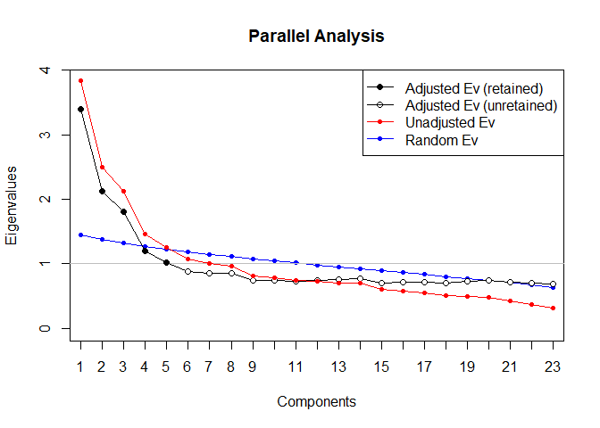
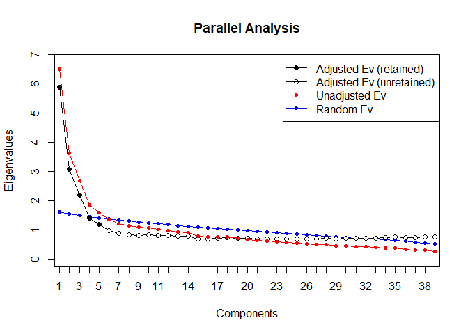
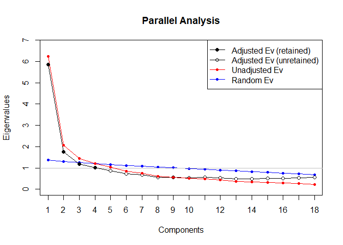

Here we are getting the raw data file from FU1 into a useable form.
file.create(".nojekyll")## [1] TRUElibrary(dplyr)
select <- dplyr::select
data_original = read.csv("C:/r_projects/Autism and Schizotypy/asdsz/Schizotypy and Autism_FU1.csv")
content = data_original %>% dplyr::select(MSS._1:SPQ_35)
questions = sapply(sapply(content[1,], strsplit, "- "), "[[",2)
df=as.data.frame(questions)
write.csv(df, "all questions.csv")
data = data_original %>% filter(id != "")
data = data[-c(1,2),]
data = data %>% dplyr::select(-LocationLatitude, -LocationLongitude, -DistributionChannel, -(RecordedDate:UserLanguage), -IPAddress)Attention Check items; this only includes folks who passed the attention check items. Then, it removes the attention check questions from the data.
question = data[1,] %>% as.vector() %>% unlist() %>% unname()
name = colnames(data)
quest_df = data.frame(question, name)
data_attention_checked = data %>% filter(MSS._7 == "TRUE") %>%
filter(AQ._11 == "Strongly Agree") %>%
filter(AQ._33 == "Neutral") %>%
filter(SeSS_14 == "Always") %>%
filter(SeSS_28 == "Prefer Not to Answer") %>%
filter(ASI_4 == "NO") %>%
filter(WSS_7 == "TRUE") %>%
filter(WSS_36 == "FALSE") %>%
filter(WSS_55 == "FALSE") %>%
filter(SPQ_8 == "Agree") %>%
filter(SPQ_33 == "Strongly Agree") %>%
dplyr::select(-MSS._7,-AQ._11, -AQ._33, -SeSS_14, -SeSS_28, -ASI_4, -WSS_7, -WSS_36, -WSS_55, -SPQ_8, -SPQ_33)
data_attention_checked[data_attention_checked == "" | data_attention_checked == "Prefer Not to Answer"] = NAWe also need to remove people who have been living in the US for two years or less and who answered less than 90% of the survey.
data_attention_checked$US = as.numeric(data_attention_checked$US)
data_attention_checked = data_attention_checked %>% filter(US >= 2 & US < 100)
data_content = data_attention_checked %>% dplyr::select(MSS._1:SPQ_35)
check_empty_prop = function(x){sum(is.na(x)) /ncol(data_content)}
data_attention_checked$empty_prop =apply(data_content, 1, check_empty_prop)
data_attention_checked = data_attention_checked %>% dplyr::filter(empty_prop < 0.1)
data_attention_checked = data_attention_checked %>% dplyr::select(-empty_prop)Here we are changing responses to true/false (logical) or numeric (for Likert-style responses).
data_attention_checked[data_attention_checked == "TRUE"] = T
data_attention_checked[data_attention_checked == "FALSE"] = F
data_attention_checked[data_attention_checked == "Strongly Disagree"] = 1
data_attention_checked[data_attention_checked == "Disagree"] = 2
data_attention_checked[data_attention_checked == "Neutral"] = 3
data_attention_checked[data_attention_checked == "Agree"] = 4
data_attention_checked[data_attention_checked == "Strongly Agree"] = 5
data_attention_checked[data_attention_checked == "Never"] = 1
data_attention_checked[data_attention_checked == "Rarely"] = 2
data_attention_checked[data_attention_checked == "Occasionally"] = 3
data_attention_checked[data_attention_checked == "Usually"] = 4
data_attention_checked[data_attention_checked == "Always"] = 5
data_attention_checked[data_attention_checked == "YES"] = TRUE
data_attention_checked[data_attention_checked == "NO"] = FALSE
df_boolean = data_attention_checked %>% dplyr::select(contains(c("MSS", "ASI", "WSS"))) %>% mutate_all(as.logical)
df_numeric = data_attention_checked %>% dplyr::select(contains(c("SeSS", "SPQ", "AQ"))) %>% mutate_all(as.integer)
df_content = cbind(ID = data_attention_checked$ID, df_boolean, df_numeric)Reverse score the necessary items.
df_content$AQ._18 = 6 - df_content$AQ._18
df_content$AQ._20 = 6 - df_content$AQ._20
df_content$AQ._21 = 6 - df_content$AQ._21
df_content$AQ._22 = 6 - df_content$AQ._22
df_content$AQ._23 = 6 - df_content$AQ._23
df_content$AQ._25 = 6 - df_content$AQ._25
df_content$AQ._26 = 6 - df_content$AQ._26
df_content$AQ._27 = 6 - df_content$AQ._27
df_content$AQ._28 = 6 - df_content$AQ._28
df_content$AQ._30 = 6 - df_content$AQ._30
df_content$AQ._31 = 6 - df_content$AQ._31
df_content$AQ._32 = 6 - df_content$AQ._32
df_content$AQ._36 = 6 - df_content$AQ._36
df_content$AQ._37 = 6 - df_content$AQ._37
df_content$AQ._38 = 6 - df_content$AQ._38
df_content$AQ._39 = 6 - df_content$AQ._39
df_content$AQ._40 = 6 - df_content$AQ._40
df_content$WSS_12 = !df_content$WSS_12
df_content$WSS_35 = !df_content$WSS_35
df_content$WSS_41 = !df_content$WSS_41
df_content$WSS_43 = !df_content$WSS_43
df_content$WSS_44 = !df_content$WSS_44
df_content$WSS_45 = !df_content$WSS_45
df_content$WSS_46 = !df_content$WSS_46
df_content$WSS_48 = !df_content$WSS_48
df_content$WSS_49 = !df_content$WSS_49
df_content$WSS_50 = !df_content$WSS_50
df_content$WSS_51 = !df_content$WSS_51
df_content$WSS_54 = !df_content$WSS_54
df_content$WSS_57 = !df_content$WSS_57
df_content$WSS_59 = !df_content$WSS_59
df_content$WSS_60 = !df_content$WSS_60
df_content$WSS_61 = !df_content$WSS_61
df_content$WSS_62 = !df_content$WSS_62
df_content$WSS_63 = !df_content$WSS_63And save the cleaned data as a cvs!
write.csv(df_content, "survey content.csv")Now that our data are useable, we need to look at the factor structure of the Autism Quotient (AQ) and to select the autism items to be retained for the remaining analyses.
library(dplyr)
library(psych)
library(paran)
library(lavaan)
library(mice)Impute missing values
survey_original = read.csv("survey content.csv")
AQ = survey_original %>% dplyr::select(contains("AQ"))
AQ_imputed_results = mice(AQ, seed = 1234)##
## iter imp variable
## 1 1 AQ._4 AQ._12 AQ._14 AQ._16 AQ._18 AQ._19 AQ._20 AQ._21 AQ._22 AQ._23 AQ._24 AQ._25 AQ._26 AQ._27 AQ._28 AQ._30 AQ._32 AQ._34 AQ._35 AQ._36 AQ._37 AQ._38 AQ._40 AQ._41
## 1 2 AQ._4 AQ._12 AQ._14 AQ._16 AQ._18 AQ._19 AQ._20 AQ._21 AQ._22 AQ._23 AQ._24 AQ._25 AQ._26 AQ._27 AQ._28 AQ._30 AQ._32 AQ._34 AQ._35 AQ._36 AQ._37 AQ._38 AQ._40 AQ._41
## 1 3 AQ._4 AQ._12 AQ._14 AQ._16 AQ._18 AQ._19 AQ._20 AQ._21 AQ._22 AQ._23 AQ._24 AQ._25 AQ._26 AQ._27 AQ._28 AQ._30 AQ._32 AQ._34 AQ._35 AQ._36 AQ._37 AQ._38 AQ._40 AQ._41
## 1 4 AQ._4 AQ._12 AQ._14 AQ._16 AQ._18 AQ._19 AQ._20 AQ._21 AQ._22 AQ._23 AQ._24 AQ._25 AQ._26 AQ._27 AQ._28 AQ._30 AQ._32 AQ._34 AQ._35 AQ._36 AQ._37 AQ._38 AQ._40 AQ._41
## 1 5 AQ._4 AQ._12 AQ._14 AQ._16 AQ._18 AQ._19 AQ._20 AQ._21 AQ._22 AQ._23 AQ._24 AQ._25 AQ._26 AQ._27 AQ._28 AQ._30 AQ._32 AQ._34 AQ._35 AQ._36 AQ._37 AQ._38 AQ._40 AQ._41
## 2 1 AQ._4 AQ._12 AQ._14 AQ._16 AQ._18 AQ._19 AQ._20 AQ._21 AQ._22 AQ._23 AQ._24 AQ._25 AQ._26 AQ._27 AQ._28 AQ._30 AQ._32 AQ._34 AQ._35 AQ._36 AQ._37 AQ._38 AQ._40 AQ._41
## 2 2 AQ._4 AQ._12 AQ._14 AQ._16 AQ._18 AQ._19 AQ._20 AQ._21 AQ._22 AQ._23 AQ._24 AQ._25 AQ._26 AQ._27 AQ._28 AQ._30 AQ._32 AQ._34 AQ._35 AQ._36 AQ._37 AQ._38 AQ._40 AQ._41
## 2 3 AQ._4 AQ._12 AQ._14 AQ._16 AQ._18 AQ._19 AQ._20 AQ._21 AQ._22 AQ._23 AQ._24 AQ._25 AQ._26 AQ._27 AQ._28 AQ._30 AQ._32 AQ._34 AQ._35 AQ._36 AQ._37 AQ._38 AQ._40 AQ._41
## 2 4 AQ._4 AQ._12 AQ._14 AQ._16 AQ._18 AQ._19 AQ._20 AQ._21 AQ._22 AQ._23 AQ._24 AQ._25 AQ._26 AQ._27 AQ._28 AQ._30 AQ._32 AQ._34 AQ._35 AQ._36 AQ._37 AQ._38 AQ._40 AQ._41
## 2 5 AQ._4 AQ._12 AQ._14 AQ._16 AQ._18 AQ._19 AQ._20 AQ._21 AQ._22 AQ._23 AQ._24 AQ._25 AQ._26 AQ._27 AQ._28 AQ._30 AQ._32 AQ._34 AQ._35 AQ._36 AQ._37 AQ._38 AQ._40 AQ._41
## 3 1 AQ._4 AQ._12 AQ._14 AQ._16 AQ._18 AQ._19 AQ._20 AQ._21 AQ._22 AQ._23 AQ._24 AQ._25 AQ._26 AQ._27 AQ._28 AQ._30 AQ._32 AQ._34 AQ._35 AQ._36 AQ._37 AQ._38 AQ._40 AQ._41
## 3 2 AQ._4 AQ._12 AQ._14 AQ._16 AQ._18 AQ._19 AQ._20 AQ._21 AQ._22 AQ._23 AQ._24 AQ._25 AQ._26 AQ._27 AQ._28 AQ._30 AQ._32 AQ._34 AQ._35 AQ._36 AQ._37 AQ._38 AQ._40 AQ._41
## 3 3 AQ._4 AQ._12 AQ._14 AQ._16 AQ._18 AQ._19 AQ._20 AQ._21 AQ._22 AQ._23 AQ._24 AQ._25 AQ._26 AQ._27 AQ._28 AQ._30 AQ._32 AQ._34 AQ._35 AQ._36 AQ._37 AQ._38 AQ._40 AQ._41
## 3 4 AQ._4 AQ._12 AQ._14 AQ._16 AQ._18 AQ._19 AQ._20 AQ._21 AQ._22 AQ._23 AQ._24 AQ._25 AQ._26 AQ._27 AQ._28 AQ._30 AQ._32 AQ._34 AQ._35 AQ._36 AQ._37 AQ._38 AQ._40 AQ._41
## 3 5 AQ._4 AQ._12 AQ._14 AQ._16 AQ._18 AQ._19 AQ._20 AQ._21 AQ._22 AQ._23 AQ._24 AQ._25 AQ._26 AQ._27 AQ._28 AQ._30 AQ._32 AQ._34 AQ._35 AQ._36 AQ._37 AQ._38 AQ._40 AQ._41
## 4 1 AQ._4 AQ._12 AQ._14 AQ._16 AQ._18 AQ._19 AQ._20 AQ._21 AQ._22 AQ._23 AQ._24 AQ._25 AQ._26 AQ._27 AQ._28 AQ._30 AQ._32 AQ._34 AQ._35 AQ._36 AQ._37 AQ._38 AQ._40 AQ._41
## 4 2 AQ._4 AQ._12 AQ._14 AQ._16 AQ._18 AQ._19 AQ._20 AQ._21 AQ._22 AQ._23 AQ._24 AQ._25 AQ._26 AQ._27 AQ._28 AQ._30 AQ._32 AQ._34 AQ._35 AQ._36 AQ._37 AQ._38 AQ._40 AQ._41
## 4 3 AQ._4 AQ._12 AQ._14 AQ._16 AQ._18 AQ._19 AQ._20 AQ._21 AQ._22 AQ._23 AQ._24 AQ._25 AQ._26 AQ._27 AQ._28 AQ._30 AQ._32 AQ._34 AQ._35 AQ._36 AQ._37 AQ._38 AQ._40 AQ._41
## 4 4 AQ._4 AQ._12 AQ._14 AQ._16 AQ._18 AQ._19 AQ._20 AQ._21 AQ._22 AQ._23 AQ._24 AQ._25 AQ._26 AQ._27 AQ._28 AQ._30 AQ._32 AQ._34 AQ._35 AQ._36 AQ._37 AQ._38 AQ._40 AQ._41
## 4 5 AQ._4 AQ._12 AQ._14 AQ._16 AQ._18 AQ._19 AQ._20 AQ._21 AQ._22 AQ._23 AQ._24 AQ._25 AQ._26 AQ._27 AQ._28 AQ._30 AQ._32 AQ._34 AQ._35 AQ._36 AQ._37 AQ._38 AQ._40 AQ._41
## 5 1 AQ._4 AQ._12 AQ._14 AQ._16 AQ._18 AQ._19 AQ._20 AQ._21 AQ._22 AQ._23 AQ._24 AQ._25 AQ._26 AQ._27 AQ._28 AQ._30 AQ._32 AQ._34 AQ._35 AQ._36 AQ._37 AQ._38 AQ._40 AQ._41
## 5 2 AQ._4 AQ._12 AQ._14 AQ._16 AQ._18 AQ._19 AQ._20 AQ._21 AQ._22 AQ._23 AQ._24 AQ._25 AQ._26 AQ._27 AQ._28 AQ._30 AQ._32 AQ._34 AQ._35 AQ._36 AQ._37 AQ._38 AQ._40 AQ._41
## 5 3 AQ._4 AQ._12 AQ._14 AQ._16 AQ._18 AQ._19 AQ._20 AQ._21 AQ._22 AQ._23 AQ._24 AQ._25 AQ._26 AQ._27 AQ._28 AQ._30 AQ._32 AQ._34 AQ._35 AQ._36 AQ._37 AQ._38 AQ._40 AQ._41
## 5 4 AQ._4 AQ._12 AQ._14 AQ._16 AQ._18 AQ._19 AQ._20 AQ._21 AQ._22 AQ._23 AQ._24 AQ._25 AQ._26 AQ._27 AQ._28 AQ._30 AQ._32 AQ._34 AQ._35 AQ._36 AQ._37 AQ._38 AQ._40 AQ._41
## 5 5 AQ._4 AQ._12 AQ._14 AQ._16 AQ._18 AQ._19 AQ._20 AQ._21 AQ._22 AQ._23 AQ._24 AQ._25 AQ._26 AQ._27 AQ._28 AQ._30 AQ._32 AQ._34 AQ._35 AQ._36 AQ._37 AQ._38 AQ._40 AQ._41AQ_imputed = complete(AQ_imputed_results,2)
AQ_imputed = data.frame(ID = survey_original$ID, AQ_imputed)
write.csv(AQ_imputed, "AQ imputed.csv")Pull AQ items only, which has 39 questions total.
survey = read.csv("AQ imputed.csv") %>% dplyr::select(-X, -ID)The first step is to look at the internal consistency and performance of the AQ factors. Note that I am not entirely confident as to why certain items were excluded when examining these factors beyond replication from Zhu et al., (2022).
Social Discourse Convention Items, to look at internal consistency of 1) the original Social Discourse convention items from Zhu et al. (2022); 2) all Social Discourse Convention items, including items from BAAP and SRS-2; and 3) all Social Discourse Convention items minus from SRS-2 (i.e., AQ._5).
##Zhu (2022) Social Discourse Convention Items
survey %>% dplyr::select(AQ._1:AQ._3) %>% corr.test()## Call:corr.test(x = .)
## Correlation matrix
## AQ._1 AQ._2 AQ._3
## AQ._1 1.00 0.32 0.38
## AQ._2 0.32 1.00 0.30
## AQ._3 0.38 0.30 1.00
## Sample Size
## [1] 422
## Probability values (Entries above the diagonal are adjusted for multiple tests.)
## AQ._1 AQ._2 AQ._3
## AQ._1 0 0 0
## AQ._2 0 0 0
## AQ._3 0 0 0
##
## To see confidence intervals of the correlations, print with the short=FALSE optionsurvey %>% dplyr::select(AQ._1:AQ._3) %>% performance::item_intercor()## [1] 0.3313883survey %>% dplyr::select(AQ._1:AQ._3) %>% psych::alpha()##
## Reliability analysis
## Call: psych::alpha(x = .)
##
## raw_alpha std.alpha G6(smc) average_r S/N ase mean sd median_r
## 0.6 0.6 0.5 0.33 1.5 0.034 2.3 0.8 0.32
##
## 95% confidence boundaries
## lower alpha upper
## Feldt 0.52 0.6 0.66
## Duhachek 0.53 0.6 0.66
##
## Reliability if an item is dropped:
## raw_alpha std.alpha G6(smc) average_r S/N alpha se var.r med.r
## AQ._1 0.46 0.46 0.30 0.30 0.84 0.053 NA 0.30
## AQ._2 0.54 0.55 0.38 0.38 1.21 0.044 NA 0.38
## AQ._3 0.49 0.49 0.32 0.32 0.95 0.050 NA 0.32
##
## Item statistics
## n raw.r std.r r.cor r.drop mean sd
## AQ._1 422 0.79 0.76 0.56 0.43 2.6 1.18
## AQ._2 422 0.72 0.72 0.48 0.37 2.0 1.05
## AQ._3 422 0.72 0.75 0.54 0.42 2.3 0.98
##
## Non missing response frequency for each item
## 1 2 3 4 5 miss
## AQ._1 0.15 0.43 0.15 0.19 0.08 0
## AQ._2 0.33 0.46 0.09 0.08 0.04 0
## AQ._3 0.20 0.50 0.16 0.11 0.02 0##all Social Discourse Convention items, including items from BAAP and SRS-2
survey %>% dplyr::select(AQ._1:AQ._8) %>% performance::item_intercor()## [1] 0.3212605survey %>% dplyr::select(AQ._1:AQ._8) %>% psych::alpha()##
## Reliability analysis
## Call: psych::alpha(x = .)
##
## raw_alpha std.alpha G6(smc) average_r S/N ase mean sd median_r
## 0.79 0.79 0.79 0.32 3.8 0.015 2.5 0.7 0.32
##
## 95% confidence boundaries
## lower alpha upper
## Feldt 0.76 0.79 0.82
## Duhachek 0.76 0.79 0.82
##
## Reliability if an item is dropped:
## raw_alpha std.alpha G6(smc) average_r S/N alpha se var.r med.r
## AQ._1 0.77 0.77 0.76 0.32 3.3 0.017 0.0084 0.32
## AQ._2 0.76 0.76 0.76 0.31 3.2 0.018 0.0095 0.30
## AQ._3 0.77 0.77 0.75 0.32 3.3 0.017 0.0056 0.32
## AQ._4 0.76 0.76 0.75 0.31 3.2 0.018 0.0066 0.31
## AQ._5 0.77 0.77 0.76 0.33 3.4 0.017 0.0090 0.32
## AQ._6 0.76 0.76 0.75 0.32 3.2 0.018 0.0090 0.31
## AQ._7 0.78 0.79 0.77 0.34 3.7 0.016 0.0049 0.34
## AQ._8 0.77 0.76 0.75 0.32 3.2 0.017 0.0074 0.32
##
## Item statistics
## n raw.r std.r r.cor r.drop mean sd
## AQ._1 422 0.65 0.64 0.57 0.51 2.6 1.18
## AQ._2 422 0.66 0.67 0.60 0.54 2.0 1.05
## AQ._3 422 0.63 0.64 0.58 0.50 2.3 0.98
## AQ._4 422 0.69 0.68 0.62 0.54 2.5 1.19
## AQ._5 422 0.62 0.62 0.53 0.47 2.8 1.16
## AQ._6 422 0.67 0.66 0.59 0.53 3.1 1.20
## AQ._7 422 0.54 0.54 0.44 0.39 2.4 1.02
## AQ._8 422 0.63 0.65 0.59 0.51 2.2 0.94
##
## Non missing response frequency for each item
## 1 2 3 4 5 miss
## AQ._1 0.15 0.43 0.15 0.19 0.08 0
## AQ._2 0.33 0.46 0.09 0.08 0.04 0
## AQ._3 0.20 0.50 0.16 0.11 0.02 0
## AQ._4 0.21 0.41 0.15 0.17 0.07 0
## AQ._5 0.10 0.39 0.21 0.21 0.09 0
## AQ._6 0.07 0.31 0.19 0.28 0.15 0
## AQ._7 0.15 0.50 0.17 0.14 0.04 0
## AQ._8 0.20 0.54 0.15 0.08 0.03 0##all Social Discourse Convention items minus item from SRS-2 (i.e., AQ._5)
survey %>% dplyr::select(AQ._1:AQ._8, -AQ._5) %>% psych::alpha()##
## Reliability analysis
## Call: psych::alpha(x = .)
##
## raw_alpha std.alpha G6(smc) average_r S/N ase mean sd median_r
## 0.77 0.77 0.76 0.33 3.4 0.017 2.5 0.7 0.32
##
## 95% confidence boundaries
## lower alpha upper
## Feldt 0.74 0.77 0.8
## Duhachek 0.74 0.77 0.8
##
## Reliability if an item is dropped:
## raw_alpha std.alpha G6(smc) average_r S/N alpha se var.r med.r
## AQ._1 0.74 0.74 0.72 0.32 2.9 0.019 0.0106 0.32
## AQ._2 0.74 0.74 0.72 0.32 2.8 0.020 0.0120 0.32
## AQ._3 0.74 0.74 0.72 0.32 2.9 0.019 0.0065 0.32
## AQ._4 0.73 0.73 0.71 0.31 2.7 0.020 0.0081 0.31
## AQ._6 0.74 0.74 0.72 0.32 2.9 0.020 0.0112 0.32
## AQ._7 0.77 0.78 0.75 0.37 3.5 0.017 0.0045 0.38
## AQ._8 0.74 0.74 0.72 0.32 2.8 0.019 0.0090 0.32
##
## Item statistics
## n raw.r std.r r.cor r.drop mean sd
## AQ._1 422 0.68 0.66 0.58 0.51 2.6 1.18
## AQ._2 422 0.67 0.67 0.59 0.52 2.0 1.05
## AQ._3 422 0.65 0.66 0.59 0.50 2.3 0.98
## AQ._4 422 0.72 0.71 0.65 0.56 2.5 1.19
## AQ._6 422 0.69 0.66 0.59 0.52 3.1 1.20
## AQ._7 422 0.51 0.52 0.38 0.33 2.4 1.02
## AQ._8 422 0.65 0.67 0.60 0.51 2.2 0.94
##
## Non missing response frequency for each item
## 1 2 3 4 5 miss
## AQ._1 0.15 0.43 0.15 0.19 0.08 0
## AQ._2 0.33 0.46 0.09 0.08 0.04 0
## AQ._3 0.20 0.50 0.16 0.11 0.02 0
## AQ._4 0.21 0.41 0.15 0.17 0.07 0
## AQ._6 0.07 0.31 0.19 0.28 0.15 0
## AQ._7 0.15 0.50 0.17 0.14 0.04 0
## AQ._8 0.20 0.54 0.15 0.08 0.03 0Interest in Details/Pattern Items, to look at internal consistency of 1) the original Interest in Details/Pattern items from Zhu et al., (2022); 2) all Interest in Details/Pattern items, including items from IASQ; and 3) all Interest in Details/Pattern items, but excluding items 15 and 16 (which I assume was originally due to poor fit but can’t be sure; this was what Iris had included).
##Zhu (2022) Interest in Details/Pattern Items
survey %>% dplyr::select(AQ._9:AQ._14) %>% corr.test()## Call:corr.test(x = .)
## Correlation matrix
## AQ._9 AQ._10 AQ._12 AQ._13 AQ._14
## AQ._9 1.00 0.21 0.30 0.25 0.19
## AQ._10 0.21 1.00 0.11 0.37 0.29
## AQ._12 0.30 0.11 1.00 0.21 0.17
## AQ._13 0.25 0.37 0.21 1.00 0.25
## AQ._14 0.19 0.29 0.17 0.25 1.00
## Sample Size
## [1] 422
## Probability values (Entries above the diagonal are adjusted for multiple tests.)
## AQ._9 AQ._10 AQ._12 AQ._13 AQ._14
## AQ._9 0 0.00 0.00 0 0
## AQ._10 0 0.00 0.02 0 0
## AQ._12 0 0.02 0.00 0 0
## AQ._13 0 0.00 0.00 0 0
## AQ._14 0 0.00 0.00 0 0
##
## To see confidence intervals of the correlations, print with the short=FALSE optionsurvey %>% dplyr::select(AQ._9:AQ._14) %>% psych::alpha()##
## Reliability analysis
## Call: psych::alpha(x = .)
##
## raw_alpha std.alpha G6(smc) average_r S/N ase mean sd median_r
## 0.6 0.6 0.56 0.23 1.5 0.03 2.8 0.7 0.23
##
## 95% confidence boundaries
## lower alpha upper
## Feldt 0.54 0.6 0.66
## Duhachek 0.54 0.6 0.66
##
## Reliability if an item is dropped:
## raw_alpha std.alpha G6(smc) average_r S/N alpha se var.r med.r
## AQ._9 0.54 0.55 0.49 0.23 1.2 0.036 0.0083 0.23
## AQ._10 0.54 0.54 0.47 0.23 1.2 0.037 0.0025 0.23
## AQ._12 0.58 0.58 0.52 0.26 1.4 0.033 0.0039 0.25
## AQ._13 0.52 0.52 0.46 0.21 1.1 0.038 0.0055 0.20
## AQ._14 0.56 0.56 0.50 0.24 1.3 0.035 0.0077 0.23
##
## Item statistics
## n raw.r std.r r.cor r.drop mean sd
## AQ._9 422 0.62 0.63 0.47 0.37 2.5 1.08
## AQ._10 422 0.61 0.64 0.50 0.38 3.5 0.99
## AQ._12 422 0.58 0.57 0.39 0.30 2.6 1.12
## AQ._13 422 0.69 0.66 0.54 0.41 2.8 1.24
## AQ._14 422 0.61 0.61 0.44 0.34 2.7 1.16
##
## Non missing response frequency for each item
## 1 2 3 4 5 miss
## AQ._9 0.18 0.41 0.21 0.18 0.04 0
## AQ._10 0.02 0.13 0.32 0.36 0.18 0
## AQ._12 0.16 0.38 0.24 0.15 0.06 0
## AQ._13 0.15 0.35 0.16 0.24 0.09 0
## AQ._14 0.13 0.38 0.21 0.20 0.08 0##all Interest in Details/Pattern Items, including items from IASQ
survey %>% dplyr::select(AQ._9:AQ._17) %>% psych::alpha()##
## Reliability analysis
## Call: psych::alpha(x = .)
##
## raw_alpha std.alpha G6(smc) average_r S/N ase mean sd median_r
## 0.68 0.68 0.68 0.21 2.2 0.023 2.7 0.62 0.2
##
## 95% confidence boundaries
## lower alpha upper
## Feldt 0.63 0.68 0.73
## Duhachek 0.64 0.68 0.73
##
## Reliability if an item is dropped:
## raw_alpha std.alpha G6(smc) average_r S/N alpha se var.r med.r
## AQ._9 0.66 0.66 0.65 0.22 1.9 0.025 0.0135 0.19
## AQ._10 0.64 0.65 0.64 0.21 1.8 0.026 0.0134 0.19
## AQ._12 0.67 0.67 0.67 0.23 2.1 0.024 0.0125 0.21
## AQ._13 0.64 0.65 0.64 0.21 1.8 0.026 0.0137 0.19
## AQ._14 0.63 0.63 0.62 0.20 1.7 0.028 0.0092 0.19
## AQ._15 0.69 0.69 0.68 0.24 2.2 0.023 0.0110 0.22
## AQ._16 0.66 0.67 0.66 0.22 2.0 0.025 0.0135 0.21
## AQ._17 0.60 0.61 0.59 0.18 1.5 0.029 0.0071 0.18
##
## Item statistics
## n raw.r std.r r.cor r.drop mean sd
## AQ._9 422 0.53 0.54 0.43 0.35 2.5 1.08
## AQ._10 422 0.57 0.59 0.50 0.41 3.5 0.99
## AQ._12 422 0.48 0.48 0.35 0.28 2.6 1.12
## AQ._13 422 0.60 0.58 0.49 0.40 2.8 1.24
## AQ._14 422 0.63 0.63 0.58 0.46 2.7 1.16
## AQ._15 422 0.42 0.42 0.25 0.21 2.7 1.16
## AQ._16 422 0.51 0.51 0.39 0.32 2.5 1.10
## AQ._17 422 0.71 0.71 0.70 0.57 2.5 1.10
##
## Non missing response frequency for each item
## 1 2 3 4 5 miss
## AQ._9 0.18 0.41 0.21 0.18 0.04 0
## AQ._10 0.02 0.13 0.32 0.36 0.18 0
## AQ._12 0.16 0.38 0.24 0.15 0.06 0
## AQ._13 0.15 0.35 0.16 0.24 0.09 0
## AQ._14 0.13 0.38 0.21 0.20 0.08 0
## AQ._15 0.10 0.42 0.20 0.18 0.10 0
## AQ._16 0.15 0.47 0.17 0.15 0.06 0
## AQ._17 0.16 0.43 0.21 0.15 0.06 0##all Interest in Details/Pattern Items, including items from IASQ but with poorly fitting items excluded
survey %>% dplyr::select(AQ._9:AQ._14, AQ._17) %>% psych::alpha()##
## Reliability analysis
## Call: psych::alpha(x = .)
##
## raw_alpha std.alpha G6(smc) average_r S/N ase mean sd median_r
## 0.68 0.68 0.67 0.27 2.2 0.024 2.8 0.69 0.25
##
## 95% confidence boundaries
## lower alpha upper
## Feldt 0.63 0.68 0.73
## Duhachek 0.64 0.68 0.73
##
## Reliability if an item is dropped:
## raw_alpha std.alpha G6(smc) average_r S/N alpha se var.r med.r
## AQ._9 0.65 0.65 0.63 0.27 1.9 0.027 0.0150 0.26
## AQ._10 0.65 0.65 0.62 0.27 1.8 0.027 0.0120 0.25
## AQ._12 0.68 0.68 0.65 0.30 2.1 0.025 0.0106 0.28
## AQ._13 0.64 0.64 0.62 0.26 1.8 0.027 0.0148 0.25
## AQ._14 0.63 0.63 0.59 0.25 1.7 0.029 0.0050 0.26
## AQ._17 0.60 0.60 0.56 0.23 1.5 0.030 0.0055 0.23
##
## Item statistics
## n raw.r std.r r.cor r.drop mean sd
## AQ._9 422 0.59 0.60 0.46 0.38 2.5 1.08
## AQ._10 422 0.59 0.61 0.48 0.40 3.5 0.99
## AQ._12 422 0.54 0.54 0.37 0.31 2.6 1.12
## AQ._13 422 0.65 0.63 0.50 0.41 2.8 1.24
## AQ._14 422 0.66 0.66 0.58 0.45 2.7 1.16
## AQ._17 422 0.71 0.71 0.66 0.53 2.5 1.10
##
## Non missing response frequency for each item
## 1 2 3 4 5 miss
## AQ._9 0.18 0.41 0.21 0.18 0.04 0
## AQ._10 0.02 0.13 0.32 0.36 0.18 0
## AQ._12 0.16 0.38 0.24 0.15 0.06 0
## AQ._13 0.15 0.35 0.16 0.24 0.09 0
## AQ._14 0.13 0.38 0.21 0.20 0.08 0
## AQ._17 0.16 0.43 0.21 0.15 0.06 0Imagination Ability Items, to look at internal consistency of 1) the original Imagination Ability items from Zhu et al., (2022); 2) all Imagination Ability items, including two new items created for this survey; and 3) all Imagination Ability items, but excluding two new items created for this survey.
##Zhu (2022) Imagination Ability Items
survey %>% dplyr::select(AQ._18:AQ._22) %>% corr.test()## Call:corr.test(x = .)
## Correlation matrix
## AQ._18 AQ._19 AQ._20 AQ._21 AQ._22
## AQ._18 1.00 0.32 0.21 0.17 0.54
## AQ._19 0.32 1.00 0.09 0.20 0.21
## AQ._20 0.21 0.09 1.00 0.31 0.16
## AQ._21 0.17 0.20 0.31 1.00 0.15
## AQ._22 0.54 0.21 0.16 0.15 1.00
## Sample Size
## [1] 422
## Probability values (Entries above the diagonal are adjusted for multiple tests.)
## AQ._18 AQ._19 AQ._20 AQ._21 AQ._22
## AQ._18 0 0.00 0.00 0 0
## AQ._19 0 0.00 0.07 0 0
## AQ._20 0 0.07 0.00 0 0
## AQ._21 0 0.00 0.00 0 0
## AQ._22 0 0.00 0.00 0 0
##
## To see confidence intervals of the correlations, print with the short=FALSE optionsurvey %>% dplyr::select(AQ._18:AQ._22) %>% psych::alpha()##
## Reliability analysis
## Call: psych::alpha(x = .)
##
## raw_alpha std.alpha G6(smc) average_r S/N ase mean sd median_r
## 0.61 0.61 0.59 0.24 1.6 0.031 2.1 0.64 0.2
##
## 95% confidence boundaries
## lower alpha upper
## Feldt 0.54 0.61 0.66
## Duhachek 0.55 0.61 0.67
##
## Reliability if an item is dropped:
## raw_alpha std.alpha G6(smc) average_r S/N alpha se var.r med.r
## AQ._18 0.48 0.48 0.42 0.19 0.92 0.042 0.0057 0.18
## AQ._19 0.58 0.58 0.56 0.26 1.39 0.034 0.0230 0.19
## AQ._20 0.59 0.59 0.56 0.27 1.45 0.033 0.0220 0.20
## AQ._21 0.57 0.58 0.55 0.26 1.38 0.034 0.0255 0.21
## AQ._22 0.52 0.53 0.47 0.22 1.11 0.038 0.0081 0.20
##
## Item statistics
## n raw.r std.r r.cor r.drop mean sd
## AQ._18 422 0.71 0.72 0.67 0.50 2.1 1.01
## AQ._19 422 0.59 0.58 0.39 0.31 2.1 1.06
## AQ._20 422 0.58 0.57 0.38 0.29 2.4 1.08
## AQ._21 422 0.58 0.59 0.40 0.32 1.9 0.99
## AQ._22 422 0.65 0.66 0.57 0.41 2.1 0.99
##
## Non missing response frequency for each item
## 1 2 3 4 5 miss
## AQ._18 0.27 0.46 0.15 0.09 0.03 0
## AQ._19 0.35 0.41 0.13 0.08 0.04 0
## AQ._20 0.20 0.42 0.20 0.14 0.04 0
## AQ._21 0.39 0.40 0.11 0.08 0.02 0
## AQ._22 0.27 0.47 0.14 0.09 0.02 0##all Imagination Ability Items, including two new items
survey %>% dplyr::select(AQ._18:AQ._26) %>% corr.test()## Call:corr.test(x = .)
## Correlation matrix
## AQ._18 AQ._19 AQ._20 AQ._21 AQ._22 AQ._23 AQ._24 AQ._25 AQ._26
## AQ._18 1.00 0.32 0.21 0.17 0.54 0.14 0.19 0.48 0.35
## AQ._19 0.32 1.00 0.09 0.20 0.21 0.04 0.02 0.30 0.09
## AQ._20 0.21 0.09 1.00 0.31 0.16 0.00 0.06 0.20 0.15
## AQ._21 0.17 0.20 0.31 1.00 0.15 0.18 -0.02 0.28 0.10
## AQ._22 0.54 0.21 0.16 0.15 1.00 0.21 0.18 0.47 0.28
## AQ._23 0.14 0.04 0.00 0.18 0.21 1.00 0.12 0.21 0.09
## AQ._24 0.19 0.02 0.06 -0.02 0.18 0.12 1.00 0.13 0.07
## AQ._25 0.48 0.30 0.20 0.28 0.47 0.21 0.13 1.00 0.28
## AQ._26 0.35 0.09 0.15 0.10 0.28 0.09 0.07 0.28 1.00
## Sample Size
## [1] 422
## Probability values (Entries above the diagonal are adjusted for multiple tests.)
## AQ._18 AQ._19 AQ._20 AQ._21 AQ._22 AQ._23 AQ._24 AQ._25 AQ._26
## AQ._18 0 0.00 0.00 0.01 0.00 0.04 0.00 0.00 0.00
## AQ._19 0 0.00 0.60 0.00 0.00 1.00 1.00 0.00 0.60
## AQ._20 0 0.07 0.00 0.00 0.02 1.00 1.00 0.00 0.03
## AQ._21 0 0.00 0.00 0.00 0.02 0.00 1.00 0.00 0.36
## AQ._22 0 0.00 0.00 0.00 0.00 0.00 0.00 0.00 0.00
## AQ._23 0 0.41 0.94 0.00 0.00 0.00 0.20 0.00 0.60
## AQ._24 0 0.64 0.22 0.67 0.00 0.02 0.00 0.08 1.00
## AQ._25 0 0.00 0.00 0.00 0.00 0.00 0.01 0.00 0.00
## AQ._26 0 0.07 0.00 0.04 0.00 0.08 0.18 0.00 0.00
##
## To see confidence intervals of the correlations, print with the short=FALSE optionsurvey %>% dplyr::select(AQ._18:AQ._26) %>% psych::alpha()##
## Reliability analysis
## Call: psych::alpha(x = .)
##
## raw_alpha std.alpha G6(smc) average_r S/N ase mean sd median_r
## 0.67 0.68 0.69 0.19 2.2 0.024 2.2 0.54 0.18
##
## 95% confidence boundaries
## lower alpha upper
## Feldt 0.62 0.67 0.72
## Duhachek 0.62 0.67 0.72
##
## Reliability if an item is dropped:
## raw_alpha std.alpha G6(smc) average_r S/N alpha se var.r med.r
## AQ._18 0.59 0.61 0.61 0.16 1.6 0.030 0.012 0.16
## AQ._19 0.66 0.67 0.67 0.20 2.0 0.025 0.018 0.18
## AQ._20 0.66 0.67 0.68 0.21 2.1 0.025 0.019 0.18
## AQ._21 0.65 0.67 0.67 0.20 2.0 0.026 0.019 0.18
## AQ._22 0.61 0.62 0.62 0.17 1.6 0.029 0.014 0.16
## AQ._23 0.67 0.68 0.69 0.21 2.2 0.024 0.019 0.19
## AQ._24 0.68 0.70 0.70 0.22 2.3 0.023 0.017 0.20
## AQ._25 0.61 0.61 0.62 0.16 1.6 0.029 0.014 0.16
## AQ._26 0.65 0.66 0.67 0.20 2.0 0.026 0.019 0.18
##
## Item statistics
## n raw.r std.r r.cor r.drop mean sd
## AQ._18 422 0.71 0.71 0.71 0.58 2.1 1.01
## AQ._19 422 0.48 0.48 0.36 0.28 2.1 1.06
## AQ._20 422 0.47 0.46 0.33 0.27 2.4 1.08
## AQ._21 422 0.49 0.49 0.39 0.31 1.9 0.99
## AQ._22 422 0.66 0.67 0.65 0.52 2.1 0.99
## AQ._23 422 0.41 0.41 0.27 0.21 2.2 1.04
## AQ._24 422 0.37 0.36 0.20 0.16 2.9 1.07
## AQ._25 422 0.67 0.70 0.68 0.56 1.9 0.83
## AQ._26 422 0.52 0.50 0.39 0.31 2.5 1.13
##
## Non missing response frequency for each item
## 1 2 3 4 5 miss
## AQ._18 0.27 0.46 0.15 0.09 0.03 0
## AQ._19 0.35 0.41 0.13 0.08 0.04 0
## AQ._20 0.20 0.42 0.20 0.14 0.04 0
## AQ._21 0.39 0.40 0.11 0.08 0.02 0
## AQ._22 0.27 0.47 0.14 0.09 0.02 0
## AQ._23 0.27 0.43 0.17 0.10 0.03 0
## AQ._24 0.06 0.36 0.24 0.27 0.07 0
## AQ._25 0.34 0.49 0.12 0.04 0.01 0
## AQ._26 0.18 0.43 0.16 0.18 0.05 0##all Imagination Ability Items, but with two new items dropped
survey %>% dplyr::select(AQ._18:AQ._26, -AQ._23,-AQ._24) %>% psych::alpha()##
## Reliability analysis
## Call: psych::alpha(x = .)
##
## raw_alpha std.alpha G6(smc) average_r S/N ase mean sd median_r
## 0.69 0.7 0.7 0.25 2.4 0.023 2.1 0.6 0.21
##
## 95% confidence boundaries
## lower alpha upper
## Feldt 0.65 0.69 0.74
## Duhachek 0.65 0.69 0.74
##
## Reliability if an item is dropped:
## raw_alpha std.alpha G6(smc) average_r S/N alpha se var.r med.r
## AQ._18 0.61 0.63 0.61 0.22 1.7 0.030 0.011 0.20
## AQ._19 0.68 0.69 0.68 0.28 2.3 0.024 0.018 0.28
## AQ._20 0.69 0.70 0.69 0.28 2.3 0.023 0.019 0.28
## AQ._21 0.68 0.70 0.68 0.28 2.3 0.024 0.019 0.28
## AQ._22 0.64 0.65 0.63 0.23 1.8 0.028 0.012 0.21
## AQ._25 0.63 0.63 0.62 0.22 1.7 0.028 0.015 0.20
## AQ._26 0.68 0.69 0.68 0.27 2.3 0.024 0.018 0.21
##
## Item statistics
## n raw.r std.r r.cor r.drop mean sd
## AQ._18 422 0.73 0.73 0.71 0.58 2.1 1.01
## AQ._19 422 0.53 0.53 0.39 0.31 2.1 1.06
## AQ._20 422 0.52 0.50 0.36 0.29 2.4 1.08
## AQ._21 422 0.52 0.53 0.39 0.32 1.9 0.99
## AQ._22 422 0.66 0.67 0.62 0.49 2.1 0.99
## AQ._25 422 0.69 0.71 0.67 0.56 1.9 0.83
## AQ._26 422 0.55 0.53 0.40 0.33 2.5 1.13
##
## Non missing response frequency for each item
## 1 2 3 4 5 miss
## AQ._18 0.27 0.46 0.15 0.09 0.03 0
## AQ._19 0.35 0.41 0.13 0.08 0.04 0
## AQ._20 0.20 0.42 0.20 0.14 0.04 0
## AQ._21 0.39 0.40 0.11 0.08 0.02 0
## AQ._22 0.27 0.47 0.14 0.09 0.02 0
## AQ._25 0.34 0.49 0.12 0.04 0.01 0
## AQ._26 0.18 0.43 0.16 0.18 0.05 0Social Cognition Items, to look at internal consistency of 1) the original Social Cognition items from Zhu et al., (2022); 2) all Social Cognition items, including including item from IASQ; and 3) all Social Cognition Items, but with item from IASQ dropped.
##Zhu (2022) Social Cognition Items
survey %>% dplyr::select(AQ._27:AQ._30) %>% corr.test()## Call:corr.test(x = .)
## Correlation matrix
## AQ._27 AQ._28 AQ._29 AQ._30
## AQ._27 1.00 0.42 0.24 0.36
## AQ._28 0.42 1.00 0.17 0.34
## AQ._29 0.24 0.17 1.00 0.20
## AQ._30 0.36 0.34 0.20 1.00
## Sample Size
## [1] 422
## Probability values (Entries above the diagonal are adjusted for multiple tests.)
## AQ._27 AQ._28 AQ._29 AQ._30
## AQ._27 0 0 0 0
## AQ._28 0 0 0 0
## AQ._29 0 0 0 0
## AQ._30 0 0 0 0
##
## To see confidence intervals of the correlations, print with the short=FALSE optionsurvey %>% dplyr::select(AQ._27:AQ._30) %>% psych::alpha()##
## Reliability analysis
## Call: psych::alpha(x = .)
##
## raw_alpha std.alpha G6(smc) average_r S/N ase mean sd median_r
## 0.61 0.62 0.56 0.29 1.6 0.031 2.3 0.65 0.29
##
## 95% confidence boundaries
## lower alpha upper
## Feldt 0.55 0.61 0.67
## Duhachek 0.55 0.61 0.67
##
## Reliability if an item is dropped:
## raw_alpha std.alpha G6(smc) average_r S/N alpha se var.r med.r
## AQ._27 0.47 0.48 0.39 0.24 0.93 0.045 0.0084 0.20
## AQ._28 0.52 0.52 0.43 0.27 1.09 0.041 0.0064 0.24
## AQ._29 0.64 0.64 0.54 0.37 1.77 0.030 0.0016 0.36
## AQ._30 0.53 0.53 0.45 0.28 1.14 0.040 0.0162 0.24
##
## Item statistics
## n raw.r std.r r.cor r.drop mean sd
## AQ._27 422 0.75 0.74 0.62 0.48 2.3 1.01
## AQ._28 422 0.70 0.70 0.56 0.43 2.3 0.94
## AQ._29 422 0.61 0.59 0.34 0.27 2.6 1.02
## AQ._30 422 0.66 0.70 0.53 0.41 2.0 0.84
##
## Non missing response frequency for each item
## 1 2 3 4 5 miss
## AQ._27 0.18 0.47 0.20 0.12 0.03 0
## AQ._28 0.18 0.50 0.20 0.10 0.02 0
## AQ._29 0.08 0.48 0.22 0.18 0.05 0
## AQ._30 0.27 0.56 0.10 0.06 0.01 0## all Social Cognition Items, including item from IASQ
survey %>% dplyr::select(AQ._27:AQ._35) %>% corr.test()## Call:corr.test(x = .)
## Correlation matrix
## AQ._27 AQ._28 AQ._29 AQ._30 AQ._31 AQ._32 AQ._34 AQ._35
## AQ._27 1.00 0.42 0.24 0.36 0.52 0.45 0.43 0.20
## AQ._28 0.42 1.00 0.17 0.34 0.37 0.27 0.33 0.12
## AQ._29 0.24 0.17 1.00 0.20 0.21 0.24 0.42 0.30
## AQ._30 0.36 0.34 0.20 1.00 0.39 0.31 0.35 0.04
## AQ._31 0.52 0.37 0.21 0.39 1.00 0.41 0.42 0.10
## AQ._32 0.45 0.27 0.24 0.31 0.41 1.00 0.44 0.25
## AQ._34 0.43 0.33 0.42 0.35 0.42 0.44 1.00 0.20
## AQ._35 0.20 0.12 0.30 0.04 0.10 0.25 0.20 1.00
## Sample Size
## [1] 422
## Probability values (Entries above the diagonal are adjusted for multiple tests.)
## AQ._27 AQ._28 AQ._29 AQ._30 AQ._31 AQ._32 AQ._34 AQ._35
## AQ._27 0 0.00 0 0.00 0.00 0 0 0.00
## AQ._28 0 0.00 0 0.00 0.00 0 0 0.05
## AQ._29 0 0.00 0 0.00 0.00 0 0 0.00
## AQ._30 0 0.00 0 0.00 0.00 0 0 0.38
## AQ._31 0 0.00 0 0.00 0.00 0 0 0.10
## AQ._32 0 0.00 0 0.00 0.00 0 0 0.00
## AQ._34 0 0.00 0 0.00 0.00 0 0 0.00
## AQ._35 0 0.02 0 0.38 0.05 0 0 0.00
##
## To see confidence intervals of the correlations, print with the short=FALSE optionsurvey %>% dplyr::select(AQ._27:AQ._35) %>% psych::alpha()##
## Reliability analysis
## Call: psych::alpha(x = .)
##
## raw_alpha std.alpha G6(smc) average_r S/N ase mean sd median_r
## 0.77 0.78 0.77 0.3 3.5 0.017 2.3 0.6 0.32
##
## 95% confidence boundaries
## lower alpha upper
## Feldt 0.73 0.77 0.8
## Duhachek 0.73 0.77 0.8
##
## Reliability if an item is dropped:
## raw_alpha std.alpha G6(smc) average_r S/N alpha se var.r med.r
## AQ._27 0.72 0.73 0.72 0.28 2.7 0.021 0.0130 0.30
## AQ._28 0.75 0.76 0.75 0.31 3.1 0.019 0.0156 0.31
## AQ._29 0.75 0.77 0.75 0.32 3.3 0.018 0.0161 0.35
## AQ._30 0.75 0.76 0.75 0.31 3.1 0.019 0.0147 0.30
## AQ._31 0.73 0.74 0.73 0.29 2.9 0.020 0.0125 0.30
## AQ._32 0.73 0.74 0.74 0.29 2.9 0.020 0.0162 0.33
## AQ._34 0.72 0.73 0.72 0.28 2.7 0.021 0.0151 0.27
## AQ._35 0.79 0.79 0.77 0.35 3.7 0.016 0.0089 0.36
##
## Item statistics
## n raw.r std.r r.cor r.drop mean sd
## AQ._27 422 0.72 0.72 0.69 0.59 2.3 1.01
## AQ._28 422 0.59 0.60 0.51 0.44 2.3 0.94
## AQ._29 422 0.57 0.56 0.46 0.40 2.6 1.02
## AQ._30 422 0.57 0.60 0.51 0.43 2.0 0.84
## AQ._31 422 0.67 0.68 0.63 0.54 2.2 0.92
## AQ._32 422 0.66 0.67 0.61 0.54 2.0 0.83
## AQ._34 422 0.71 0.72 0.68 0.59 2.2 0.95
## AQ._35 422 0.49 0.44 0.31 0.26 3.1 1.19
##
## Non missing response frequency for each item
## 1 2 3 4 5 miss
## AQ._27 0.18 0.47 0.20 0.12 0.03 0
## AQ._28 0.18 0.50 0.20 0.10 0.02 0
## AQ._29 0.08 0.48 0.22 0.18 0.05 0
## AQ._30 0.27 0.56 0.10 0.06 0.01 0
## AQ._31 0.23 0.48 0.18 0.09 0.01 0
## AQ._32 0.26 0.51 0.17 0.05 0.00 0
## AQ._34 0.19 0.55 0.14 0.09 0.03 0
## AQ._35 0.06 0.32 0.20 0.28 0.15 0## all Social Cognition Items, but with item from IASQ dropped
survey %>% dplyr::select(AQ._27:AQ._34) %>% corr.test()## Call:corr.test(x = .)
## Correlation matrix
## AQ._27 AQ._28 AQ._29 AQ._30 AQ._31 AQ._32 AQ._34
## AQ._27 1.00 0.42 0.24 0.36 0.52 0.45 0.43
## AQ._28 0.42 1.00 0.17 0.34 0.37 0.27 0.33
## AQ._29 0.24 0.17 1.00 0.20 0.21 0.24 0.42
## AQ._30 0.36 0.34 0.20 1.00 0.39 0.31 0.35
## AQ._31 0.52 0.37 0.21 0.39 1.00 0.41 0.42
## AQ._32 0.45 0.27 0.24 0.31 0.41 1.00 0.44
## AQ._34 0.43 0.33 0.42 0.35 0.42 0.44 1.00
## Sample Size
## [1] 422
## Probability values (Entries above the diagonal are adjusted for multiple tests.)
## AQ._27 AQ._28 AQ._29 AQ._30 AQ._31 AQ._32 AQ._34
## AQ._27 0 0 0 0 0 0 0
## AQ._28 0 0 0 0 0 0 0
## AQ._29 0 0 0 0 0 0 0
## AQ._30 0 0 0 0 0 0 0
## AQ._31 0 0 0 0 0 0 0
## AQ._32 0 0 0 0 0 0 0
## AQ._34 0 0 0 0 0 0 0
##
## To see confidence intervals of the correlations, print with the short=FALSE optionsurvey %>% dplyr::select(AQ._27:AQ._34) %>% psych::alpha()##
## Reliability analysis
## Call: psych::alpha(x = .)
##
## raw_alpha std.alpha G6(smc) average_r S/N ase mean sd median_r
## 0.79 0.79 0.77 0.35 3.7 0.016 2.2 0.62 0.36
##
## 95% confidence boundaries
## lower alpha upper
## Feldt 0.75 0.79 0.82
## Duhachek 0.75 0.79 0.82
##
## Reliability if an item is dropped:
## raw_alpha std.alpha G6(smc) average_r S/N alpha se var.r med.r
## AQ._27 0.74 0.74 0.72 0.32 2.9 0.020 0.0077 0.34
## AQ._28 0.77 0.77 0.75 0.36 3.4 0.017 0.0094 0.39
## AQ._29 0.79 0.79 0.76 0.39 3.8 0.016 0.0040 0.39
## AQ._30 0.77 0.77 0.75 0.36 3.3 0.018 0.0109 0.41
## AQ._31 0.75 0.75 0.73 0.33 3.0 0.019 0.0083 0.34
## AQ._32 0.76 0.76 0.74 0.34 3.1 0.018 0.0097 0.36
## AQ._34 0.74 0.74 0.72 0.33 2.9 0.020 0.0104 0.34
##
## Item statistics
## n raw.r std.r r.cor r.drop mean sd
## AQ._27 422 0.74 0.74 0.69 0.61 2.3 1.01
## AQ._28 422 0.62 0.62 0.52 0.46 2.3 0.94
## AQ._29 422 0.55 0.54 0.41 0.36 2.6 1.02
## AQ._30 422 0.62 0.63 0.53 0.48 2.0 0.84
## AQ._31 422 0.71 0.71 0.66 0.58 2.2 0.92
## AQ._32 422 0.66 0.67 0.59 0.53 2.0 0.83
## AQ._34 422 0.73 0.73 0.68 0.60 2.2 0.95
##
## Non missing response frequency for each item
## 1 2 3 4 5 miss
## AQ._27 0.18 0.47 0.20 0.12 0.03 0
## AQ._28 0.18 0.50 0.20 0.10 0.02 0
## AQ._29 0.08 0.48 0.22 0.18 0.05 0
## AQ._30 0.27 0.56 0.10 0.06 0.01 0
## AQ._31 0.23 0.48 0.18 0.09 0.01 0
## AQ._32 0.26 0.51 0.17 0.05 0.00 0
## AQ._34 0.19 0.55 0.14 0.09 0.03 0Social Anhedonia Items; note that all items were retained in the present study.
##Zhu (2022) Social Anhedonia Items; all items retained for the present study too
survey %>% dplyr::select(AQ._36:AQ._41) %>% psych::alpha()##
## Reliability analysis
## Call: psych::alpha(x = .)
##
## raw_alpha std.alpha G6(smc) average_r S/N ase mean sd median_r
## 0.78 0.79 0.78 0.39 3.8 0.016 2.4 0.73 0.39
##
## 95% confidence boundaries
## lower alpha upper
## Feldt 0.75 0.78 0.81
## Duhachek 0.75 0.78 0.82
##
## Reliability if an item is dropped:
## raw_alpha std.alpha G6(smc) average_r S/N alpha se var.r med.r
## AQ._36 0.72 0.73 0.71 0.35 2.7 0.022 0.0126 0.33
## AQ._37 0.71 0.72 0.69 0.34 2.6 0.022 0.0088 0.33
## AQ._38 0.75 0.76 0.73 0.38 3.1 0.020 0.0109 0.39
## AQ._39 0.78 0.79 0.76 0.43 3.7 0.017 0.0146 0.41
## AQ._40 0.77 0.78 0.76 0.42 3.6 0.018 0.0149 0.39
## AQ._41 0.78 0.78 0.76 0.42 3.6 0.017 0.0129 0.40
##
## Item statistics
## n raw.r std.r r.cor r.drop mean sd
## AQ._36 422 0.78 0.79 0.74 0.66 2.3 1.01
## AQ._37 422 0.80 0.82 0.80 0.71 2.1 0.93
## AQ._38 422 0.70 0.72 0.66 0.56 2.2 0.97
## AQ._39 422 0.63 0.62 0.48 0.43 2.7 1.11
## AQ._40 422 0.63 0.64 0.52 0.46 2.5 1.02
## AQ._41 422 0.66 0.63 0.51 0.45 2.7 1.22
##
## Non missing response frequency for each item
## 1 2 3 4 5 miss
## AQ._36 0.20 0.44 0.22 0.11 0.03 0
## AQ._37 0.26 0.47 0.17 0.07 0.02 0
## AQ._38 0.25 0.47 0.18 0.07 0.03 0
## AQ._39 0.15 0.31 0.30 0.18 0.06 0
## AQ._40 0.17 0.40 0.26 0.15 0.03 0
## AQ._41 0.18 0.32 0.23 0.16 0.10 0Original AQ measures are referring to the items from Zhu et al., (2022) (excluding AQ items loading onto desire for predictability/routine, which were not included in the present study).
AQ_original = survey %>% dplyr::select(AQ._1:AQ._3, AQ._9:AQ._14, AQ._18:AQ._22, AQ._27:AQ._30, AQ._36:AQ._41)
#AQ_original = survey %>% dplyr::select(AQ._1:AQ._3, AQ._9:AQ._14, AQ._18:AQ._22, AQ._27:AQ._30, AQ._36:AQ._41) %>% dplyr::select(-AQ._20, -AQ._21, -AQ._29) ## not sure why this version of AQ_original excludes items 20, 21 and 29? They were retained in Zhu et al (2022) and in FU2Determine number of factors using Parallel Analysis
paran(AQ_original, cfa=FALSE, graph=TRUE,
color=TRUE, col=c("black", "red", "blue"))## Using eigendecomposition of correlation matrix.##
## Computing: 10% 20% 30% 40% 50% 60% 70% 80% 90% 100%##
## Results of Horn's Parallel Analysis for component retention
## 690 iterations, using the mean estimate
##
## ──────────────────────────────────────────────────
## Component Adjusted Unadjusted Estimated
## Eigenvalue Eigenvalue Bias
## ──────────────────────────────────────────────────
## 1 3.399706 3.843661 0.443954
## 2 2.128853 2.501717 0.372864
## 3 1.803328 2.121915 0.318586
## 4 1.193086 1.463038 0.269951
## 5 1.020613 1.247588 0.226975
## ──────────────────────────────────────────────────
## Criterion: retain adjusted eigenvalues > 1.
## (5 components retained)
Results suggest that five factors emerge from the Original AQ (from Zhu et al).
Now we run Principal Axis Factoring using five factors and extract the factor loadings and communalities. We can also look at the p-value, degrees of freedom, Chi-square, TLI, CFI, and RMSEA to examine fit.
mod_original_PAF = fa(AQ_original, nfactors = 5, fm = "pa") ##Principal Axis Factoring
write.csv(mod_original_PAF$loadings, "original PAF loading.csv")
write.csv(mod_original_PAF$communality, "original PAF commu.csv")
mod_original_PAF$PVAL## [1] 8.769421e-11mod_original_PAF$dof## [1] 148mod_original_PAF$chi## [1] 129.0618mod_original_PAF$TLI## [1] 0.86645161 - (1 - mod_original_PAF$TLI)* mod_original_PAF$dof / mod_original_PAF$null.dof## [1] 0.9218768mod_original_PAF$RMSEA## RMSEA lower upper confidence
## 0.04686087 0.03874114 0.05511807 0.90000000AQ Exploratory Factor Analysis with five factors and maximum likelihood factor analysis.
AQ_EFA_mod_original = fa(AQ_original, nfactors = 5, fm = "ml")
write.csv(AQ_EFA_mod_original$loadings, "original EFA loadings.csv")
write.csv(AQ_EFA_mod_original$communalities, "original EFA comm.csv")
AQ_EFA_mod_original$PVAL## [1] 1.070962e-09AQ_EFA_mod_original$dof## [1] 148AQ_EFA_mod_original$chi## [1] 138.9895AQ_EFA_mod_original$RMSEA## RMSEA lower upper confidence
## 0.04506912 0.03680800 0.05342433 0.90000000AQ_EFA_mod_original$TLI## [1] 0.87644341 - (1 - AQ_EFA_mod_original$TLI)* AQ_EFA_mod_original$dof / AQ_EFA_mod_original$null.dof## [1] 0.9277218Confirmatory factor analysis with with Original AQ items only.
CFA_AQ_original_spec = "
social_anhedonia =~ AQ._36+AQ._37+AQ._38+AQ._39+AQ._40+AQ._41
detail_pattern =~ AQ._9+AQ._10+AQ._12+AQ._13+AQ._14
social_cog =~ AQ._27+AQ._28+AQ._29+AQ._30
discourse_convention =~ AQ._1 +AQ._2+AQ._3
imagination =~ AQ._18+AQ._19+AQ._20+AQ._21+AQ._22
social_anhedonia~~detail_pattern
social_anhedonia~~social_cog
social_anhedonia~~discourse_convention
social_anhedonia~~imagination
detail_pattern~~social_cog
detail_pattern~~discourse_convention
detail_pattern~~imagination
social_cog~~discourse_convention
social_cog~~imagination
discourse_convention~~imagination
"
cfa_mod_original = cfa(CFA_AQ_original_spec, AQ_original)
summary(cfa_mod_original, standardized=TRUE, fit.measures=TRUE)## lavaan 0.7-3 ended normally after 51 iterations
##
## Estimator ML
## Optimization method NLMINB
## Number of model parameters 56
##
## Number of observations 422
##
## Model Test User Model:
##
## Test statistic 492.251
## Degrees of freedom 220
## P-value (Chi-square) 0.000
##
## Browne's residual (NT model-based) test
## Test statistic 488.196
## Degrees of freedom 220
## P-value (Chi-square) 0.000
##
## Model Test Baseline Model:
##
## Test statistic 2076.196
## Degrees of freedom 253
## P-value 0.000
##
## User Model versus Baseline Model:
##
## Comparative Fit Index (CFI) 0.851
## Tucker-Lewis Index (TLI) 0.828
##
## Loglikelihood and Information Criteria:
##
## Loglikelihood user model (H0) -13339.416
## Loglikelihood unrestricted model (H1) -13093.290
##
## Akaike (AIC) 26790.831
## Bayesian (BIC) 27017.351
## Sample-size adjusted Bayesian (SABIC) 26839.645
##
## Root Mean Square Error of Approximation:
##
## RMSEA 0.054
## 90 Percent confidence interval - lower 0.048
## 90 Percent confidence interval - upper 0.061
## P-value H_0: RMSEA <= 0.050 0.140
## P-value H_0: RMSEA >= 0.080 0.000
##
## Standardized Root Mean Square Residual:
##
## SRMR 0.064
##
## Goodness of Fit Index:
##
## Goodness of Fit Index (GFI) 0.948
## 90 Percent confidence interval - lower 0.935
## 90 Percent confidence interval - upper 0.959
##
## Parameter Estimates:
##
## Standard errors Standard
## Information Expected
## Information saturated (h1) model Structured
##
## Latent Variables:
## Estimate Std.Err z-value P(>|z|) Std.lv Std.all
## social_anhedonia =~
## AQ._36 1.000 0.758 0.752
## AQ._37 1.002 0.067 15.051 0.000 0.760 0.816
## AQ._38 0.885 0.067 13.199 0.000 0.670 0.694
## AQ._39 0.675 0.077 8.732 0.000 0.512 0.460
## AQ._40 0.703 0.071 9.910 0.000 0.533 0.521
## AQ._41 0.829 0.085 9.774 0.000 0.629 0.514
## detail_pattern =~
## AQ._9 1.000 0.454 0.420
## AQ._10 1.230 0.211 5.824 0.000 0.558 0.566
## AQ._12 0.881 0.188 4.684 0.000 0.400 0.358
## AQ._13 1.602 0.273 5.879 0.000 0.727 0.588
## AQ._14 1.219 0.222 5.479 0.000 0.553 0.479
## social_cog =~
## AQ._27 1.000 0.689 0.685
## AQ._28 0.803 0.094 8.509 0.000 0.553 0.588
## AQ._29 0.544 0.091 5.998 0.000 0.375 0.370
## AQ._30 0.645 0.081 8.017 0.000 0.445 0.533
## discourse_convention =~
## AQ._1 1.000 0.683 0.579
## AQ._2 0.906 0.135 6.724 0.000 0.619 0.592
## AQ._3 0.790 0.119 6.633 0.000 0.540 0.552
## imagination =~
## AQ._18 1.000 0.820 0.814
## AQ._19 0.490 0.077 6.394 0.000 0.402 0.378
## AQ._20 0.387 0.076 5.093 0.000 0.317 0.294
## AQ._21 0.305 0.069 4.441 0.000 0.250 0.254
## AQ._22 0.788 0.086 9.168 0.000 0.646 0.652
##
## Covariances:
## Estimate Std.Err z-value P(>|z|) Std.lv Std.all
## social_anhedonia ~~
## detail_pattern 0.048 0.024 1.980 0.048 0.139 0.139
## social_cog 0.226 0.039 5.786 0.000 0.433 0.433
## discors_cnvntn 0.134 0.038 3.489 0.000 0.259 0.259
## imagination 0.142 0.040 3.603 0.000 0.229 0.229
## detail_pattern ~~
## social_cog 0.052 0.025 2.074 0.038 0.165 0.165
## discors_cnvntn 0.126 0.032 3.916 0.000 0.406 0.406
## imagination -0.072 0.028 -2.543 0.011 -0.194 -0.194
## social_cog ~~
## discors_cnvntn 0.190 0.042 4.509 0.000 0.405 0.405
## imagination 0.256 0.044 5.813 0.000 0.453 0.453
## discourse_convention ~~
## imagination 0.030 0.041 0.745 0.456 0.054 0.054
##
## Variances:
## Estimate Std.Err z-value P(>|z|) Std.lv Std.all
## .AQ._36 0.440 0.041 10.806 0.000 0.440 0.434
## .AQ._37 0.290 0.032 8.944 0.000 0.290 0.335
## .AQ._38 0.485 0.041 11.929 0.000 0.485 0.519
## .AQ._39 0.978 0.071 13.797 0.000 0.978 0.789
## .AQ._40 0.762 0.056 13.508 0.000 0.762 0.729
## .AQ._41 1.101 0.081 13.546 0.000 1.101 0.736
## .AQ._9 0.963 0.075 12.803 0.000 0.963 0.824
## .AQ._10 0.662 0.062 10.662 0.000 0.662 0.680
## .AQ._12 1.090 0.082 13.350 0.000 1.090 0.872
## .AQ._13 1.002 0.098 10.203 0.000 1.002 0.655
## .AQ._14 1.025 0.085 12.103 0.000 1.025 0.770
## .AQ._27 0.537 0.059 9.070 0.000 0.537 0.530
## .AQ._28 0.578 0.051 11.250 0.000 0.578 0.654
## .AQ._29 0.889 0.065 13.581 0.000 0.889 0.863
## .AQ._30 0.498 0.041 12.098 0.000 0.498 0.716
## .AQ._1 0.927 0.092 10.077 0.000 0.927 0.665
## .AQ._2 0.708 0.073 9.744 0.000 0.708 0.649
## .AQ._3 0.663 0.062 10.661 0.000 0.663 0.695
## .AQ._18 0.342 0.067 5.110 0.000 0.342 0.337
## .AQ._19 0.968 0.070 13.735 0.000 0.968 0.857
## .AQ._20 1.065 0.076 14.090 0.000 1.065 0.914
## .AQ._21 0.909 0.064 14.212 0.000 0.909 0.936
## .AQ._22 0.566 0.056 10.064 0.000 0.566 0.575
## social_anhedon 0.575 0.069 8.379 0.000 1.000 1.000
## detail_pattern 0.206 0.058 3.560 0.000 1.000 1.000
## social_cog 0.475 0.075 6.337 0.000 1.000 1.000
## discors_cnvntn 0.466 0.098 4.780 0.000 1.000 1.000
## imagination 0.673 0.091 7.410 0.000 1.000 1.000write.csv(round(inspect(cfa_mod_original,what="std")$lambda,2), "aq original cfa.csv")These analyses include all 39 AQ items that were administered in FU1
paran(survey, cfa=FALSE, graph=TRUE,
color=TRUE, col=c("black", "red", "blue"))## Using eigendecomposition of correlation matrix.##
## Computing: 10% 20% 30% 40% 50% 60% 70% 80% 90% 100%##
## Results of Horn's Parallel Analysis for component retention
## 1170 iterations, using the mean estimate
##
## ──────────────────────────────────────────────────
## Component Adjusted Unadjusted Estimated
## Eigenvalue Eigenvalue Bias
## ──────────────────────────────────────────────────
## 1 5.885394 6.514032 0.628637
## 2 3.071583 3.626219 0.554636
## 3 2.183146 2.681814 0.498667
## 4 1.401329 1.852719 0.451390
## 5 1.183545 1.592862 0.409317
## ──────────────────────────────────────────────────
## Criterion: retain adjusted eigenvalues > 1.
## (5 components retained)
Above results also indicate that there are 5 AQ factors
Now we run Principal Axis Factoring using five factors and extract the factor loadings and communalities, which are saved as csv files. We can also look at the p-value, degrees of freedom, Chi-square, TLI, CFI, and RMSEA to examine fit.
mod_new_PAF = fa(survey, nfactors = 5, fm = "pa")
write.csv(mod_new_PAF$loadings, "new PAF loadings.csv")
write.csv(mod_new_PAF$communality, "new PAF comm.csv")
mod_new_PAF$TLI## [1] 0.8585081 - (1 - mod_new_PAF$TLI)* mod_new_PAF$dof / mod_new_PAF$null.dof## [1] 0.8938332mod_new_PAF$RMSEA## RMSEA lower upper confidence
## 0.04212562 0.03782108 0.04660488 0.90000000mod_new_PAF## Factor Analysis using method = pa
## Call: fa(r = survey, nfactors = 5, fm = "pa")
## Standardized loadings (pattern matrix) based upon correlation matrix
## PA4 PA5 PA2 PA1 PA3 h2 u2 com
## AQ._1 0.07 0.63 -0.04 -0.01 -0.04 0.389 0.61 1.0
## AQ._2 0.05 0.47 0.17 -0.05 0.09 0.356 0.64 1.4
## AQ._3 -0.05 0.64 -0.10 0.13 0.10 0.410 0.59 1.2
## AQ._4 -0.09 0.68 0.03 -0.02 -0.10 0.425 0.58 1.1
## AQ._5 0.41 0.34 0.15 -0.08 0.07 0.467 0.53 2.4
## AQ._6 0.00 0.57 0.07 -0.11 -0.02 0.357 0.64 1.1
## AQ._7 0.19 0.24 0.12 -0.09 0.13 0.215 0.79 3.4
## AQ._8 -0.03 0.48 0.08 0.09 0.19 0.354 0.65 1.5
## AQ._9 -0.08 -0.08 0.06 0.11 0.51 0.237 0.76 1.2
## AQ._10 0.01 0.07 -0.07 -0.10 0.45 0.254 0.75 1.2
## AQ._12 -0.24 0.11 0.02 0.11 0.42 0.215 0.79 1.9
## AQ._13 -0.02 -0.03 0.03 -0.05 0.51 0.272 0.73 1.0
## AQ._14 0.09 0.02 -0.06 -0.07 0.54 0.338 0.66 1.1
## AQ._15 0.06 0.21 -0.01 0.02 0.15 0.097 0.90 2.0
## AQ._16 0.19 0.39 0.03 0.04 0.19 0.327 0.67 2.0
## AQ._17 0.11 0.05 0.04 -0.06 0.62 0.478 0.52 1.1
## AQ._18 0.06 0.06 0.04 0.70 -0.01 0.535 0.46 1.0
## AQ._19 -0.09 -0.04 0.02 0.44 0.11 0.189 0.81 1.2
## AQ._20 0.20 -0.15 0.02 0.29 0.03 0.151 0.85 2.4
## AQ._21 0.03 -0.08 -0.01 0.39 0.18 0.155 0.84 1.5
## AQ._22 0.12 0.07 -0.05 0.63 -0.11 0.440 0.56 1.2
## AQ._23 0.00 0.08 0.26 0.16 -0.04 0.138 0.86 1.9
## AQ._24 -0.03 0.20 0.00 0.20 -0.04 0.077 0.92 2.1
## AQ._25 -0.05 -0.07 0.09 0.67 0.01 0.493 0.51 1.1
## AQ._26 0.03 0.04 0.11 0.31 -0.27 0.226 0.77 2.3
## AQ._27 0.01 -0.03 0.71 0.08 -0.04 0.525 0.47 1.0
## AQ._28 0.01 0.02 0.53 0.10 -0.06 0.327 0.67 1.1
## AQ._29 -0.04 0.27 0.28 0.00 0.20 0.277 0.72 2.8
## AQ._30 0.04 -0.07 0.54 0.00 0.07 0.305 0.70 1.1
## AQ._31 -0.03 -0.07 0.71 0.02 -0.02 0.473 0.53 1.0
## AQ._32 0.18 0.12 0.49 -0.05 0.01 0.386 0.61 1.4
## AQ._34 0.09 0.21 0.55 -0.07 0.15 0.531 0.47 1.5
## AQ._35 0.10 0.25 0.06 0.08 0.10 0.140 0.86 2.0
## AQ._36 0.72 -0.06 0.10 0.07 0.05 0.597 0.40 1.1
## AQ._37 0.79 0.03 -0.01 0.05 -0.03 0.624 0.38 1.0
## AQ._38 0.68 0.06 0.03 0.05 -0.05 0.502 0.50 1.0
## AQ._39 0.53 -0.14 -0.14 0.00 0.11 0.271 0.73 1.4
## AQ._40 0.52 -0.08 0.09 -0.01 -0.03 0.290 0.71 1.1
## AQ._41 0.52 0.01 -0.04 -0.16 0.13 0.327 0.67 1.3
##
## PA4 PA5 PA2 PA1 PA3
## SS loadings 3.06 3.01 2.74 2.19 2.17
## Proportion Var 0.08 0.08 0.07 0.06 0.06
## Cumulative Var 0.08 0.16 0.23 0.28 0.34
## Proportion Explained 0.23 0.23 0.21 0.17 0.16
## Cumulative Proportion 0.23 0.46 0.67 0.84 1.00
##
## With factor correlations of
## PA4 PA5 PA2 PA1 PA3
## PA4 1.00 0.18 0.38 0.09 0.20
## PA5 0.18 1.00 0.33 -0.02 0.30
## PA2 0.38 0.33 1.00 0.31 0.18
## PA1 0.09 -0.02 0.31 1.00 -0.20
## PA3 0.20 0.30 0.18 -0.20 1.00
##
## Mean item complexity = 1.5
## Test of the hypothesis that 5 factors are sufficient.
##
## df null model = 741 with the objective function = 11.58 with Chi Square = 4713.88
## df of the model are 556 and the objective function was 2.41
##
## The root mean square of the residuals (RMSR) is 0.04
## The df corrected root mean square of the residuals is 0.04
##
## The harmonic n.obs is 422 with the empirical chi square 465.94 with prob < 1
## The total n.obs was 422 with Likelihood Chi Square = 973.69 with prob < 2.8e-25
##
## Tucker Lewis Index of factoring reliability = 0.859
## RMSEA index = 0.042 and the 90 % confidence intervals are 0.038 0.047
## BIC = -2387.33
## Fit based upon off diagonal values = 0.95
## Measures of factor score adequacy
## PA4 PA5 PA2 PA1 PA3
## Correlation of (regression) scores with factors 0.88 0.85 0.81 0.84 0.81
## Multiple R square of scores with factors 0.78 0.73 0.66 0.71 0.66
## Minimum correlation of possible factor scores 0.56 0.46 0.32 0.42 0.32AQ Exploratory Factor Analysis with five factors and maximum likelihood factor analysis.
AQ_EFA_mod_new = fa(survey, nfactors = 5, fm = "ml")
#write.csv(AQ_EFA_mod_new$loadings, "new EFA loadings.csv")
#write.csv(AQ_EFA_mod_new$communality, "new EFA comm.csv")
AQ_EFA_mod_new$PVAL## [1] 1.594986e-24AQ_EFA_mod_new$dof## [1] 556AQ_EFA_mod_new$RMSEA## RMSEA lower upper confidence
## 0.04171605 0.03739221 0.04621095 0.90000000AQ_EFA_mod_new$chi## [1] 478.0682AQ_EFA_mod_new$TLI## [1] 0.86123731 - (1 - AQ_EFA_mod_new$TLI)* AQ_EFA_mod_new$dof / AQ_EFA_mod_new$null.dof## [1] 0.8958812AQ_EFA_mod_new$loadings##
## Loadings:
## ML5 ML2 ML3 ML4 ML1
## AQ._1 0.616
## AQ._2 0.478 0.164
## AQ._3 0.637 0.109
## AQ._4 0.688
## AQ._5 0.428 0.339 0.149
## AQ._6 0.573 -0.112
## AQ._7 0.175 0.247 0.126 0.118
## AQ._8 0.490 0.202
## AQ._9 0.105 0.480
## AQ._10 0.427
## AQ._12 -0.227 0.120 0.375
## AQ._13 0.463
## AQ._14 0.636
## AQ._15 0.207 0.159
## AQ._16 0.184 0.368 0.222
## AQ._17 0.689
## AQ._18 0.723
## AQ._19 0.431
## AQ._20 0.174 -0.158 0.255
## AQ._21 0.348 0.154
## AQ._22 0.112 0.677
## AQ._23 0.246 0.162
## AQ._24 0.192 0.211
## AQ._25 0.104 0.660
## AQ._26 0.114 0.324 -0.242
## AQ._27 0.714
## AQ._28 0.514
## AQ._29 0.274 0.290 0.169
## AQ._30 0.512
## AQ._31 0.722
## AQ._32 0.190 0.103 0.499
## AQ._34 0.214 0.539 0.145
## AQ._35 0.101 0.242
## AQ._36 0.708 0.115
## AQ._37 0.798
## AQ._38 0.696
## AQ._39 0.518 -0.151 -0.126
## AQ._40 0.503
## AQ._41 0.537 -0.143 0.143
##
## ML5 ML2 ML3 ML4 ML1
## SS loadings 2.885 2.759 2.428 2.111 2.015
## Proportion Var 0.074 0.071 0.062 0.054 0.052
## Cumulative Var 0.074 0.145 0.207 0.261 0.313summary(AQ_EFA_mod_new)##
## Factor analysis with Call: fa(r = survey, nfactors = 5, fm = "ml")
##
## Test of the hypothesis that 5 factors are sufficient.
## The degrees of freedom for the model is 556 and the objective function was 2.39
## The number of observations was 422 with Chi Square = 965.63 with prob < 1.6e-24
##
## The root mean square of the residuals (RMSA) is 0.04
## The df corrected root mean square of the residuals is 0.05
##
## Tucker Lewis Index of factoring reliability = 0.861
## RMSEA index = 0.042 and the 90 % confidence intervals are 0.037 0.046
## BIC = -2395.39
## With factor correlations of
## ML5 ML2 ML3 ML4 ML1
## ML5 1.00 0.18 0.37 0.11 0.23
## ML2 0.18 1.00 0.32 -0.02 0.31
## ML3 0.37 0.32 1.00 0.31 0.19
## ML4 0.11 -0.02 0.31 1.00 -0.21
## ML1 0.23 0.31 0.19 -0.21 1.00Now rather than having individual AQ items, we compute the means of each subscale. HOWEVER, I am not sure why Iris chose to drop certain items when computing the AQ scores. My instinct is that it has to do with the item loadings and communalities for both the PAF and EFA, or the loadings for the CFA, but this decision is not documented anywhere. This is definitely something to discuss with Howard and Alysia to make sure we can justify we dropped these items!
##why did iris drop certain items?
social_discourse_convention = AQ_imputed %>% dplyr::select(AQ._1, AQ._2, AQ._3, AQ._4, AQ._5, AQ._6, AQ._8) %>% rowMeans()
pattern = AQ_imputed %>% dplyr::select(AQ._10, AQ._13, AQ._14, AQ._17) %>% rowMeans()
imagination = AQ_imputed %>% dplyr::select(AQ._18, AQ._22, AQ._25, AQ._26) %>% rowMeans()
social_cognition = AQ_imputed %>% dplyr::select(AQ._27, AQ._28, AQ._30, AQ._31, AQ._32, AQ._34) %>% rowMeans()
social_anhedonia = AQ_imputed %>% dplyr::select(AQ._36, AQ._37, AQ._38, AQ._39, AQ._40, AQ._41) %>% rowMeans()
AQ_scores = data.frame(ID = survey_original$ID, social_discourse_convention, pattern, imagination, social_cognition, social_anhedonia)
#write.csv(AQ_scores, "AQ scores.csv")
#These are the items that were dropped:
#AQ_imputed = survey %>% dplyr::select(-AQ._20, -AQ._21, -AQ._29, -X, -AQ._9, -AQ._12, -AQ._15, -AQ._19, -AQ._23, -AQ._24, -AQ._35, -AQ._7, -AQ._16)Finally, the CFA for the new AQ, which includes all 39 AQ items administered in FU1.
CFA_AQ_new_spec = "
social_anhedonia =~ AQ._36+AQ._37+AQ._38+AQ._39+AQ._40+AQ._41
detail_pattern =~ AQ._9+AQ._10+AQ._12+AQ._13+AQ._14+AQ._15+AQ._16+AQ._17
social_cog =~ AQ._27+AQ._28+AQ._29+AQ._30 +AQ._31+AQ._32+AQ._34+AQ._35
discourse_convention =~ AQ._1 +AQ._2+AQ._3+AQ._4 +AQ._5+AQ._6+AQ._7 +AQ._8
imagination =~ AQ._18+AQ._19+AQ._20+AQ._21+AQ._22+AQ._23+AQ._24+AQ._25+AQ._26
social_anhedonia~~detail_pattern
social_anhedonia~~social_cog
social_anhedonia~~discourse_convention
social_anhedonia~~imagination
detail_pattern~~social_cog
detail_pattern~~discourse_convention
detail_pattern~~imagination
social_cog~~discourse_convention
social_cog~~imagination
discourse_convention~~imagination
"
cfa_mod_new = cfa(CFA_AQ_new_spec, AQ_imputed)
summary(cfa_mod_new, standardized=TRUE, fit.measures=TRUE)## lavaan 0.7-3 ended normally after 49 iterations
##
## Estimator ML
## Optimization method NLMINB
## Number of model parameters 88
##
## Number of observations 422
##
## Model Test User Model:
##
## Test statistic 1630.209
## Degrees of freedom 692
## P-value (Chi-square) 0.000
##
## Browne's residual (NT model-based) test
## Test statistic 1686.241
## Degrees of freedom 692
## P-value (Chi-square) 0.000
##
## Model Test Baseline Model:
##
## Test statistic 4885.613
## Degrees of freedom 741
## P-value 0.000
##
## User Model versus Baseline Model:
##
## Comparative Fit Index (CFI) 0.774
## Tucker-Lewis Index (TLI) 0.758
##
## Loglikelihood and Information Criteria:
##
## Loglikelihood user model (H0) -22363.173
## Loglikelihood unrestricted model (H1) -21548.069
##
## Akaike (AIC) 44902.346
## Bayesian (BIC) 45258.307
## Sample-size adjusted Bayesian (SABIC) 44979.054
##
## Root Mean Square Error of Approximation:
##
## RMSEA 0.057
## 90 Percent confidence interval - lower 0.053
## 90 Percent confidence interval - upper 0.060
## P-value H_0: RMSEA <= 0.050 0.001
## P-value H_0: RMSEA >= 0.080 0.000
##
## Standardized Root Mean Square Residual:
##
## SRMR 0.076
##
## Goodness of Fit Index:
##
## Goodness of Fit Index (GFI) 0.892
## 90 Percent confidence interval - lower 0.880
## 90 Percent confidence interval - upper 0.904
##
## Parameter Estimates:
##
## Standard errors Standard
## Information Expected
## Information saturated (h1) model Structured
##
## Latent Variables:
## Estimate Std.Err z-value P(>|z|) Std.lv Std.all
## social_anhedonia =~
## AQ._36 1.000 0.765 0.760
## AQ._37 0.984 0.065 15.189 0.000 0.753 0.808
## AQ._38 0.877 0.066 13.335 0.000 0.671 0.694
## AQ._39 0.666 0.076 8.736 0.000 0.510 0.458
## AQ._40 0.696 0.070 9.960 0.000 0.532 0.521
## AQ._41 0.827 0.084 9.895 0.000 0.633 0.517
## detail_pattern =~
## AQ._9 1.000 0.401 0.371
## AQ._10 1.137 0.201 5.672 0.000 0.456 0.462
## AQ._12 0.861 0.190 4.533 0.000 0.345 0.309
## AQ._13 1.333 0.243 5.494 0.000 0.534 0.432
## AQ._14 1.807 0.284 6.361 0.000 0.724 0.628
## AQ._15 0.759 0.187 4.058 0.000 0.304 0.263
## AQ._16 1.268 0.223 5.684 0.000 0.508 0.464
## AQ._17 2.080 0.314 6.631 0.000 0.834 0.760
## social_cog =~
## AQ._27 1.000 0.682 0.678
## AQ._28 0.716 0.077 9.305 0.000 0.488 0.519
## AQ._29 0.671 0.082 8.173 0.000 0.457 0.451
## AQ._30 0.634 0.068 9.285 0.000 0.432 0.518
## AQ._31 0.852 0.077 11.065 0.000 0.581 0.631
## AQ._32 0.764 0.069 11.074 0.000 0.521 0.632
## AQ._34 0.977 0.081 12.081 0.000 0.666 0.702
## AQ._35 0.544 0.094 5.778 0.000 0.371 0.313
## discourse_convention =~
## AQ._1 1.000 0.661 0.560
## AQ._2 0.985 0.106 9.320 0.000 0.651 0.624
## AQ._3 0.844 0.096 8.803 0.000 0.558 0.572
## AQ._4 1.067 0.118 9.043 0.000 0.705 0.595
## AQ._5 0.989 0.113 8.734 0.000 0.654 0.565
## AQ._6 1.031 0.118 8.767 0.000 0.682 0.568
## AQ._7 0.697 0.094 7.396 0.000 0.461 0.450
## AQ._8 0.864 0.094 9.181 0.000 0.571 0.609
## imagination =~
## AQ._18 1.000 0.752 0.747
## AQ._19 0.535 0.078 6.871 0.000 0.402 0.378
## AQ._20 0.429 0.079 5.453 0.000 0.323 0.299
## AQ._21 0.394 0.072 5.474 0.000 0.296 0.300
## AQ._22 0.903 0.076 11.884 0.000 0.679 0.684
## AQ._23 0.379 0.075 5.022 0.000 0.285 0.275
## AQ._24 0.315 0.078 4.038 0.000 0.237 0.221
## AQ._25 0.741 0.063 11.737 0.000 0.558 0.673
## AQ._26 0.647 0.083 7.831 0.000 0.487 0.433
##
## Covariances:
## Estimate Std.Err z-value P(>|z|) Std.lv Std.all
## social_anhedonia ~~
## detail_pattern 0.088 0.023 3.831 0.000 0.287 0.287
## social_cog 0.254 0.037 6.783 0.000 0.487 0.487
## discors_cnvntn 0.159 0.034 4.673 0.000 0.315 0.315
## imagination 0.118 0.036 3.306 0.001 0.205 0.205
## detail_pattern ~~
## social_cog 0.095 0.022 4.240 0.000 0.349 0.349
## discors_cnvntn 0.136 0.028 4.886 0.000 0.512 0.512
## imagination -0.060 0.021 -2.845 0.004 -0.199 -0.199
## social_cog ~~
## discors_cnvntn 0.254 0.038 6.641 0.000 0.564 0.564
## imagination 0.186 0.035 5.316 0.000 0.363 0.363
## discourse_convention ~~
## imagination 0.017 0.031 0.560 0.575 0.035 0.035
##
## Variances:
## Estimate Std.Err z-value P(>|z|) Std.lv Std.all
## .AQ._36 0.429 0.040 10.715 0.000 0.429 0.423
## .AQ._37 0.301 0.032 9.313 0.000 0.301 0.347
## .AQ._38 0.484 0.040 11.967 0.000 0.484 0.518
## .AQ._39 0.980 0.071 13.815 0.000 0.980 0.790
## .AQ._40 0.762 0.056 13.525 0.000 0.762 0.729
## .AQ._41 1.096 0.081 13.542 0.000 1.096 0.732
## .AQ._9 1.009 0.073 13.869 0.000 1.009 0.863
## .AQ._10 0.765 0.057 13.398 0.000 0.765 0.786
## .AQ._12 1.131 0.080 14.093 0.000 1.131 0.905
## .AQ._13 1.246 0.092 13.576 0.000 1.246 0.813
## .AQ._14 0.806 0.069 11.750 0.000 0.806 0.606
## .AQ._15 1.247 0.088 14.221 0.000 1.247 0.931
## .AQ._16 0.939 0.070 13.384 0.000 0.939 0.784
## .AQ._17 0.507 0.058 8.784 0.000 0.507 0.422
## .AQ._27 0.547 0.045 12.044 0.000 0.547 0.541
## .AQ._28 0.646 0.048 13.457 0.000 0.646 0.731
## .AQ._29 0.820 0.059 13.788 0.000 0.820 0.797
## .AQ._30 0.509 0.038 13.464 0.000 0.509 0.732
## .AQ._31 0.509 0.040 12.595 0.000 0.509 0.602
## .AQ._32 0.408 0.032 12.589 0.000 0.408 0.601
## .AQ._34 0.456 0.039 11.683 0.000 0.456 0.507
## .AQ._35 1.264 0.089 14.212 0.000 1.264 0.902
## .AQ._1 0.956 0.073 13.035 0.000 0.956 0.686
## .AQ._2 0.666 0.054 12.449 0.000 0.666 0.611
## .AQ._3 0.643 0.050 12.944 0.000 0.643 0.673
## .AQ._4 0.908 0.071 12.738 0.000 0.908 0.646
## .AQ._5 0.912 0.070 12.998 0.000 0.912 0.681
## .AQ._6 0.976 0.075 12.972 0.000 0.976 0.677
## .AQ._7 0.834 0.061 13.699 0.000 0.834 0.797
## .AQ._8 0.554 0.044 12.602 0.000 0.554 0.629
## .AQ._18 0.449 0.046 9.712 0.000 0.449 0.442
## .AQ._19 0.968 0.070 13.906 0.000 0.968 0.857
## .AQ._20 1.061 0.075 14.162 0.000 1.061 0.911
## .AQ._21 0.884 0.062 14.159 0.000 0.884 0.910
## .AQ._22 0.523 0.047 11.147 0.000 0.523 0.531
## .AQ._23 0.992 0.070 14.223 0.000 0.992 0.924
## .AQ._24 1.096 0.076 14.336 0.000 1.096 0.951
## .AQ._25 0.375 0.033 11.353 0.000 0.375 0.547
## .AQ._26 1.027 0.075 13.668 0.000 1.027 0.813
## social_anhedon 0.585 0.069 8.504 0.000 1.000 1.000
## detail_pattern 0.161 0.046 3.485 0.000 1.000 1.000
## social_cog 0.464 0.064 7.275 0.000 1.000 1.000
## discors_cnvntn 0.437 0.077 5.685 0.000 1.000 1.000
## imagination 0.565 0.071 7.917 0.000 1.000 1.000#write.csv(round(inspect(cfa_mod_new,what="std")$lambda,2), "aq new cfa.csv")Cleaning after AQ factor scores are computed
data = read.csv("survey content.csv")
AQ_scores = read.csv("AQ imputed.csv")original AQ scores, again, these are referring to the items loading onto AQ factors found in Zhu et al., (2022)
original_AQ_social_discourse = AQ_scores %>% dplyr::select(AQ._1:AQ._3) %>% rowMeans(na.rm = T)
original_AQ_pattern = AQ_scores %>% dplyr::select(AQ._9:AQ._14) %>% rowMeans(na.rm=T)
original_AQ_imagination = AQ_scores %>% dplyr::select(AQ._18:AQ._22) %>% rowMeans(na.rm=T)
original_AQ_social_cognition = AQ_scores %>% dplyr::select(AQ._27:AQ._30) %>% rowMeans(na.rm=T)
original_AQ_social_anhedonia = AQ_scores %>% dplyr::select(AQ._36:AQ._41) %>% rowMeans(na.rm=T)
original_AQ_scores = data.frame(ID = AQ_scores$ID, original_AQ_social_anhedonia,original_AQ_pattern,original_AQ_social_cognition, original_AQ_social_discourse, original_AQ_imagination)
AQ_scores %>% dplyr::select(AQ._1:AQ._3) %>% psych::alpha()##
## Reliability analysis
## Call: psych::alpha(x = .)
##
## raw_alpha std.alpha G6(smc) average_r S/N ase mean sd median_r
## 0.6 0.6 0.5 0.33 1.5 0.034 2.3 0.8 0.32
##
## 95% confidence boundaries
## lower alpha upper
## Feldt 0.52 0.6 0.66
## Duhachek 0.53 0.6 0.66
##
## Reliability if an item is dropped:
## raw_alpha std.alpha G6(smc) average_r S/N alpha se var.r med.r
## AQ._1 0.46 0.46 0.30 0.30 0.84 0.053 NA 0.30
## AQ._2 0.54 0.55 0.38 0.38 1.21 0.044 NA 0.38
## AQ._3 0.49 0.49 0.32 0.32 0.95 0.050 NA 0.32
##
## Item statistics
## n raw.r std.r r.cor r.drop mean sd
## AQ._1 422 0.79 0.76 0.56 0.43 2.6 1.18
## AQ._2 422 0.72 0.72 0.48 0.37 2.0 1.05
## AQ._3 422 0.72 0.75 0.54 0.42 2.3 0.98
##
## Non missing response frequency for each item
## 1 2 3 4 5 miss
## AQ._1 0.15 0.43 0.15 0.19 0.08 0
## AQ._2 0.33 0.46 0.09 0.08 0.04 0
## AQ._3 0.20 0.50 0.16 0.11 0.02 0AQ_scores %>% dplyr::select(AQ._9:AQ._14) %>% psych::alpha()##
## Reliability analysis
## Call: psych::alpha(x = .)
##
## raw_alpha std.alpha G6(smc) average_r S/N ase mean sd median_r
## 0.6 0.6 0.56 0.23 1.5 0.03 2.8 0.7 0.23
##
## 95% confidence boundaries
## lower alpha upper
## Feldt 0.54 0.6 0.66
## Duhachek 0.54 0.6 0.66
##
## Reliability if an item is dropped:
## raw_alpha std.alpha G6(smc) average_r S/N alpha se var.r med.r
## AQ._9 0.54 0.55 0.49 0.23 1.2 0.036 0.0083 0.23
## AQ._10 0.54 0.54 0.47 0.23 1.2 0.037 0.0025 0.23
## AQ._12 0.58 0.58 0.52 0.26 1.4 0.033 0.0039 0.25
## AQ._13 0.52 0.52 0.46 0.21 1.1 0.038 0.0055 0.20
## AQ._14 0.56 0.56 0.50 0.24 1.3 0.035 0.0077 0.23
##
## Item statistics
## n raw.r std.r r.cor r.drop mean sd
## AQ._9 422 0.62 0.63 0.47 0.37 2.5 1.08
## AQ._10 422 0.61 0.64 0.50 0.38 3.5 0.99
## AQ._12 422 0.58 0.57 0.39 0.30 2.6 1.12
## AQ._13 422 0.69 0.66 0.54 0.41 2.8 1.24
## AQ._14 422 0.61 0.61 0.44 0.34 2.7 1.16
##
## Non missing response frequency for each item
## 1 2 3 4 5 miss
## AQ._9 0.18 0.41 0.21 0.18 0.04 0
## AQ._10 0.02 0.13 0.32 0.36 0.18 0
## AQ._12 0.16 0.38 0.24 0.15 0.06 0
## AQ._13 0.15 0.35 0.16 0.24 0.09 0
## AQ._14 0.13 0.38 0.21 0.20 0.08 0AQ_scores %>% dplyr::select(AQ._18:AQ._22) %>% psych::alpha()##
## Reliability analysis
## Call: psych::alpha(x = .)
##
## raw_alpha std.alpha G6(smc) average_r S/N ase mean sd median_r
## 0.61 0.61 0.59 0.24 1.6 0.031 2.1 0.64 0.2
##
## 95% confidence boundaries
## lower alpha upper
## Feldt 0.54 0.61 0.66
## Duhachek 0.55 0.61 0.67
##
## Reliability if an item is dropped:
## raw_alpha std.alpha G6(smc) average_r S/N alpha se var.r med.r
## AQ._18 0.48 0.48 0.42 0.19 0.92 0.042 0.0057 0.18
## AQ._19 0.58 0.58 0.56 0.26 1.39 0.034 0.0230 0.19
## AQ._20 0.59 0.59 0.56 0.27 1.45 0.033 0.0220 0.20
## AQ._21 0.57 0.58 0.55 0.26 1.38 0.034 0.0255 0.21
## AQ._22 0.52 0.53 0.47 0.22 1.11 0.038 0.0081 0.20
##
## Item statistics
## n raw.r std.r r.cor r.drop mean sd
## AQ._18 422 0.71 0.72 0.67 0.50 2.1 1.01
## AQ._19 422 0.59 0.58 0.39 0.31 2.1 1.06
## AQ._20 422 0.58 0.57 0.38 0.29 2.4 1.08
## AQ._21 422 0.58 0.59 0.40 0.32 1.9 0.99
## AQ._22 422 0.65 0.66 0.57 0.41 2.1 0.99
##
## Non missing response frequency for each item
## 1 2 3 4 5 miss
## AQ._18 0.27 0.46 0.15 0.09 0.03 0
## AQ._19 0.35 0.41 0.13 0.08 0.04 0
## AQ._20 0.20 0.42 0.20 0.14 0.04 0
## AQ._21 0.39 0.40 0.11 0.08 0.02 0
## AQ._22 0.27 0.47 0.14 0.09 0.02 0AQ_scores %>% dplyr::select(AQ._27:AQ._30) %>% psych::alpha()##
## Reliability analysis
## Call: psych::alpha(x = .)
##
## raw_alpha std.alpha G6(smc) average_r S/N ase mean sd median_r
## 0.61 0.62 0.56 0.29 1.6 0.031 2.3 0.65 0.29
##
## 95% confidence boundaries
## lower alpha upper
## Feldt 0.55 0.61 0.67
## Duhachek 0.55 0.61 0.67
##
## Reliability if an item is dropped:
## raw_alpha std.alpha G6(smc) average_r S/N alpha se var.r med.r
## AQ._27 0.47 0.48 0.39 0.24 0.93 0.045 0.0084 0.20
## AQ._28 0.52 0.52 0.43 0.27 1.09 0.041 0.0064 0.24
## AQ._29 0.64 0.64 0.54 0.37 1.77 0.030 0.0016 0.36
## AQ._30 0.53 0.53 0.45 0.28 1.14 0.040 0.0162 0.24
##
## Item statistics
## n raw.r std.r r.cor r.drop mean sd
## AQ._27 422 0.75 0.74 0.62 0.48 2.3 1.01
## AQ._28 422 0.70 0.70 0.56 0.43 2.3 0.94
## AQ._29 422 0.61 0.59 0.34 0.27 2.6 1.02
## AQ._30 422 0.66 0.70 0.53 0.41 2.0 0.84
##
## Non missing response frequency for each item
## 1 2 3 4 5 miss
## AQ._27 0.18 0.47 0.20 0.12 0.03 0
## AQ._28 0.18 0.50 0.20 0.10 0.02 0
## AQ._29 0.08 0.48 0.22 0.18 0.05 0
## AQ._30 0.27 0.56 0.10 0.06 0.01 0AQ_scores %>% dplyr::select(AQ._36:AQ._41) %>% psych::alpha()##
## Reliability analysis
## Call: psych::alpha(x = .)
##
## raw_alpha std.alpha G6(smc) average_r S/N ase mean sd median_r
## 0.78 0.79 0.78 0.39 3.8 0.016 2.4 0.73 0.39
##
## 95% confidence boundaries
## lower alpha upper
## Feldt 0.75 0.78 0.81
## Duhachek 0.75 0.78 0.82
##
## Reliability if an item is dropped:
## raw_alpha std.alpha G6(smc) average_r S/N alpha se var.r med.r
## AQ._36 0.72 0.73 0.71 0.35 2.7 0.022 0.0126 0.33
## AQ._37 0.71 0.72 0.69 0.34 2.6 0.022 0.0088 0.33
## AQ._38 0.75 0.76 0.73 0.38 3.1 0.020 0.0109 0.39
## AQ._39 0.78 0.79 0.76 0.43 3.7 0.017 0.0146 0.41
## AQ._40 0.77 0.78 0.76 0.42 3.6 0.018 0.0149 0.39
## AQ._41 0.78 0.78 0.76 0.42 3.6 0.017 0.0129 0.40
##
## Item statistics
## n raw.r std.r r.cor r.drop mean sd
## AQ._36 422 0.78 0.79 0.74 0.66 2.3 1.01
## AQ._37 422 0.80 0.82 0.80 0.71 2.1 0.93
## AQ._38 422 0.70 0.72 0.66 0.56 2.2 0.97
## AQ._39 422 0.63 0.62 0.48 0.43 2.7 1.11
## AQ._40 422 0.63 0.64 0.52 0.46 2.5 1.02
## AQ._41 422 0.66 0.63 0.51 0.45 2.7 1.22
##
## Non missing response frequency for each item
## 1 2 3 4 5 miss
## AQ._36 0.20 0.44 0.22 0.11 0.03 0
## AQ._37 0.26 0.47 0.17 0.07 0.02 0
## AQ._38 0.25 0.47 0.18 0.07 0.03 0
## AQ._39 0.15 0.31 0.30 0.18 0.06 0
## AQ._40 0.17 0.40 0.26 0.15 0.03 0
## AQ._41 0.18 0.32 0.23 0.16 0.10 0New AQ scores; Iris dropped 6 items (AQ 5, 15, 16, 23, 24, and 35). These items were the only AQ items that were NOT administered in FU2!
new_AQ_social_discourse = AQ_scores %>% dplyr::select(AQ._1:AQ._4, AQ._6:AQ._8) %>% rowMeans(na.rm = T) #AQ5
new_AQ_pattern = AQ_scores %>% dplyr::select(AQ._9:AQ._14, AQ._17) %>% rowMeans(na.rm = T) #AQ15 & 16
new_AQ_imagination = AQ_scores %>% dplyr::select(AQ._18:AQ._22, AQ._25:AQ._26) %>% rowMeans(na.rm = T) #AQ 23, 24
new_AQ_social_cogition = AQ_scores %>% dplyr::select(AQ._27:AQ._34) %>% rowMeans(na.rm = T) #AQ35
new_AQ_social_anhedonia = AQ_scores %>% dplyr::select(AQ._36:AQ._41) %>% rowMeans(na.rm = T)
new_AQ_scores = data.frame(ID = AQ_scores$ID,new_AQ_social_anhedonia, new_AQ_pattern, new_AQ_social_cogition, new_AQ_social_discourse,new_AQ_imagination)
AQ_scores %>% dplyr::select(AQ._1:AQ._4, AQ._6:AQ._8) %>% psych::alpha()##
## Reliability analysis
## Call: psych::alpha(x = .)
##
## raw_alpha std.alpha G6(smc) average_r S/N ase mean sd median_r
## 0.77 0.77 0.76 0.33 3.4 0.017 2.5 0.7 0.32
##
## 95% confidence boundaries
## lower alpha upper
## Feldt 0.74 0.77 0.8
## Duhachek 0.74 0.77 0.8
##
## Reliability if an item is dropped:
## raw_alpha std.alpha G6(smc) average_r S/N alpha se var.r med.r
## AQ._1 0.74 0.74 0.72 0.32 2.9 0.019 0.0106 0.32
## AQ._2 0.74 0.74 0.72 0.32 2.8 0.020 0.0120 0.32
## AQ._3 0.74 0.74 0.72 0.32 2.9 0.019 0.0065 0.32
## AQ._4 0.73 0.73 0.71 0.31 2.7 0.020 0.0081 0.31
## AQ._6 0.74 0.74 0.72 0.32 2.9 0.020 0.0112 0.32
## AQ._7 0.77 0.78 0.75 0.37 3.5 0.017 0.0045 0.38
## AQ._8 0.74 0.74 0.72 0.32 2.8 0.019 0.0090 0.32
##
## Item statistics
## n raw.r std.r r.cor r.drop mean sd
## AQ._1 422 0.68 0.66 0.58 0.51 2.6 1.18
## AQ._2 422 0.67 0.67 0.59 0.52 2.0 1.05
## AQ._3 422 0.65 0.66 0.59 0.50 2.3 0.98
## AQ._4 422 0.72 0.71 0.65 0.56 2.5 1.19
## AQ._6 422 0.69 0.66 0.59 0.52 3.1 1.20
## AQ._7 422 0.51 0.52 0.38 0.33 2.4 1.02
## AQ._8 422 0.65 0.67 0.60 0.51 2.2 0.94
##
## Non missing response frequency for each item
## 1 2 3 4 5 miss
## AQ._1 0.15 0.43 0.15 0.19 0.08 0
## AQ._2 0.33 0.46 0.09 0.08 0.04 0
## AQ._3 0.20 0.50 0.16 0.11 0.02 0
## AQ._4 0.21 0.41 0.15 0.17 0.07 0
## AQ._6 0.07 0.31 0.19 0.28 0.15 0
## AQ._7 0.15 0.50 0.17 0.14 0.04 0
## AQ._8 0.20 0.54 0.15 0.08 0.03 0AQ_scores %>% dplyr::select(AQ._9:AQ._14, AQ._17) %>% psych::alpha()##
## Reliability analysis
## Call: psych::alpha(x = .)
##
## raw_alpha std.alpha G6(smc) average_r S/N ase mean sd median_r
## 0.68 0.68 0.67 0.27 2.2 0.024 2.8 0.69 0.25
##
## 95% confidence boundaries
## lower alpha upper
## Feldt 0.63 0.68 0.73
## Duhachek 0.64 0.68 0.73
##
## Reliability if an item is dropped:
## raw_alpha std.alpha G6(smc) average_r S/N alpha se var.r med.r
## AQ._9 0.65 0.65 0.63 0.27 1.9 0.027 0.0150 0.26
## AQ._10 0.65 0.65 0.62 0.27 1.8 0.027 0.0120 0.25
## AQ._12 0.68 0.68 0.65 0.30 2.1 0.025 0.0106 0.28
## AQ._13 0.64 0.64 0.62 0.26 1.8 0.027 0.0148 0.25
## AQ._14 0.63 0.63 0.59 0.25 1.7 0.029 0.0050 0.26
## AQ._17 0.60 0.60 0.56 0.23 1.5 0.030 0.0055 0.23
##
## Item statistics
## n raw.r std.r r.cor r.drop mean sd
## AQ._9 422 0.59 0.60 0.46 0.38 2.5 1.08
## AQ._10 422 0.59 0.61 0.48 0.40 3.5 0.99
## AQ._12 422 0.54 0.54 0.37 0.31 2.6 1.12
## AQ._13 422 0.65 0.63 0.50 0.41 2.8 1.24
## AQ._14 422 0.66 0.66 0.58 0.45 2.7 1.16
## AQ._17 422 0.71 0.71 0.66 0.53 2.5 1.10
##
## Non missing response frequency for each item
## 1 2 3 4 5 miss
## AQ._9 0.18 0.41 0.21 0.18 0.04 0
## AQ._10 0.02 0.13 0.32 0.36 0.18 0
## AQ._12 0.16 0.38 0.24 0.15 0.06 0
## AQ._13 0.15 0.35 0.16 0.24 0.09 0
## AQ._14 0.13 0.38 0.21 0.20 0.08 0
## AQ._17 0.16 0.43 0.21 0.15 0.06 0AQ_scores %>% dplyr::select(AQ._18:AQ._22, AQ._25:AQ._26) %>% psych::alpha()##
## Reliability analysis
## Call: psych::alpha(x = .)
##
## raw_alpha std.alpha G6(smc) average_r S/N ase mean sd median_r
## 0.69 0.7 0.7 0.25 2.4 0.023 2.1 0.6 0.21
##
## 95% confidence boundaries
## lower alpha upper
## Feldt 0.65 0.69 0.74
## Duhachek 0.65 0.69 0.74
##
## Reliability if an item is dropped:
## raw_alpha std.alpha G6(smc) average_r S/N alpha se var.r med.r
## AQ._18 0.61 0.63 0.61 0.22 1.7 0.030 0.011 0.20
## AQ._19 0.68 0.69 0.68 0.28 2.3 0.024 0.018 0.28
## AQ._20 0.69 0.70 0.69 0.28 2.3 0.023 0.019 0.28
## AQ._21 0.68 0.70 0.68 0.28 2.3 0.024 0.019 0.28
## AQ._22 0.64 0.65 0.63 0.23 1.8 0.028 0.012 0.21
## AQ._25 0.63 0.63 0.62 0.22 1.7 0.028 0.015 0.20
## AQ._26 0.68 0.69 0.68 0.27 2.3 0.024 0.018 0.21
##
## Item statistics
## n raw.r std.r r.cor r.drop mean sd
## AQ._18 422 0.73 0.73 0.71 0.58 2.1 1.01
## AQ._19 422 0.53 0.53 0.39 0.31 2.1 1.06
## AQ._20 422 0.52 0.50 0.36 0.29 2.4 1.08
## AQ._21 422 0.52 0.53 0.39 0.32 1.9 0.99
## AQ._22 422 0.66 0.67 0.62 0.49 2.1 0.99
## AQ._25 422 0.69 0.71 0.67 0.56 1.9 0.83
## AQ._26 422 0.55 0.53 0.40 0.33 2.5 1.13
##
## Non missing response frequency for each item
## 1 2 3 4 5 miss
## AQ._18 0.27 0.46 0.15 0.09 0.03 0
## AQ._19 0.35 0.41 0.13 0.08 0.04 0
## AQ._20 0.20 0.42 0.20 0.14 0.04 0
## AQ._21 0.39 0.40 0.11 0.08 0.02 0
## AQ._22 0.27 0.47 0.14 0.09 0.02 0
## AQ._25 0.34 0.49 0.12 0.04 0.01 0
## AQ._26 0.18 0.43 0.16 0.18 0.05 0AQ_scores %>% dplyr::select(AQ._27:AQ._34) %>% psych::alpha()##
## Reliability analysis
## Call: psych::alpha(x = .)
##
## raw_alpha std.alpha G6(smc) average_r S/N ase mean sd median_r
## 0.79 0.79 0.77 0.35 3.7 0.016 2.2 0.62 0.36
##
## 95% confidence boundaries
## lower alpha upper
## Feldt 0.75 0.79 0.82
## Duhachek 0.75 0.79 0.82
##
## Reliability if an item is dropped:
## raw_alpha std.alpha G6(smc) average_r S/N alpha se var.r med.r
## AQ._27 0.74 0.74 0.72 0.32 2.9 0.020 0.0077 0.34
## AQ._28 0.77 0.77 0.75 0.36 3.4 0.017 0.0094 0.39
## AQ._29 0.79 0.79 0.76 0.39 3.8 0.016 0.0040 0.39
## AQ._30 0.77 0.77 0.75 0.36 3.3 0.018 0.0109 0.41
## AQ._31 0.75 0.75 0.73 0.33 3.0 0.019 0.0083 0.34
## AQ._32 0.76 0.76 0.74 0.34 3.1 0.018 0.0097 0.36
## AQ._34 0.74 0.74 0.72 0.33 2.9 0.020 0.0104 0.34
##
## Item statistics
## n raw.r std.r r.cor r.drop mean sd
## AQ._27 422 0.74 0.74 0.69 0.61 2.3 1.01
## AQ._28 422 0.62 0.62 0.52 0.46 2.3 0.94
## AQ._29 422 0.55 0.54 0.41 0.36 2.6 1.02
## AQ._30 422 0.62 0.63 0.53 0.48 2.0 0.84
## AQ._31 422 0.71 0.71 0.66 0.58 2.2 0.92
## AQ._32 422 0.66 0.67 0.59 0.53 2.0 0.83
## AQ._34 422 0.73 0.73 0.68 0.60 2.2 0.95
##
## Non missing response frequency for each item
## 1 2 3 4 5 miss
## AQ._27 0.18 0.47 0.20 0.12 0.03 0
## AQ._28 0.18 0.50 0.20 0.10 0.02 0
## AQ._29 0.08 0.48 0.22 0.18 0.05 0
## AQ._30 0.27 0.56 0.10 0.06 0.01 0
## AQ._31 0.23 0.48 0.18 0.09 0.01 0
## AQ._32 0.26 0.51 0.17 0.05 0.00 0
## AQ._34 0.19 0.55 0.14 0.09 0.03 0AQ_scores %>% dplyr::select(AQ._36:AQ._41) %>% psych::alpha()##
## Reliability analysis
## Call: psych::alpha(x = .)
##
## raw_alpha std.alpha G6(smc) average_r S/N ase mean sd median_r
## 0.78 0.79 0.78 0.39 3.8 0.016 2.4 0.73 0.39
##
## 95% confidence boundaries
## lower alpha upper
## Feldt 0.75 0.78 0.81
## Duhachek 0.75 0.78 0.82
##
## Reliability if an item is dropped:
## raw_alpha std.alpha G6(smc) average_r S/N alpha se var.r med.r
## AQ._36 0.72 0.73 0.71 0.35 2.7 0.022 0.0126 0.33
## AQ._37 0.71 0.72 0.69 0.34 2.6 0.022 0.0088 0.33
## AQ._38 0.75 0.76 0.73 0.38 3.1 0.020 0.0109 0.39
## AQ._39 0.78 0.79 0.76 0.43 3.7 0.017 0.0146 0.41
## AQ._40 0.77 0.78 0.76 0.42 3.6 0.018 0.0149 0.39
## AQ._41 0.78 0.78 0.76 0.42 3.6 0.017 0.0129 0.40
##
## Item statistics
## n raw.r std.r r.cor r.drop mean sd
## AQ._36 422 0.78 0.79 0.74 0.66 2.3 1.01
## AQ._37 422 0.80 0.82 0.80 0.71 2.1 0.93
## AQ._38 422 0.70 0.72 0.66 0.56 2.2 0.97
## AQ._39 422 0.63 0.62 0.48 0.43 2.7 1.11
## AQ._40 422 0.63 0.64 0.52 0.46 2.5 1.02
## AQ._41 422 0.66 0.63 0.51 0.45 2.7 1.22
##
## Non missing response frequency for each item
## 1 2 3 4 5 miss
## AQ._36 0.20 0.44 0.22 0.11 0.03 0
## AQ._37 0.26 0.47 0.17 0.07 0.02 0
## AQ._38 0.25 0.47 0.18 0.07 0.03 0
## AQ._39 0.15 0.31 0.30 0.18 0.06 0
## AQ._40 0.17 0.40 0.26 0.15 0.03 0
## AQ._41 0.18 0.32 0.23 0.16 0.10 0AQ_scores %>% dplyr::select(AQ._18:AQ._22) %>% corr.test()## Call:corr.test(x = .)
## Correlation matrix
## AQ._18 AQ._19 AQ._20 AQ._21 AQ._22
## AQ._18 1.00 0.32 0.21 0.17 0.54
## AQ._19 0.32 1.00 0.09 0.20 0.21
## AQ._20 0.21 0.09 1.00 0.31 0.16
## AQ._21 0.17 0.20 0.31 1.00 0.15
## AQ._22 0.54 0.21 0.16 0.15 1.00
## Sample Size
## [1] 422
## Probability values (Entries above the diagonal are adjusted for multiple tests.)
## AQ._18 AQ._19 AQ._20 AQ._21 AQ._22
## AQ._18 0 0.00 0.00 0 0
## AQ._19 0 0.00 0.07 0 0
## AQ._20 0 0.07 0.00 0 0
## AQ._21 0 0.00 0.00 0 0
## AQ._22 0 0.00 0.00 0 0
##
## To see confidence intervals of the correlations, print with the short=FALSE optionAQ_scores %>% dplyr::select(AQ._18:AQ._22, AQ._25:AQ._26) %>% corr.test()## Call:corr.test(x = .)
## Correlation matrix
## AQ._18 AQ._19 AQ._20 AQ._21 AQ._22 AQ._25 AQ._26
## AQ._18 1.00 0.32 0.21 0.17 0.54 0.48 0.35
## AQ._19 0.32 1.00 0.09 0.20 0.21 0.30 0.09
## AQ._20 0.21 0.09 1.00 0.31 0.16 0.20 0.15
## AQ._21 0.17 0.20 0.31 1.00 0.15 0.28 0.10
## AQ._22 0.54 0.21 0.16 0.15 1.00 0.47 0.28
## AQ._25 0.48 0.30 0.20 0.28 0.47 1.00 0.28
## AQ._26 0.35 0.09 0.15 0.10 0.28 0.28 1.00
## Sample Size
## [1] 422
## Probability values (Entries above the diagonal are adjusted for multiple tests.)
## AQ._18 AQ._19 AQ._20 AQ._21 AQ._22 AQ._25 AQ._26
## AQ._18 0 0.00 0.00 0.00 0.00 0 0.00
## AQ._19 0 0.00 0.13 0.00 0.00 0 0.13
## AQ._20 0 0.07 0.00 0.00 0.01 0 0.01
## AQ._21 0 0.00 0.00 0.00 0.01 0 0.11
## AQ._22 0 0.00 0.00 0.00 0.00 0 0.00
## AQ._25 0 0.00 0.00 0.00 0.00 0 0.00
## AQ._26 0 0.07 0.00 0.04 0.00 0 0.00
##
## To see confidence intervals of the correlations, print with the short=FALSE optionCalculate MSS Disorganized Schizotypy Subscale scores
MSS_scores = data %>% dplyr::select(starts_with("MSS")) %>% rowMeans(na.rm = T)
MSS = data.frame(ID = data$ID, MSS = MSS_scores)
data %>% dplyr::select(starts_with("MSS")) %>% psych::alpha()##
## Reliability analysis
## Call: psych::alpha(x = .)
##
## raw_alpha std.alpha G6(smc) average_r S/N ase mean sd median_r
## 0.91 0.92 0.92 0.47 11 0.0061 0.18 0.28 0.47
##
## 95% confidence boundaries
## lower alpha upper
## Feldt 0.9 0.91 0.93
## Duhachek 0.9 0.91 0.93
##
## Reliability if an item is dropped:
## raw_alpha std.alpha G6(smc) average_r S/N alpha se var.r med.r
## MSS._1 0.90 0.90 0.91 0.46 9.4 0.0069 0.0055 0.46
## MSS._2 0.90 0.90 0.91 0.46 9.5 0.0069 0.0055 0.46
## MSS._3 0.91 0.91 0.91 0.48 10.0 0.0065 0.0055 0.47
## MSS._4 0.91 0.91 0.91 0.47 9.9 0.0067 0.0063 0.47
## MSS._5 0.91 0.91 0.91 0.47 9.9 0.0066 0.0061 0.47
## MSS._6 0.90 0.91 0.91 0.47 9.6 0.0069 0.0059 0.46
## MSS._8 0.91 0.91 0.91 0.48 10.0 0.0066 0.0053 0.47
## MSS._9 0.91 0.91 0.91 0.48 10.2 0.0065 0.0065 0.48
## MSS._10 0.91 0.91 0.92 0.49 10.5 0.0063 0.0054 0.48
## MSS._11 0.90 0.91 0.91 0.47 9.6 0.0068 0.0059 0.46
## MSS._12 0.91 0.91 0.91 0.48 10.0 0.0065 0.0064 0.47
## MSS._13 0.91 0.91 0.91 0.48 10.1 0.0065 0.0055 0.47
##
## Item statistics
## n raw.r std.r r.cor r.drop mean sd
## MSS._1 418 0.80 0.80 0.78 0.74 0.17 0.37
## MSS._2 421 0.79 0.79 0.77 0.74 0.25 0.43
## MSS._3 422 0.69 0.70 0.67 0.63 0.16 0.36
## MSS._4 420 0.73 0.72 0.69 0.66 0.16 0.37
## MSS._5 420 0.71 0.71 0.68 0.65 0.17 0.38
## MSS._6 420 0.77 0.77 0.74 0.71 0.23 0.42
## MSS._8 421 0.69 0.70 0.67 0.63 0.14 0.34
## MSS._9 419 0.67 0.67 0.62 0.60 0.16 0.37
## MSS._10 420 0.63 0.63 0.58 0.55 0.18 0.39
## MSS._11 419 0.76 0.76 0.74 0.71 0.16 0.37
## MSS._12 421 0.71 0.70 0.66 0.63 0.27 0.44
## MSS._13 422 0.68 0.69 0.66 0.62 0.14 0.35
##
## Non missing response frequency for each item
## FALSE TRUE miss
## MSS._1 0.83 0.17 0.01
## MSS._2 0.75 0.25 0.00
## MSS._3 0.84 0.16 0.00
## MSS._4 0.84 0.16 0.00
## MSS._5 0.83 0.17 0.00
## MSS._6 0.77 0.23 0.00
## MSS._8 0.86 0.14 0.00
## MSS._9 0.84 0.16 0.01
## MSS._10 0.82 0.18 0.00
## MSS._11 0.84 0.16 0.01
## MSS._12 0.73 0.27 0.00
## MSS._13 0.86 0.14 0.00Calculate WSS subscale scores
data %>% dplyr::select(starts_with("WSS")) %>% psych::alpha()##
## Reliability analysis
## Call: psych::alpha(x = .)
##
## raw_alpha std.alpha G6(smc) average_r S/N ase mean sd median_r
## 0.87 0.89 0.92 0.11 7.7 0.0086 0.15 0.12 0.099
##
## 95% confidence boundaries
## lower alpha upper
## Feldt 0.86 0.87 0.89
## Duhachek 0.86 0.87 0.89
##
## Reliability if an item is dropped:
## raw_alpha std.alpha G6(smc) average_r S/N alpha se var.r med.r
## WSS_1 0.87 0.88 0.92 0.11 7.5 0.0089 0.011 0.098
## WSS_2 0.87 0.88 0.92 0.11 7.5 0.0088 0.012 0.098
## WSS_3 0.87 0.88 0.92 0.11 7.5 0.0088 0.012 0.099
## WSS_4 0.87 0.88 0.92 0.11 7.5 0.0088 0.011 0.099
## WSS_5 0.87 0.88 0.92 0.11 7.6 0.0087 0.011 0.099
## WSS_6 0.87 0.88 0.92 0.11 7.6 0.0088 0.011 0.099
## WSS_8 0.87 0.88 0.92 0.11 7.5 0.0088 0.012 0.099
## WSS_9 0.87 0.88 0.92 0.11 7.6 0.0087 0.012 0.099
## WSS_10 0.87 0.88 0.92 0.11 7.7 0.0087 0.011 0.100
## WSS_11 0.87 0.88 0.92 0.11 7.6 0.0087 0.012 0.099
## WSS_12 0.88 0.89 0.92 0.12 7.7 0.0085 0.012 0.101
## WSS_13 0.87 0.88 0.91 0.11 7.4 0.0090 0.011 0.098
## WSS_14 0.87 0.88 0.92 0.11 7.6 0.0088 0.012 0.099
## WSS_15 0.87 0.88 0.92 0.12 7.7 0.0086 0.012 0.100
## WSS_16 0.87 0.88 0.92 0.11 7.5 0.0088 0.012 0.099
## WSS_17 0.87 0.88 0.91 0.11 7.4 0.0088 0.011 0.098
## WSS_18 0.87 0.88 0.91 0.11 7.4 0.0090 0.011 0.098
## WSS_19 0.87 0.88 0.92 0.11 7.5 0.0088 0.011 0.099
## WSS_20 0.87 0.88 0.91 0.11 7.5 0.0088 0.011 0.098
## WSS_21 0.87 0.88 0.92 0.11 7.6 0.0087 0.012 0.099
## WSS_22 0.87 0.88 0.92 0.11 7.5 0.0088 0.011 0.099
## WSS_23 0.87 0.88 0.91 0.11 7.4 0.0088 0.011 0.098
## WSS_24 0.87 0.88 0.92 0.11 7.5 0.0088 0.011 0.099
## WSS_25 0.87 0.88 0.91 0.11 7.5 0.0088 0.011 0.098
## WSS_26 0.87 0.88 0.91 0.11 7.4 0.0089 0.011 0.098
## WSS_27 0.87 0.88 0.92 0.11 7.4 0.0088 0.011 0.099
## WSS_28 0.87 0.88 0.92 0.11 7.5 0.0088 0.011 0.098
## WSS_29 0.87 0.88 0.92 0.11 7.5 0.0088 0.011 0.098
## WSS_30 0.87 0.88 0.91 0.11 7.4 0.0089 0.011 0.098
## WSS_31 0.87 0.88 0.91 0.11 7.4 0.0090 0.011 0.098
## WSS_32 0.87 0.88 0.92 0.11 7.6 0.0087 0.012 0.098
## WSS_33 0.87 0.88 0.92 0.11 7.6 0.0087 0.012 0.099
## WSS_34 0.87 0.88 0.92 0.11 7.6 0.0087 0.012 0.100
## WSS_35 0.87 0.88 0.92 0.11 7.5 0.0087 0.012 0.098
## WSS_37 0.87 0.88 0.92 0.11 7.6 0.0088 0.012 0.099
## WSS_38 0.87 0.88 0.92 0.11 7.6 0.0086 0.012 0.100
## WSS_39 0.87 0.88 0.92 0.11 7.5 0.0088 0.012 0.098
## WSS_40 0.87 0.88 0.92 0.11 7.6 0.0088 0.012 0.099
## WSS_41 0.87 0.88 0.92 0.11 7.6 0.0087 0.012 0.099
## WSS_42 0.87 0.88 0.92 0.11 7.6 0.0087 0.012 0.100
## WSS_43 0.87 0.89 0.92 0.12 7.7 0.0086 0.012 0.101
## WSS_44 0.87 0.88 0.92 0.11 7.6 0.0087 0.012 0.099
## WSS_45 0.87 0.88 0.92 0.11 7.7 0.0086 0.012 0.099
## WSS_46 0.87 0.89 0.92 0.12 7.7 0.0086 0.012 0.101
## WSS_47 0.87 0.88 0.92 0.11 7.5 0.0088 0.012 0.098
## WSS_48 0.87 0.89 0.92 0.12 7.7 0.0086 0.011 0.101
## WSS_49 0.88 0.89 0.92 0.12 7.8 0.0085 0.012 0.103
## WSS_50 0.87 0.89 0.92 0.12 7.7 0.0086 0.012 0.102
## WSS_51 0.88 0.89 0.92 0.12 7.8 0.0085 0.012 0.102
## WSS_52 0.88 0.89 0.92 0.12 7.8 0.0085 0.012 0.102
## WSS_53 0.87 0.88 0.92 0.12 7.7 0.0086 0.012 0.101
## WSS_54 0.87 0.89 0.92 0.12 7.7 0.0086 0.012 0.101
## WSS_56 0.87 0.88 0.92 0.11 7.6 0.0086 0.012 0.099
## WSS_57 0.87 0.89 0.92 0.12 7.7 0.0086 0.012 0.101
## WSS_58 0.87 0.88 0.92 0.12 7.7 0.0086 0.012 0.100
## WSS_59 0.88 0.89 0.92 0.12 7.8 0.0083 0.011 0.102
## WSS_60 0.87 0.88 0.92 0.11 7.7 0.0086 0.012 0.100
## WSS_61 0.87 0.89 0.92 0.12 7.7 0.0086 0.012 0.102
## WSS_62 0.87 0.89 0.92 0.12 7.8 0.0085 0.012 0.102
## WSS_63 0.88 0.89 0.92 0.12 7.8 0.0084 0.012 0.103
##
## Item statistics
## n raw.r std.r r.cor r.drop mean sd
## WSS_1 420 0.48 0.45 0.441 0.434 0.217 0.41
## WSS_2 422 0.42 0.41 0.395 0.374 0.116 0.32
## WSS_3 421 0.43 0.43 0.414 0.393 0.121 0.33
## WSS_4 422 0.45 0.45 0.440 0.416 0.102 0.30
## WSS_5 417 0.39 0.36 0.347 0.336 0.305 0.46
## WSS_6 419 0.41 0.38 0.366 0.354 0.270 0.44
## WSS_8 412 0.45 0.42 0.409 0.397 0.272 0.45
## WSS_9 421 0.36 0.32 0.303 0.297 0.373 0.48
## WSS_10 421 0.31 0.28 0.256 0.259 0.202 0.40
## WSS_11 419 0.34 0.31 0.292 0.282 0.372 0.48
## WSS_12 410 0.23 0.21 0.182 0.173 0.302 0.46
## WSS_13 420 0.61 0.60 0.608 0.580 0.145 0.35
## WSS_14 421 0.40 0.39 0.377 0.358 0.159 0.37
## WSS_15 408 0.29 0.26 0.236 0.233 0.248 0.43
## WSS_16 416 0.43 0.41 0.402 0.380 0.154 0.36
## WSS_17 421 0.50 0.52 0.512 0.472 0.062 0.24
## WSS_18 421 0.58 0.58 0.585 0.551 0.152 0.36
## WSS_19 419 0.42 0.43 0.422 0.381 0.107 0.31
## WSS_20 421 0.46 0.50 0.496 0.436 0.050 0.22
## WSS_21 422 0.34 0.35 0.339 0.311 0.052 0.22
## WSS_22 421 0.47 0.48 0.473 0.439 0.093 0.29
## WSS_23 421 0.52 0.54 0.542 0.489 0.093 0.29
## WSS_24 420 0.47 0.47 0.468 0.434 0.083 0.28
## WSS_25 421 0.47 0.50 0.498 0.441 0.069 0.25
## WSS_26 419 0.53 0.54 0.536 0.498 0.100 0.30
## WSS_27 421 0.51 0.52 0.515 0.472 0.081 0.27
## WSS_28 419 0.45 0.47 0.461 0.416 0.091 0.29
## WSS_29 422 0.46 0.44 0.432 0.413 0.164 0.37
## WSS_30 421 0.59 0.60 0.604 0.556 0.100 0.30
## WSS_31 421 0.61 0.60 0.612 0.581 0.159 0.37
## WSS_32 421 0.35 0.38 0.365 0.319 0.055 0.23
## WSS_33 418 0.37 0.36 0.342 0.319 0.136 0.34
## WSS_34 414 0.35 0.33 0.317 0.296 0.268 0.44
## WSS_35 419 0.40 0.43 0.417 0.380 0.062 0.24
## WSS_37 416 0.40 0.38 0.368 0.353 0.183 0.39
## WSS_38 413 0.33 0.30 0.281 0.269 0.385 0.49
## WSS_39 418 0.45 0.44 0.429 0.400 0.187 0.39
## WSS_40 415 0.40 0.38 0.361 0.352 0.188 0.39
## WSS_41 420 0.28 0.31 0.288 0.253 0.055 0.23
## WSS_42 404 0.33 0.32 0.297 0.275 0.188 0.39
## WSS_43 407 0.26 0.24 0.217 0.203 0.332 0.47
## WSS_44 418 0.39 0.38 0.370 0.344 0.199 0.40
## WSS_45 413 0.25 0.28 0.257 0.213 0.087 0.28
## WSS_46 420 0.18 0.20 0.176 0.143 0.069 0.25
## WSS_47 418 0.43 0.43 0.420 0.394 0.108 0.31
## WSS_48 422 0.19 0.21 0.195 0.153 0.073 0.26
## WSS_49 420 0.15 0.15 0.126 0.096 0.162 0.37
## WSS_50 422 0.19 0.20 0.174 0.148 0.104 0.31
## WSS_51 421 0.18 0.18 0.159 0.128 0.192 0.39
## WSS_52 418 0.17 0.18 0.154 0.119 0.139 0.35
## WSS_53 417 0.25 0.25 0.231 0.200 0.134 0.34
## WSS_54 422 0.20 0.24 0.214 0.165 0.078 0.27
## WSS_56 420 0.28 0.30 0.277 0.243 0.090 0.29
## WSS_57 418 0.20 0.24 0.214 0.167 0.067 0.25
## WSS_58 422 0.23 0.26 0.243 0.206 0.036 0.19
## WSS_59 419 0.11 0.11 0.072 0.042 0.372 0.48
## WSS_60 422 0.24 0.28 0.268 0.209 0.040 0.20
## WSS_61 420 0.15 0.19 0.168 0.117 0.052 0.22
## WSS_62 420 0.16 0.18 0.154 0.117 0.119 0.32
## WSS_63 417 0.15 0.14 0.107 0.088 0.290 0.45
##
## Non missing response frequency for each item
## FALSE TRUE miss
## WSS_1 0.78 0.22 0.00
## WSS_2 0.88 0.12 0.00
## WSS_3 0.88 0.12 0.00
## WSS_4 0.90 0.10 0.00
## WSS_5 0.70 0.30 0.01
## WSS_6 0.73 0.27 0.01
## WSS_8 0.73 0.27 0.02
## WSS_9 0.63 0.37 0.00
## WSS_10 0.80 0.20 0.00
## WSS_11 0.63 0.37 0.01
## WSS_12 0.70 0.30 0.03
## WSS_13 0.85 0.15 0.00
## WSS_14 0.84 0.16 0.00
## WSS_15 0.75 0.25 0.03
## WSS_16 0.85 0.15 0.01
## WSS_17 0.94 0.06 0.00
## WSS_18 0.85 0.15 0.00
## WSS_19 0.89 0.11 0.01
## WSS_20 0.95 0.05 0.00
## WSS_21 0.95 0.05 0.00
## WSS_22 0.91 0.09 0.00
## WSS_23 0.91 0.09 0.00
## WSS_24 0.92 0.08 0.00
## WSS_25 0.93 0.07 0.00
## WSS_26 0.90 0.10 0.01
## WSS_27 0.92 0.08 0.00
## WSS_28 0.91 0.09 0.01
## WSS_29 0.84 0.16 0.00
## WSS_30 0.90 0.10 0.00
## WSS_31 0.84 0.16 0.00
## WSS_32 0.95 0.05 0.00
## WSS_33 0.86 0.14 0.01
## WSS_34 0.73 0.27 0.02
## WSS_35 0.94 0.06 0.01
## WSS_37 0.82 0.18 0.01
## WSS_38 0.62 0.38 0.02
## WSS_39 0.81 0.19 0.01
## WSS_40 0.81 0.19 0.02
## WSS_41 0.95 0.05 0.00
## WSS_42 0.81 0.19 0.04
## WSS_43 0.67 0.33 0.04
## WSS_44 0.80 0.20 0.01
## WSS_45 0.91 0.09 0.02
## WSS_46 0.93 0.07 0.00
## WSS_47 0.89 0.11 0.01
## WSS_48 0.93 0.07 0.00
## WSS_49 0.84 0.16 0.00
## WSS_50 0.90 0.10 0.00
## WSS_51 0.81 0.19 0.00
## WSS_52 0.86 0.14 0.01
## WSS_53 0.87 0.13 0.01
## WSS_54 0.92 0.08 0.00
## WSS_56 0.91 0.09 0.00
## WSS_57 0.93 0.07 0.01
## WSS_58 0.96 0.04 0.00
## WSS_59 0.63 0.37 0.01
## WSS_60 0.96 0.04 0.00
## WSS_61 0.95 0.05 0.00
## WSS_62 0.88 0.12 0.00
## WSS_63 0.71 0.29 0.01WSS_survey = data %>% dplyr::select(starts_with("WSS"))magical ideation
magical_ideation_scale = WSS_survey %>% dplyr::select(WSS_1:WSS_16)
magical_ideation_scale$WSS_12 = !magical_ideation_scale$WSS_12
wss_magical_ideation_scores = magical_ideation_scale %>% rowMeans(na.rm=T)
magical_ideation_scale %>% psych::alpha()## Warning in psych::alpha(.): Some items were negatively correlated with the first principal component and probably
## should be reversed.
## To do this, run the function again with the 'check.keys=TRUE' option## Some items ( WSS_12 ) were negatively correlated with the first principal component and
## probably should be reversed.
## To do this, run the function again with the 'check.keys=TRUE' option##
## Reliability analysis
## Call: psych::alpha(x = .)
##
## raw_alpha std.alpha G6(smc) average_r S/N ase mean sd median_r
## 0.74 0.76 0.76 0.17 3.1 0.018 0.25 0.19 0.2
##
## 95% confidence boundaries
## lower alpha upper
## Feldt 0.70 0.74 0.78
## Duhachek 0.71 0.74 0.78
##
## Reliability if an item is dropped:
## raw_alpha std.alpha G6(smc) average_r S/N alpha se var.r med.r
## WSS_1 0.71 0.73 0.74 0.16 2.7 0.020 0.0166 0.19
## WSS_2 0.73 0.74 0.75 0.17 2.9 0.019 0.0176 0.20
## WSS_3 0.73 0.74 0.75 0.17 2.8 0.019 0.0180 0.21
## WSS_4 0.72 0.73 0.74 0.16 2.7 0.019 0.0170 0.20
## WSS_5 0.72 0.74 0.75 0.17 2.8 0.019 0.0177 0.20
## WSS_6 0.72 0.73 0.74 0.16 2.7 0.020 0.0176 0.19
## WSS_8 0.72 0.73 0.74 0.16 2.8 0.020 0.0172 0.20
## WSS_9 0.73 0.74 0.75 0.17 2.9 0.019 0.0185 0.21
## WSS_10 0.72 0.74 0.75 0.17 2.9 0.019 0.0180 0.21
## WSS_11 0.73 0.74 0.75 0.17 2.9 0.019 0.0182 0.21
## WSS_12 0.79 0.79 0.79 0.22 3.8 0.015 0.0042 0.21
## WSS_13 0.71 0.73 0.73 0.16 2.7 0.020 0.0163 0.19
## WSS_14 0.73 0.74 0.75 0.17 2.9 0.019 0.0175 0.21
## WSS_15 0.74 0.75 0.76 0.18 3.0 0.018 0.0179 0.21
## WSS_16 0.72 0.74 0.75 0.17 2.8 0.019 0.0174 0.20
##
## Item statistics
## n raw.r std.r r.cor r.drop mean sd
## WSS_1 420 0.611 0.612 0.59 0.51 0.22 0.41
## WSS_2 422 0.423 0.455 0.39 0.32 0.12 0.32
## WSS_3 421 0.477 0.502 0.44 0.38 0.12 0.33
## WSS_4 422 0.531 0.565 0.53 0.44 0.10 0.30
## WSS_5 417 0.544 0.527 0.48 0.42 0.30 0.46
## WSS_6 419 0.579 0.569 0.53 0.46 0.27 0.44
## WSS_8 412 0.567 0.554 0.51 0.45 0.27 0.45
## WSS_9 421 0.518 0.489 0.42 0.37 0.37 0.48
## WSS_10 421 0.500 0.493 0.43 0.38 0.20 0.40
## WSS_11 419 0.504 0.475 0.41 0.36 0.37 0.48
## WSS_12 410 -0.067 -0.091 -0.25 -0.22 0.70 0.46
## WSS_13 420 0.589 0.615 0.60 0.50 0.15 0.35
## WSS_14 421 0.441 0.454 0.39 0.33 0.16 0.37
## WSS_15 408 0.411 0.400 0.32 0.28 0.25 0.43
## WSS_16 416 0.489 0.512 0.46 0.38 0.15 0.36
##
## Non missing response frequency for each item
## FALSE TRUE miss
## WSS_1 0.78 0.22 0.00
## WSS_2 0.88 0.12 0.00
## WSS_3 0.88 0.12 0.00
## WSS_4 0.90 0.10 0.00
## WSS_5 0.70 0.30 0.01
## WSS_6 0.73 0.27 0.01
## WSS_8 0.73 0.27 0.02
## WSS_9 0.63 0.37 0.00
## WSS_10 0.80 0.20 0.00
## WSS_11 0.63 0.37 0.01
## WSS_12 0.30 0.70 0.03
## WSS_13 0.85 0.15 0.00
## WSS_14 0.84 0.16 0.00
## WSS_15 0.75 0.25 0.03
## WSS_16 0.85 0.15 0.01perceptual aberration
WSS_survey %>% dplyr::select(WSS_17:WSS_31) %>% psych::alpha()##
## Reliability analysis
## Call: psych::alpha(x = .)
##
## raw_alpha std.alpha G6(smc) average_r S/N ase mean sd median_r
## 0.88 0.88 0.89 0.33 7.3 0.0085 0.098 0.18 0.32
##
## 95% confidence boundaries
## lower alpha upper
## Feldt 0.86 0.88 0.89
## Duhachek 0.86 0.88 0.89
##
## Reliability if an item is dropped:
## raw_alpha std.alpha G6(smc) average_r S/N alpha se var.r med.r
## WSS_17 0.87 0.87 0.88 0.33 6.9 0.0089 0.0089 0.33
## WSS_18 0.86 0.87 0.87 0.32 6.5 0.0096 0.0069 0.32
## WSS_19 0.87 0.87 0.88 0.33 6.9 0.0089 0.0084 0.33
## WSS_20 0.87 0.87 0.88 0.33 6.9 0.0089 0.0092 0.33
## WSS_21 0.88 0.88 0.89 0.34 7.2 0.0087 0.0076 0.34
## WSS_22 0.87 0.87 0.88 0.33 6.9 0.0089 0.0091 0.33
## WSS_23 0.87 0.87 0.88 0.33 6.8 0.0090 0.0082 0.33
## WSS_24 0.87 0.87 0.88 0.33 6.8 0.0091 0.0084 0.32
## WSS_25 0.87 0.87 0.88 0.33 6.9 0.0089 0.0087 0.32
## WSS_26 0.87 0.87 0.88 0.32 6.6 0.0093 0.0084 0.32
## WSS_27 0.87 0.87 0.88 0.32 6.6 0.0093 0.0089 0.31
## WSS_28 0.87 0.87 0.88 0.33 6.8 0.0090 0.0090 0.32
## WSS_29 0.88 0.88 0.89 0.34 7.1 0.0085 0.0077 0.33
## WSS_30 0.86 0.87 0.88 0.32 6.5 0.0095 0.0079 0.31
## WSS_31 0.86 0.87 0.87 0.32 6.5 0.0096 0.0069 0.32
##
## Item statistics
## n raw.r std.r r.cor r.drop mean sd
## WSS_17 421 0.55 0.57 0.52 0.48 0.062 0.24
## WSS_18 421 0.73 0.70 0.70 0.66 0.152 0.36
## WSS_19 419 0.58 0.58 0.54 0.49 0.107 0.31
## WSS_20 421 0.55 0.57 0.52 0.49 0.050 0.22
## WSS_21 422 0.45 0.47 0.41 0.38 0.052 0.22
## WSS_22 421 0.58 0.58 0.54 0.50 0.093 0.29
## WSS_23 421 0.60 0.61 0.57 0.52 0.093 0.29
## WSS_24 420 0.60 0.61 0.57 0.53 0.083 0.28
## WSS_25 421 0.57 0.59 0.55 0.50 0.069 0.25
## WSS_26 419 0.66 0.66 0.63 0.60 0.100 0.30
## WSS_27 421 0.68 0.68 0.66 0.61 0.081 0.27
## WSS_28 419 0.59 0.60 0.56 0.51 0.091 0.29
## WSS_29 422 0.53 0.50 0.44 0.42 0.164 0.37
## WSS_30 421 0.72 0.71 0.69 0.65 0.100 0.30
## WSS_31 421 0.74 0.71 0.71 0.66 0.159 0.37
##
## Non missing response frequency for each item
## FALSE TRUE miss
## WSS_17 0.94 0.06 0.00
## WSS_18 0.85 0.15 0.00
## WSS_19 0.89 0.11 0.01
## WSS_20 0.95 0.05 0.00
## WSS_21 0.95 0.05 0.00
## WSS_22 0.91 0.09 0.00
## WSS_23 0.91 0.09 0.00
## WSS_24 0.92 0.08 0.00
## WSS_25 0.93 0.07 0.00
## WSS_26 0.90 0.10 0.01
## WSS_27 0.92 0.08 0.00
## WSS_28 0.91 0.09 0.01
## WSS_29 0.84 0.16 0.00
## WSS_30 0.90 0.10 0.00
## WSS_31 0.84 0.16 0.00wss_perceptual_aberration_score = WSS_survey %>% dplyr::select(WSS_17:WSS_31) %>% rowMeans(na.rm=T)social anhedonia
social_anhedonia_scale = WSS_survey %>% dplyr::select(WSS_32:WSS_47)
social_anhedonia_scale %>% psych::alpha()##
## Reliability analysis
## Call: psych::alpha(x = .)
##
## raw_alpha std.alpha G6(smc) average_r S/N ase mean sd median_r
## 0.75 0.76 0.77 0.18 3.2 0.017 0.17 0.17 0.17
##
## 95% confidence boundaries
## lower alpha upper
## Feldt 0.72 0.75 0.79
## Duhachek 0.72 0.75 0.79
##
## Reliability if an item is dropped:
## raw_alpha std.alpha G6(smc) average_r S/N alpha se var.r med.r
## WSS_32 0.75 0.75 0.76 0.18 3.0 0.018 0.0083 0.18
## WSS_33 0.75 0.75 0.76 0.18 3.0 0.018 0.0084 0.18
## WSS_34 0.73 0.74 0.75 0.17 2.9 0.019 0.0075 0.17
## WSS_35 0.74 0.74 0.75 0.17 2.8 0.018 0.0084 0.17
## WSS_37 0.73 0.74 0.75 0.17 2.9 0.019 0.0079 0.17
## WSS_38 0.74 0.75 0.76 0.18 3.0 0.018 0.0077 0.17
## WSS_39 0.73 0.74 0.75 0.17 2.8 0.019 0.0076 0.17
## WSS_40 0.74 0.74 0.75 0.17 2.9 0.018 0.0082 0.17
## WSS_41 0.75 0.76 0.77 0.18 3.1 0.017 0.0084 0.18
## WSS_42 0.75 0.76 0.77 0.18 3.1 0.017 0.0082 0.18
## WSS_43 0.75 0.75 0.76 0.18 3.0 0.018 0.0083 0.18
## WSS_44 0.73 0.74 0.75 0.17 2.9 0.019 0.0080 0.17
## WSS_45 0.75 0.76 0.77 0.18 3.1 0.017 0.0085 0.18
## WSS_46 0.75 0.76 0.77 0.19 3.2 0.017 0.0074 0.18
## WSS_47 0.73 0.74 0.75 0.17 2.8 0.018 0.0079 0.17
##
## Item statistics
## n raw.r std.r r.cor r.drop mean sd
## WSS_32 421 0.39 0.45 0.38 0.31 0.055 0.23
## WSS_33 418 0.44 0.44 0.37 0.32 0.136 0.34
## WSS_34 414 0.57 0.52 0.48 0.43 0.268 0.44
## WSS_35 419 0.50 0.56 0.53 0.43 0.062 0.24
## WSS_37 416 0.56 0.53 0.49 0.45 0.183 0.39
## WSS_38 413 0.54 0.47 0.41 0.38 0.385 0.49
## WSS_39 418 0.60 0.60 0.57 0.48 0.187 0.39
## WSS_40 415 0.54 0.52 0.48 0.42 0.188 0.39
## WSS_41 420 0.33 0.40 0.32 0.25 0.055 0.23
## WSS_42 404 0.39 0.39 0.30 0.25 0.188 0.39
## WSS_43 407 0.49 0.44 0.37 0.33 0.332 0.47
## WSS_44 418 0.57 0.55 0.52 0.45 0.199 0.40
## WSS_45 413 0.37 0.42 0.34 0.26 0.087 0.28
## WSS_46 420 0.28 0.34 0.25 0.18 0.069 0.25
## WSS_47 418 0.55 0.56 0.52 0.46 0.108 0.31
##
## Non missing response frequency for each item
## FALSE TRUE miss
## WSS_32 0.95 0.05 0.00
## WSS_33 0.86 0.14 0.01
## WSS_34 0.73 0.27 0.02
## WSS_35 0.94 0.06 0.01
## WSS_37 0.82 0.18 0.01
## WSS_38 0.62 0.38 0.02
## WSS_39 0.81 0.19 0.01
## WSS_40 0.81 0.19 0.02
## WSS_41 0.95 0.05 0.00
## WSS_42 0.81 0.19 0.04
## WSS_43 0.67 0.33 0.04
## WSS_44 0.80 0.20 0.01
## WSS_45 0.91 0.09 0.02
## WSS_46 0.93 0.07 0.00
## WSS_47 0.89 0.11 0.01wss_social_anhedonia_score = social_anhedonia_scale%>% rowMeans(na.rm=T)physical anhedonia
physical_anhedonia_scale = WSS_survey %>% dplyr::select(WSS_48:WSS_63)
physical_anhedonia_scale %>% psych::alpha()##
## Reliability analysis
## Call: psych::alpha(x = .)
##
## raw_alpha std.alpha G6(smc) average_r S/N ase mean sd median_r
## 0.6 0.65 0.67 0.11 1.8 0.029 0.13 0.13 0.098
##
## 95% confidence boundaries
## lower alpha upper
## Feldt 0.54 0.6 0.65
## Duhachek 0.54 0.6 0.65
##
## Reliability if an item is dropped:
## raw_alpha std.alpha G6(smc) average_r S/N alpha se var.r med.r
## WSS_48 0.56 0.62 0.63 0.103 1.6 0.032 0.0069 0.093
## WSS_49 0.58 0.64 0.65 0.112 1.8 0.030 0.0070 0.101
## WSS_50 0.58 0.63 0.65 0.110 1.7 0.030 0.0083 0.093
## WSS_51 0.56 0.63 0.64 0.107 1.7 0.031 0.0070 0.093
## WSS_52 0.58 0.63 0.65 0.109 1.7 0.030 0.0078 0.099
## WSS_53 0.60 0.65 0.66 0.115 1.8 0.029 0.0074 0.101
## WSS_54 0.58 0.63 0.65 0.110 1.7 0.030 0.0077 0.100
## WSS_56 0.58 0.64 0.65 0.112 1.8 0.030 0.0078 0.099
## WSS_57 0.58 0.63 0.65 0.109 1.7 0.030 0.0080 0.093
## WSS_58 0.58 0.63 0.65 0.108 1.7 0.030 0.0081 0.095
## WSS_59 0.61 0.65 0.67 0.117 1.8 0.028 0.0081 0.101
## WSS_60 0.56 0.60 0.61 0.097 1.5 0.031 0.0061 0.093
## WSS_61 0.57 0.62 0.64 0.105 1.6 0.031 0.0073 0.093
## WSS_62 0.59 0.65 0.66 0.115 1.8 0.029 0.0078 0.101
## WSS_63 0.61 0.65 0.67 0.117 1.9 0.028 0.0079 0.100
##
## Item statistics
## n raw.r std.r r.cor r.drop mean sd
## WSS_48 422 0.51 0.51 0.48 0.39 0.073 0.26
## WSS_49 420 0.41 0.38 0.31 0.23 0.162 0.37
## WSS_50 422 0.40 0.40 0.31 0.25 0.104 0.31
## WSS_51 421 0.49 0.45 0.39 0.31 0.192 0.39
## WSS_52 418 0.43 0.43 0.35 0.25 0.139 0.35
## WSS_53 417 0.32 0.33 0.23 0.14 0.134 0.34
## WSS_54 422 0.38 0.41 0.33 0.25 0.078 0.27
## WSS_56 420 0.35 0.38 0.30 0.21 0.090 0.29
## WSS_57 418 0.38 0.42 0.34 0.26 0.067 0.25
## WSS_58 422 0.37 0.44 0.36 0.29 0.036 0.19
## WSS_59 419 0.39 0.31 0.19 0.14 0.372 0.48
## WSS_60 422 0.53 0.60 0.60 0.44 0.040 0.20
## WSS_61 420 0.43 0.49 0.44 0.32 0.052 0.22
## WSS_62 420 0.33 0.33 0.22 0.16 0.119 0.32
## WSS_63 417 0.37 0.30 0.19 0.14 0.290 0.45
##
## Non missing response frequency for each item
## FALSE TRUE miss
## WSS_48 0.93 0.07 0.00
## WSS_49 0.84 0.16 0.00
## WSS_50 0.90 0.10 0.00
## WSS_51 0.81 0.19 0.00
## WSS_52 0.86 0.14 0.01
## WSS_53 0.87 0.13 0.01
## WSS_54 0.92 0.08 0.00
## WSS_56 0.91 0.09 0.00
## WSS_57 0.93 0.07 0.01
## WSS_58 0.96 0.04 0.00
## WSS_59 0.63 0.37 0.01
## WSS_60 0.96 0.04 0.00
## WSS_61 0.95 0.05 0.00
## WSS_62 0.88 0.12 0.00
## WSS_63 0.71 0.29 0.01wss_physical_anhedonia_score = physical_anhedonia_scale%>% rowMeans(na.rm=T)WSS_scores = data.frame(ID = data$ID, wss_magical_ideation_scores, wss_perceptual_aberration_score, wss_social_anhedonia_score, wss_physical_anhedonia_score)SPQ
Ideas of reference
SPQ_scales = data %>% dplyr::select(starts_with("SPQ"))spq_idea_of_reference = SPQ_scales %>% dplyr::select(SPQ_1:SPQ_3) %>% rowMeans(na.rm=T)
spq_suspiciousness = SPQ_scales %>% dplyr::select(SPQ_4:SPQ_6) %>% rowMeans(na.rm = T)
spq_no_close_friends = SPQ_scales %>% dplyr::select(SPQ_7:SPQ_10) %>% rowMeans(na.rm = T)
spq_constricted_affect = SPQ_scales %>% dplyr::select(SPQ_11:SPQ_13) %>% rowMeans(na.rm=T)
spq_eccentric_behavior = SPQ_scales %>% dplyr::select(SPQ_14:SPQ_17) %>% rowMeans(na.rm=T)
spq_social_anxiety = SPQ_scales %>% dplyr::select(SPQ_18:SPQ_21) %>% rowMeans(na.rm=T)
spq_magical_thinking = SPQ_scales %>% dplyr::select(SPQ_22:SPQ_26) %>% rowMeans(na.rm=T)
spq_odd_speech = SPQ_scales %>% dplyr::select(SPQ_27:SPQ_30) %>% rowMeans(na.rm=T)
spq_unusual_perception = SPQ_scales %>% dplyr::select(SPQ_31:SPQ_35) %>% rowMeans(na.rm=T)
SPQ_scales %>% dplyr::select(SPQ_1:SPQ_3) %>% psych::alpha()##
## Reliability analysis
## Call: psych::alpha(x = .)
##
## raw_alpha std.alpha G6(smc) average_r S/N ase mean sd median_r
## 0.75 0.75 0.67 0.51 3.1 0.021 2.9 1 0.52
##
## 95% confidence boundaries
## lower alpha upper
## Feldt 0.71 0.75 0.79
## Duhachek 0.71 0.75 0.79
##
## Reliability if an item is dropped:
## raw_alpha std.alpha G6(smc) average_r S/N alpha se var.r med.r
## SPQ_1 0.69 0.69 0.52 0.52 2.2 0.030 NA 0.52
## SPQ_2 0.63 0.63 0.46 0.46 1.7 0.036 NA 0.46
## SPQ_3 0.70 0.70 0.53 0.53 2.3 0.030 NA 0.53
##
## Item statistics
## n raw.r std.r r.cor r.drop mean sd
## SPQ_1 422 0.81 0.81 0.66 0.57 3.2 1.2
## SPQ_2 421 0.84 0.84 0.71 0.62 2.7 1.3
## SPQ_3 421 0.80 0.81 0.64 0.56 2.9 1.2
##
## Non missing response frequency for each item
## 1 2 3 4 5 miss
## SPQ_1 0.12 0.20 0.15 0.41 0.11 0
## SPQ_2 0.21 0.28 0.15 0.28 0.08 0
## SPQ_3 0.16 0.26 0.15 0.35 0.07 0SPQ_scales %>% dplyr::select(SPQ_4:SPQ_6) %>% psych::alpha()##
## Reliability analysis
## Call: psych::alpha(x = .)
##
## raw_alpha std.alpha G6(smc) average_r S/N ase mean sd median_r
## 0.72 0.72 0.63 0.46 2.6 0.024 2.6 0.96 0.46
##
## 95% confidence boundaries
## lower alpha upper
## Feldt 0.67 0.72 0.76
## Duhachek 0.67 0.72 0.76
##
## Reliability if an item is dropped:
## raw_alpha std.alpha G6(smc) average_r S/N alpha se var.r med.r
## SPQ_4 0.63 0.63 0.46 0.46 1.7 0.036 NA 0.46
## SPQ_5 0.63 0.63 0.46 0.46 1.7 0.036 NA 0.46
## SPQ_6 0.63 0.63 0.46 0.46 1.7 0.036 NA 0.46
##
## Item statistics
## n raw.r std.r r.cor r.drop mean sd
## SPQ_4 418 0.79 0.8 0.64 0.54 2.2 1.1
## SPQ_5 421 0.81 0.8 0.64 0.54 2.9 1.2
## SPQ_6 421 0.81 0.8 0.63 0.54 2.8 1.2
##
## Non missing response frequency for each item
## 1 2 3 4 5 miss
## SPQ_4 0.31 0.40 0.13 0.12 0.04 0.01
## SPQ_5 0.15 0.27 0.18 0.30 0.10 0.00
## SPQ_6 0.18 0.29 0.17 0.29 0.07 0.00SPQ_scales %>% dplyr::select(SPQ_7:SPQ_10) %>% psych::alpha()##
## Reliability analysis
## Call: psych::alpha(x = .)
##
## raw_alpha std.alpha G6(smc) average_r S/N ase mean sd median_r
## 0.83 0.83 0.78 0.63 5 0.014 2.3 1 0.64
##
## 95% confidence boundaries
## lower alpha upper
## Feldt 0.80 0.83 0.86
## Duhachek 0.81 0.83 0.86
##
## Reliability if an item is dropped:
## raw_alpha std.alpha G6(smc) average_r S/N alpha se var.r med.r
## SPQ_7 0.72 0.72 0.56 0.56 2.6 0.027 NA 0.56
## SPQ_9 0.78 0.78 0.64 0.64 3.6 0.021 NA 0.64
## SPQ_10 0.81 0.81 0.68 0.68 4.2 0.019 NA 0.68
##
## Item statistics
## n raw.r std.r r.cor r.drop mean sd
## SPQ_7 421 0.89 0.89 0.82 0.75 2.3 1.2
## SPQ_9 422 0.87 0.86 0.75 0.68 2.5 1.3
## SPQ_10 420 0.84 0.85 0.72 0.66 2.1 1.2
##
## Non missing response frequency for each item
## 1 2 3 4 5 miss
## SPQ_7 0.26 0.40 0.15 0.13 0.06 0
## SPQ_9 0.24 0.37 0.12 0.18 0.09 0
## SPQ_10 0.39 0.35 0.09 0.12 0.05 0SPQ_scales %>% dplyr::select(SPQ_11:SPQ_13) %>% psych::alpha()##
## Reliability analysis
## Call: psych::alpha(x = .)
##
## raw_alpha std.alpha G6(smc) average_r S/N ase mean sd median_r
## 0.64 0.63 0.56 0.36 1.7 0.027 2.6 0.85 0.29
##
## 95% confidence boundaries
## lower alpha upper
## Feldt 0.57 0.64 0.69
## Duhachek 0.58 0.64 0.69
##
## Reliability if an item is dropped:
## raw_alpha std.alpha G6(smc) average_r S/N alpha se var.r med.r
## SPQ_11 0.41 0.45 0.29 0.29 0.80 0.051 NA 0.29
## SPQ_12 0.69 0.69 0.53 0.53 2.25 0.030 NA 0.53
## SPQ_13 0.40 0.43 0.28 0.28 0.76 0.053 NA 0.28
##
## Item statistics
## n raw.r std.r r.cor r.drop mean sd
## SPQ_11 420 0.83 0.79 0.65 0.53 3.4 1.21
## SPQ_12 419 0.58 0.69 0.39 0.32 1.6 0.78
## SPQ_13 421 0.84 0.80 0.66 0.54 2.8 1.29
##
## Non missing response frequency for each item
## 1 2 3 4 5 miss
## SPQ_11 0.09 0.18 0.18 0.37 0.17 0.00
## SPQ_12 0.50 0.40 0.07 0.02 0.01 0.01
## SPQ_13 0.17 0.29 0.16 0.26 0.11 0.00SPQ_scales %>% dplyr::select(SPQ_14:SPQ_17) %>% psych::alpha()##
## Reliability analysis
## Call: psych::alpha(x = .)
##
## raw_alpha std.alpha G6(smc) average_r S/N ase mean sd median_r
## 0.86 0.86 0.83 0.61 6.2 0.011 2.6 0.97 0.61
##
## 95% confidence boundaries
## lower alpha upper
## Feldt 0.84 0.86 0.88
## Duhachek 0.84 0.86 0.88
##
## Reliability if an item is dropped:
## raw_alpha std.alpha G6(smc) average_r S/N alpha se var.r med.r
## SPQ_14 0.79 0.79 0.72 0.56 3.8 0.018 0.0029 0.57
## SPQ_15 0.81 0.81 0.75 0.58 4.2 0.016 0.0055 0.63
## SPQ_16 0.84 0.84 0.79 0.64 5.3 0.013 0.0055 0.63
## SPQ_17 0.85 0.85 0.79 0.65 5.5 0.013 0.0038 0.63
##
## Item statistics
## n raw.r std.r r.cor r.drop mean sd
## SPQ_14 421 0.88 0.88 0.85 0.78 2.5 1.1
## SPQ_15 421 0.86 0.86 0.81 0.74 2.5 1.1
## SPQ_16 420 0.82 0.81 0.71 0.66 2.8 1.2
## SPQ_17 422 0.80 0.80 0.70 0.65 2.4 1.2
##
## Non missing response frequency for each item
## 1 2 3 4 5 miss
## SPQ_14 0.22 0.34 0.21 0.19 0.04 0
## SPQ_15 0.21 0.32 0.25 0.19 0.04 0
## SPQ_16 0.16 0.28 0.17 0.34 0.04 0
## SPQ_17 0.25 0.38 0.14 0.21 0.03 0SPQ_scales %>% dplyr::select(SPQ_18:SPQ_21) %>% psych::alpha()##
## Reliability analysis
## Call: psych::alpha(x = .)
##
## raw_alpha std.alpha G6(smc) average_r S/N ase mean sd median_r
## 0.87 0.87 0.84 0.62 6.7 0.011 3.5 1 0.6
##
## 95% confidence boundaries
## lower alpha upper
## Feldt 0.84 0.87 0.89
## Duhachek 0.84 0.87 0.89
##
## Reliability if an item is dropped:
## raw_alpha std.alpha G6(smc) average_r S/N alpha se var.r med.r
## SPQ_18 0.81 0.81 0.75 0.59 4.3 0.016 0.0016 0.57
## SPQ_19 0.82 0.82 0.76 0.60 4.5 0.016 0.0047 0.56
## SPQ_20 0.83 0.83 0.78 0.62 4.9 0.015 0.0091 0.57
## SPQ_21 0.86 0.87 0.82 0.68 6.5 0.011 0.0023 0.68
##
## Item statistics
## n raw.r std.r r.cor r.drop mean sd
## SPQ_18 421 0.87 0.88 0.84 0.77 3.7 1.1
## SPQ_19 422 0.86 0.87 0.82 0.75 3.7 1.1
## SPQ_20 422 0.85 0.85 0.78 0.72 3.2 1.2
## SPQ_21 422 0.81 0.80 0.68 0.64 3.2 1.3
##
## Non missing response frequency for each item
## 1 2 3 4 5 miss
## SPQ_18 0.05 0.11 0.16 0.42 0.26 0
## SPQ_19 0.04 0.14 0.15 0.41 0.27 0
## SPQ_20 0.09 0.23 0.23 0.29 0.17 0
## SPQ_21 0.13 0.22 0.18 0.32 0.16 0SPQ_scales %>% dplyr::select(SPQ_22:SPQ_26) %>% psych::alpha()##
## Reliability analysis
## Call: psych::alpha(x = .)
##
## raw_alpha std.alpha G6(smc) average_r S/N ase mean sd median_r
## 0.77 0.73 0.74 0.35 2.7 0.013 1.9 0.7 0.45
##
## 95% confidence boundaries
## lower alpha upper
## Feldt 0.74 0.77 0.8
## Duhachek 0.75 0.77 0.8
##
## Reliability if an item is dropped:
## raw_alpha std.alpha G6(smc) average_r S/N alpha se var.r med.r
## SPQ_22 0.66 0.60 0.59 0.27 1.5 0.019 0.0570 0.24
## SPQ_23 0.71 0.65 0.66 0.32 1.9 0.015 0.0790 0.30
## SPQ_24 0.82 0.83 0.80 0.54 4.7 0.014 0.0076 0.56
## SPQ_25 0.69 0.63 0.65 0.30 1.7 0.017 0.0802 0.23
## SPQ_26 0.71 0.65 0.64 0.31 1.8 0.015 0.0764 0.32
##
## Item statistics
## n raw.r std.r r.cor r.drop mean sd
## SPQ_22 421 0.85 0.82 0.813 0.735 1.8 0.990
## SPQ_23 422 0.79 0.74 0.667 0.605 2.1 1.142
## SPQ_24 422 0.09 0.36 0.085 0.076 2.0 0.049
## SPQ_25 422 0.82 0.78 0.718 0.651 1.9 1.156
## SPQ_26 421 0.78 0.76 0.697 0.609 1.8 1.029
##
## Non missing response frequency for each item
## 1 2 3 4 5 miss
## SPQ_22 0.49 0.32 0.11 0.07 0.02 0
## SPQ_23 0.39 0.27 0.20 0.10 0.04 0
## SPQ_24 0.00 1.00 0.00 0.00 0.00 0
## SPQ_25 0.53 0.24 0.08 0.12 0.03 0
## SPQ_26 0.52 0.30 0.08 0.08 0.02 0SPQ_scales %>% dplyr::select(SPQ_27:SPQ_30) %>% psych::alpha()##
## Reliability analysis
## Call: psych::alpha(x = .)
##
## raw_alpha std.alpha G6(smc) average_r S/N ase mean sd median_r
## 0.86 0.85 0.82 0.59 5.9 0.011 3.3 0.98 0.6
##
## 95% confidence boundaries
## lower alpha upper
## Feldt 0.83 0.86 0.88
## Duhachek 0.83 0.86 0.88
##
## Reliability if an item is dropped:
## raw_alpha std.alpha G6(smc) average_r S/N alpha se var.r med.r
## SPQ_27 0.79 0.79 0.72 0.55 3.7 0.017 0.00921 0.51
## SPQ_28 0.80 0.80 0.74 0.57 4.0 0.016 0.01138 0.54
## SPQ_29 0.80 0.80 0.74 0.58 4.1 0.016 0.00767 0.54
## SPQ_30 0.86 0.86 0.81 0.68 6.3 0.012 0.00019 0.68
##
## Item statistics
## n raw.r std.r r.cor r.drop mean sd
## SPQ_27 422 0.88 0.87 0.82 0.76 3.3 1.2
## SPQ_28 421 0.86 0.86 0.79 0.74 3.1 1.2
## SPQ_29 422 0.86 0.85 0.79 0.73 3.1 1.2
## SPQ_30 422 0.74 0.76 0.62 0.58 3.7 1.0
##
## Non missing response frequency for each item
## 1 2 3 4 5 miss
## SPQ_27 0.09 0.17 0.20 0.38 0.16 0
## SPQ_28 0.09 0.29 0.20 0.29 0.14 0
## SPQ_29 0.11 0.23 0.21 0.33 0.12 0
## SPQ_30 0.05 0.08 0.14 0.53 0.19 0SPQ_scales %>% dplyr::select(SPQ_31:SPQ_35) %>% psych::alpha()##
## Reliability analysis
## Call: psych::alpha(x = .)
##
## raw_alpha std.alpha G6(smc) average_r S/N ase mean sd median_r
## 0.7 0.7 0.66 0.37 2.4 0.023 2.2 0.85 0.36
##
## 95% confidence boundaries
## lower alpha upper
## Feldt 0.65 0.7 0.75
## Duhachek 0.66 0.7 0.75
##
## Reliability if an item is dropped:
## raw_alpha std.alpha G6(smc) average_r S/N alpha se var.r med.r
## SPQ_31 0.58 0.59 0.50 0.33 1.5 0.035 0.0052 0.32
## SPQ_32 0.66 0.66 0.58 0.39 1.9 0.028 0.0175 0.32
## SPQ_34 0.63 0.64 0.55 0.37 1.8 0.031 0.0035 0.40
## SPQ_35 0.67 0.67 0.60 0.40 2.0 0.027 0.0202 0.41
##
## Item statistics
## n raw.r std.r r.cor r.drop mean sd
## SPQ_31 419 0.80 0.77 0.68 0.57 2.2 1.27
## SPQ_32 419 0.67 0.71 0.56 0.46 1.7 0.99
## SPQ_34 420 0.76 0.73 0.61 0.51 2.7 1.30
## SPQ_35 420 0.67 0.70 0.52 0.43 2.1 1.09
##
## Non missing response frequency for each item
## 1 2 3 4 5 miss
## SPQ_31 0.38 0.29 0.10 0.17 0.05 0.01
## SPQ_32 0.54 0.32 0.07 0.05 0.03 0.01
## SPQ_34 0.21 0.33 0.14 0.23 0.10 0.00
## SPQ_35 0.37 0.35 0.14 0.12 0.02 0.00SPQ_scores = data.frame(ID = data$ID, spq_idea_of_reference, spq_suspiciousness, spq_no_close_friends, spq_constricted_affect, spq_eccentric_behavior, spq_social_anxiety, spq_magical_thinking, spq_odd_speech, spq_unusual_perception)df_schizotypy = cbind(MSS, WSS_scores, SPQ_scores)
positive = df_schizotypy %>% dplyr::select(wss_magical_ideation_scores, wss_perceptual_aberration_score, spq_idea_of_reference, spq_suspiciousness, spq_magical_thinking, spq_unusual_perception)
negative = df_schizotypy %>% dplyr::select(wss_social_anhedonia_score, wss_physical_anhedonia_score, spq_no_close_friends, spq_constricted_affect, spq_social_anxiety)
disorganized = df_schizotypy %>% dplyr::select(MSS, spq_eccentric_behavior, spq_odd_speech)
schizotypy_df_organized = cbind(ID = data$ID, positive, negative, disorganized)Sensory Sensitivity
SeSS = data %>% dplyr::select(starts_with("SeSS"))
data %>% dplyr::select(starts_with("SeSS")) %>% psych::alpha()##
## Reliability analysis
## Call: psych::alpha(x = .)
##
## raw_alpha std.alpha G6(smc) average_r S/N ase mean sd median_r
## 0.92 0.93 0.94 0.27 13 0.0052 2.2 0.59 0.26
##
## 95% confidence boundaries
## lower alpha upper
## Feldt 0.91 0.92 0.93
## Duhachek 0.91 0.92 0.93
##
## Reliability if an item is dropped:
## raw_alpha std.alpha G6(smc) average_r S/N alpha se var.r med.r
## SeSS_1 0.92 0.92 0.94 0.26 12 0.0055 0.0094 0.26
## SeSS_2 0.92 0.92 0.93 0.26 12 0.0055 0.0091 0.26
## SeSS_3 0.92 0.93 0.94 0.27 13 0.0052 0.0095 0.27
## SeSS_4 0.92 0.92 0.94 0.26 12 0.0054 0.0097 0.26
## SeSS_5 0.92 0.92 0.94 0.26 12 0.0055 0.0094 0.26
## SeSS_6 0.92 0.92 0.94 0.26 12 0.0054 0.0099 0.26
## SeSS_7 0.92 0.92 0.93 0.26 12 0.0055 0.0090 0.25
## SeSS_8 0.92 0.92 0.94 0.26 12 0.0054 0.0095 0.26
## SeSS_9 0.92 0.92 0.94 0.26 12 0.0054 0.0098 0.26
## SeSS_10 0.92 0.93 0.94 0.27 13 0.0053 0.0095 0.27
## SeSS_11 0.92 0.93 0.94 0.27 13 0.0053 0.0098 0.26
## SeSS_12 0.92 0.93 0.94 0.27 12 0.0053 0.0099 0.26
## SeSS_13 0.92 0.92 0.93 0.26 12 0.0055 0.0091 0.26
## SeSS_15 0.92 0.92 0.94 0.26 12 0.0054 0.0094 0.26
## SeSS_16 0.92 0.92 0.94 0.27 12 0.0053 0.0098 0.26
## SeSS_17 0.92 0.92 0.94 0.26 12 0.0055 0.0093 0.26
## SeSS_18 0.92 0.93 0.94 0.27 12 0.0053 0.0097 0.26
## SeSS_19 0.92 0.92 0.94 0.26 12 0.0055 0.0097 0.26
## SeSS_20 0.92 0.92 0.94 0.26 12 0.0054 0.0099 0.26
## SeSS_21 0.92 0.93 0.94 0.27 12 0.0053 0.0101 0.26
## SeSS_22 0.92 0.93 0.94 0.27 12 0.0053 0.0099 0.26
## SeSS_23 0.92 0.93 0.94 0.27 12 0.0053 0.0097 0.26
## SeSS_24 0.92 0.92 0.94 0.26 12 0.0054 0.0100 0.26
## SeSS_25 0.92 0.92 0.94 0.26 12 0.0054 0.0099 0.26
## SeSS_26 0.92 0.92 0.94 0.26 12 0.0054 0.0097 0.26
## SeSS_27 0.92 0.93 0.94 0.27 12 0.0053 0.0099 0.26
## SeSS_29 0.92 0.92 0.94 0.27 12 0.0053 0.0097 0.26
## SeSS_30 0.92 0.93 0.94 0.27 13 0.0053 0.0096 0.26
## SeSS_31 0.92 0.92 0.94 0.26 12 0.0054 0.0096 0.26
## SeSS_32 0.92 0.93 0.94 0.27 13 0.0053 0.0098 0.27
## SeSS_33 0.92 0.92 0.94 0.26 12 0.0054 0.0100 0.26
## SeSS_34 0.93 0.93 0.94 0.27 13 0.0052 0.0090 0.27
## SeSS_35 0.92 0.93 0.94 0.27 12 0.0053 0.0099 0.26
## SeSS_36 0.92 0.92 0.94 0.26 12 0.0054 0.0098 0.26
## SeSS_37 0.92 0.92 0.94 0.26 12 0.0054 0.0099 0.26
##
## Item statistics
## n raw.r std.r r.cor r.drop mean sd
## SeSS_1 421 0.65 0.65 0.65 0.62 2.1 1.09
## SeSS_2 422 0.66 0.66 0.66 0.63 2.2 1.08
## SeSS_3 420 0.40 0.39 0.36 0.35 3.1 1.16
## SeSS_4 421 0.62 0.62 0.60 0.58 2.1 1.23
## SeSS_5 421 0.66 0.67 0.66 0.63 1.8 1.00
## SeSS_6 420 0.57 0.58 0.56 0.53 1.8 1.07
## SeSS_7 421 0.69 0.70 0.70 0.66 2.1 1.12
## SeSS_8 419 0.60 0.62 0.61 0.57 1.7 0.94
## SeSS_9 420 0.57 0.58 0.56 0.53 2.0 1.03
## SeSS_10 421 0.39 0.38 0.36 0.35 3.9 1.05
## SeSS_11 421 0.43 0.42 0.39 0.37 2.8 1.27
## SeSS_12 422 0.49 0.48 0.46 0.45 3.3 1.23
## SeSS_13 422 0.69 0.69 0.69 0.66 2.1 1.10
## SeSS_15 422 0.60 0.60 0.59 0.56 2.4 1.21
## SeSS_16 421 0.51 0.52 0.51 0.48 1.7 0.93
## SeSS_17 422 0.67 0.67 0.67 0.64 1.9 1.08
## SeSS_18 421 0.44 0.44 0.42 0.40 2.2 1.10
## SeSS_19 422 0.62 0.61 0.60 0.58 2.4 1.27
## SeSS_20 421 0.56 0.57 0.55 0.52 1.6 0.94
## SeSS_21 419 0.50 0.48 0.46 0.45 2.8 1.37
## SeSS_22 422 0.44 0.44 0.41 0.39 1.8 1.11
## SeSS_23 421 0.43 0.44 0.41 0.38 1.8 1.12
## SeSS_24 421 0.56 0.55 0.53 0.52 2.3 1.28
## SeSS_25 422 0.56 0.55 0.53 0.51 2.5 1.33
## SeSS_26 422 0.58 0.59 0.58 0.55 1.7 0.93
## SeSS_27 421 0.47 0.46 0.44 0.42 2.5 1.40
## SeSS_29 419 0.50 0.52 0.50 0.47 1.6 0.93
## SeSS_30 421 0.39 0.41 0.39 0.36 1.3 0.62
## SeSS_31 411 0.58 0.59 0.58 0.54 1.7 1.01
## SeSS_32 422 0.42 0.42 0.40 0.38 2.0 1.06
## SeSS_33 422 0.55 0.56 0.55 0.52 1.6 0.83
## SeSS_34 419 0.30 0.29 0.26 0.24 2.3 1.19
## SeSS_35 420 0.47 0.46 0.44 0.42 2.6 1.28
## SeSS_36 414 0.56 0.55 0.54 0.52 3.0 1.23
## SeSS_37 410 0.57 0.56 0.55 0.53 2.4 1.38
##
## Non missing response frequency for each item
## 1 2 3 4 5 miss
## SeSS_1 0.38 0.32 0.18 0.10 0.03 0.00
## SeSS_2 0.32 0.34 0.20 0.12 0.02 0.00
## SeSS_3 0.10 0.19 0.31 0.27 0.12 0.00
## SeSS_4 0.43 0.24 0.19 0.09 0.06 0.00
## SeSS_5 0.47 0.33 0.13 0.05 0.03 0.00
## SeSS_6 0.54 0.26 0.10 0.05 0.04 0.00
## SeSS_7 0.37 0.34 0.15 0.10 0.04 0.00
## SeSS_8 0.54 0.26 0.13 0.05 0.01 0.01
## SeSS_9 0.39 0.34 0.19 0.05 0.03 0.00
## SeSS_10 0.04 0.07 0.21 0.37 0.31 0.00
## SeSS_11 0.18 0.24 0.29 0.16 0.13 0.00
## SeSS_12 0.10 0.16 0.29 0.26 0.19 0.00
## SeSS_13 0.38 0.33 0.16 0.10 0.03 0.00
## SeSS_15 0.28 0.33 0.19 0.13 0.07 0.00
## SeSS_16 0.54 0.30 0.10 0.03 0.02 0.00
## SeSS_17 0.45 0.30 0.15 0.07 0.03 0.00
## SeSS_18 0.31 0.33 0.21 0.12 0.03 0.00
## SeSS_19 0.31 0.27 0.20 0.15 0.08 0.00
## SeSS_20 0.58 0.29 0.08 0.03 0.03 0.00
## SeSS_21 0.23 0.23 0.19 0.21 0.14 0.01
## SeSS_22 0.53 0.25 0.11 0.06 0.04 0.00
## SeSS_23 0.57 0.23 0.10 0.05 0.05 0.00
## SeSS_24 0.35 0.24 0.20 0.14 0.07 0.00
## SeSS_25 0.29 0.27 0.18 0.15 0.10 0.00
## SeSS_26 0.57 0.27 0.09 0.05 0.01 0.00
## SeSS_27 0.31 0.25 0.19 0.11 0.14 0.00
## SeSS_29 0.62 0.24 0.08 0.04 0.02 0.01
## SeSS_30 0.79 0.17 0.02 0.01 0.01 0.00
## SeSS_31 0.60 0.22 0.11 0.03 0.03 0.03
## SeSS_32 0.42 0.33 0.13 0.10 0.02 0.00
## SeSS_33 0.57 0.31 0.09 0.02 0.01 0.00
## SeSS_34 0.32 0.29 0.20 0.15 0.04 0.01
## SeSS_35 0.23 0.28 0.23 0.16 0.10 0.00
## SeSS_36 0.14 0.19 0.30 0.23 0.14 0.02
## SeSS_37 0.36 0.23 0.15 0.15 0.10 0.03visual
SeSS %>% dplyr::select(SeSS_1:SeSS_10) %>% psych::alpha()##
## Reliability analysis
## Call: psych::alpha(x = .)
##
## raw_alpha std.alpha G6(smc) average_r S/N ase mean sd median_r
## 0.84 0.84 0.84 0.34 5.2 0.012 2.3 0.69 0.37
##
## 95% confidence boundaries
## lower alpha upper
## Feldt 0.81 0.84 0.86
## Duhachek 0.81 0.84 0.86
##
## Reliability if an item is dropped:
## raw_alpha std.alpha G6(smc) average_r S/N alpha se var.r med.r
## SeSS_1 0.81 0.81 0.81 0.32 4.3 0.014 0.014 0.32
## SeSS_2 0.81 0.81 0.81 0.33 4.4 0.014 0.014 0.33
## SeSS_3 0.84 0.84 0.84 0.37 5.2 0.012 0.013 0.39
## SeSS_4 0.82 0.82 0.82 0.34 4.6 0.013 0.016 0.36
## SeSS_5 0.82 0.82 0.82 0.33 4.5 0.013 0.014 0.33
## SeSS_6 0.83 0.83 0.83 0.35 4.9 0.012 0.015 0.39
## SeSS_7 0.81 0.81 0.81 0.33 4.4 0.014 0.012 0.33
## SeSS_8 0.82 0.82 0.82 0.34 4.6 0.013 0.014 0.33
## SeSS_9 0.82 0.82 0.82 0.34 4.7 0.013 0.016 0.36
## SeSS_10 0.84 0.84 0.84 0.38 5.4 0.012 0.011 0.39
##
## Item statistics
## n raw.r std.r r.cor r.drop mean sd
## SeSS_1 421 0.75 0.75 0.72 0.67 2.1 1.09
## SeSS_2 422 0.72 0.72 0.69 0.63 2.2 1.08
## SeSS_3 420 0.51 0.50 0.41 0.37 3.1 1.16
## SeSS_4 421 0.67 0.66 0.60 0.55 2.1 1.23
## SeSS_5 421 0.70 0.70 0.67 0.61 1.8 1.00
## SeSS_6 420 0.57 0.58 0.50 0.45 1.8 1.07
## SeSS_7 421 0.73 0.73 0.71 0.64 2.1 1.12
## SeSS_8 419 0.64 0.65 0.61 0.54 1.7 0.94
## SeSS_9 420 0.64 0.65 0.59 0.54 2.0 1.03
## SeSS_10 421 0.45 0.45 0.34 0.32 3.9 1.05
##
## Non missing response frequency for each item
## 1 2 3 4 5 miss
## SeSS_1 0.38 0.32 0.18 0.10 0.03 0.00
## SeSS_2 0.32 0.34 0.20 0.12 0.02 0.00
## SeSS_3 0.10 0.19 0.31 0.27 0.12 0.00
## SeSS_4 0.43 0.24 0.19 0.09 0.06 0.00
## SeSS_5 0.47 0.33 0.13 0.05 0.03 0.00
## SeSS_6 0.54 0.26 0.10 0.05 0.04 0.00
## SeSS_7 0.37 0.34 0.15 0.10 0.04 0.00
## SeSS_8 0.54 0.26 0.13 0.05 0.01 0.01
## SeSS_9 0.39 0.34 0.19 0.05 0.03 0.00
## SeSS_10 0.04 0.07 0.21 0.37 0.31 0.00visual_score = SeSS %>% dplyr::select(SeSS_1:SeSS_10) %>% rowMeans(na.rm=T)auditory
SeSS %>% dplyr::select(SeSS_11:SeSS_21) %>% psych::alpha()##
## Reliability analysis
## Call: psych::alpha(x = .)
##
## raw_alpha std.alpha G6(smc) average_r S/N ase mean sd median_r
## 0.81 0.82 0.81 0.31 4.4 0.014 2.3 0.71 0.29
##
## 95% confidence boundaries
## lower alpha upper
## Feldt 0.78 0.81 0.84
## Duhachek 0.78 0.81 0.84
##
## Reliability if an item is dropped:
## raw_alpha std.alpha G6(smc) average_r S/N alpha se var.r med.r
## SeSS_11 0.80 0.81 0.80 0.32 4.2 0.014 0.0077 0.32
## SeSS_12 0.80 0.81 0.80 0.32 4.3 0.014 0.0071 0.31
## SeSS_13 0.78 0.79 0.78 0.29 3.7 0.016 0.0054 0.29
## SeSS_15 0.79 0.79 0.79 0.30 3.8 0.016 0.0074 0.29
## SeSS_16 0.79 0.80 0.79 0.31 4.0 0.015 0.0082 0.29
## SeSS_17 0.78 0.79 0.78 0.29 3.7 0.016 0.0060 0.29
## SeSS_18 0.80 0.81 0.80 0.32 4.2 0.014 0.0075 0.31
## SeSS_19 0.79 0.79 0.79 0.30 3.9 0.016 0.0075 0.29
## SeSS_20 0.80 0.80 0.79 0.31 4.0 0.015 0.0077 0.30
## SeSS_21 0.80 0.81 0.80 0.32 4.2 0.014 0.0080 0.31
##
## Item statistics
## n raw.r std.r r.cor r.drop mean sd
## SeSS_11 421 0.55 0.54 0.45 0.41 2.8 1.27
## SeSS_12 422 0.55 0.53 0.45 0.41 3.3 1.23
## SeSS_13 422 0.71 0.72 0.69 0.62 2.1 1.10
## SeSS_15 422 0.67 0.67 0.62 0.56 2.4 1.21
## SeSS_16 421 0.59 0.62 0.56 0.49 1.7 0.93
## SeSS_17 422 0.71 0.71 0.69 0.62 1.9 1.08
## SeSS_18 421 0.53 0.54 0.46 0.40 2.2 1.10
## SeSS_19 422 0.67 0.66 0.61 0.55 2.4 1.27
## SeSS_20 421 0.58 0.60 0.54 0.48 1.6 0.94
## SeSS_21 419 0.58 0.55 0.46 0.42 2.8 1.37
##
## Non missing response frequency for each item
## 1 2 3 4 5 miss
## SeSS_11 0.18 0.24 0.29 0.16 0.13 0.00
## SeSS_12 0.10 0.16 0.29 0.26 0.19 0.00
## SeSS_13 0.38 0.33 0.16 0.10 0.03 0.00
## SeSS_15 0.28 0.33 0.19 0.13 0.07 0.00
## SeSS_16 0.54 0.30 0.10 0.03 0.02 0.00
## SeSS_17 0.45 0.30 0.15 0.07 0.03 0.00
## SeSS_18 0.31 0.33 0.21 0.12 0.03 0.00
## SeSS_19 0.31 0.27 0.20 0.15 0.08 0.00
## SeSS_20 0.58 0.29 0.08 0.03 0.03 0.00
## SeSS_21 0.23 0.23 0.19 0.21 0.14 0.01auditory_score = SeSS %>% dplyr::select(SeSS_11:SeSS_21) %>% rowMeans(na.rm=T)somatosensory
SeSS %>% dplyr::select(SeSS_22:SeSS_37) %>% psych::alpha()##
## Reliability analysis
## Call: psych::alpha(x = .)
##
## raw_alpha std.alpha G6(smc) average_r S/N ase mean sd median_r
## 0.82 0.83 0.84 0.24 4.8 0.012 2.1 0.61 0.24
##
## 95% confidence boundaries
## lower alpha upper
## Feldt 0.8 0.82 0.85
## Duhachek 0.8 0.82 0.85
##
## Reliability if an item is dropped:
## raw_alpha std.alpha G6(smc) average_r S/N alpha se var.r med.r
## SeSS_22 0.81 0.82 0.83 0.25 4.6 0.013 0.0085 0.25
## SeSS_23 0.81 0.82 0.83 0.25 4.6 0.013 0.0078 0.24
## SeSS_24 0.81 0.82 0.83 0.24 4.4 0.014 0.0084 0.24
## SeSS_25 0.80 0.81 0.82 0.24 4.4 0.014 0.0079 0.24
## SeSS_26 0.81 0.82 0.83 0.24 4.4 0.013 0.0084 0.23
## SeSS_27 0.81 0.82 0.83 0.25 4.6 0.013 0.0086 0.25
## SeSS_29 0.81 0.81 0.82 0.24 4.4 0.013 0.0074 0.24
## SeSS_30 0.82 0.82 0.83 0.25 4.6 0.013 0.0081 0.25
## SeSS_31 0.81 0.81 0.82 0.24 4.3 0.014 0.0075 0.23
## SeSS_32 0.82 0.82 0.83 0.25 4.7 0.013 0.0086 0.25
## SeSS_33 0.81 0.82 0.83 0.24 4.5 0.013 0.0089 0.24
## SeSS_34 0.82 0.83 0.84 0.26 4.9 0.012 0.0070 0.25
## SeSS_35 0.82 0.82 0.83 0.25 4.6 0.013 0.0083 0.25
## SeSS_36 0.81 0.82 0.82 0.24 4.5 0.013 0.0070 0.24
## SeSS_37 0.81 0.81 0.82 0.24 4.4 0.014 0.0072 0.24
##
## Item statistics
## n raw.r std.r r.cor r.drop mean sd
## SeSS_22 422 0.50 0.51 0.45 0.40 1.8 1.11
## SeSS_23 421 0.50 0.51 0.46 0.40 1.8 1.12
## SeSS_24 421 0.61 0.59 0.55 0.51 2.3 1.28
## SeSS_25 422 0.63 0.61 0.58 0.53 2.5 1.33
## SeSS_26 422 0.56 0.58 0.53 0.48 1.7 0.93
## SeSS_27 421 0.55 0.52 0.47 0.43 2.5 1.40
## SeSS_29 419 0.57 0.60 0.57 0.50 1.6 0.93
## SeSS_30 421 0.44 0.50 0.45 0.39 1.3 0.62
## SeSS_31 411 0.62 0.64 0.62 0.55 1.7 1.01
## SeSS_32 422 0.46 0.46 0.39 0.36 2.0 1.06
## SeSS_33 422 0.54 0.57 0.53 0.47 1.6 0.83
## SeSS_34 419 0.38 0.37 0.28 0.26 2.3 1.19
## SeSS_35 420 0.51 0.49 0.43 0.39 2.6 1.28
## SeSS_36 414 0.59 0.57 0.54 0.49 3.0 1.23
## SeSS_37 410 0.63 0.61 0.59 0.53 2.4 1.38
##
## Non missing response frequency for each item
## 1 2 3 4 5 miss
## SeSS_22 0.53 0.25 0.11 0.06 0.04 0.00
## SeSS_23 0.57 0.23 0.10 0.05 0.05 0.00
## SeSS_24 0.35 0.24 0.20 0.14 0.07 0.00
## SeSS_25 0.29 0.27 0.18 0.15 0.10 0.00
## SeSS_26 0.57 0.27 0.09 0.05 0.01 0.00
## SeSS_27 0.31 0.25 0.19 0.11 0.14 0.00
## SeSS_29 0.62 0.24 0.08 0.04 0.02 0.01
## SeSS_30 0.79 0.17 0.02 0.01 0.01 0.00
## SeSS_31 0.60 0.22 0.11 0.03 0.03 0.03
## SeSS_32 0.42 0.33 0.13 0.10 0.02 0.00
## SeSS_33 0.57 0.31 0.09 0.02 0.01 0.00
## SeSS_34 0.32 0.29 0.20 0.15 0.04 0.01
## SeSS_35 0.23 0.28 0.23 0.16 0.10 0.00
## SeSS_36 0.14 0.19 0.30 0.23 0.14 0.02
## SeSS_37 0.36 0.23 0.15 0.15 0.10 0.03somatosensory_score = SeSS %>% dplyr::select(SeSS_22:SeSS_37) %>% rowMeans(na.rm=T)SeSS_score = data.frame(ID = data$ID,visual_score,auditory_score, somatosensory_score)
SeSS_score$SeSS = SeSS_score %>% dplyr::select(-ID) %>% rowMeans(na.rm=T)ASI
data %>% dplyr::select(starts_with("ASI")) %>% psych::alpha()##
## Reliability analysis
## Call: psych::alpha(x = .)
##
## raw_alpha std.alpha G6(smc) average_r S/N ase mean sd median_r
## 0.71 0.71 0.68 0.26 2.5 0.021 0.76 0.25 0.26
##
## 95% confidence boundaries
## lower alpha upper
## Feldt 0.67 0.71 0.75
## Duhachek 0.67 0.71 0.75
##
## Reliability if an item is dropped:
## raw_alpha std.alpha G6(smc) average_r S/N alpha se var.r med.r
## ASI_1 0.66 0.66 0.63 0.25 2.0 0.025 0.0018 0.24
## ASI_2 0.69 0.68 0.65 0.27 2.2 0.023 0.0030 0.29
## ASI_3 0.69 0.69 0.65 0.27 2.2 0.023 0.0024 0.26
## ASI_5 0.67 0.67 0.63 0.25 2.0 0.025 0.0026 0.24
## ASI_6 0.68 0.68 0.64 0.26 2.1 0.024 0.0028 0.26
## ASI_7 0.67 0.67 0.64 0.26 2.1 0.024 0.0023 0.26
## ASI_8 0.70 0.70 0.66 0.28 2.3 0.022 0.0018 0.29
##
## Item statistics
## n raw.r std.r r.cor r.drop mean sd
## ASI_1 417 0.67 0.65 0.57 0.49 0.69 0.46
## ASI_2 421 0.56 0.59 0.47 0.40 0.85 0.35
## ASI_3 419 0.60 0.58 0.47 0.40 0.73 0.44
## ASI_5 417 0.67 0.65 0.56 0.48 0.63 0.48
## ASI_6 422 0.60 0.61 0.51 0.43 0.81 0.39
## ASI_7 419 0.63 0.62 0.52 0.44 0.76 0.43
## ASI_8 419 0.50 0.53 0.39 0.33 0.87 0.33
##
## Non missing response frequency for each item
## FALSE TRUE miss
## ASI_1 0.31 0.69 0.01
## ASI_2 0.15 0.85 0.00
## ASI_3 0.27 0.73 0.01
## ASI_5 0.37 0.63 0.01
## ASI_6 0.19 0.81 0.00
## ASI_7 0.24 0.76 0.01
## ASI_8 0.13 0.87 0.01ASI_score = data %>% dplyr::select(starts_with("ASI")) %>% rowMeans(na.rm = T)
ASI_df = data.frame(ID = data$ID, ASI_score)
data %>% dplyr::select(starts_with("ASI")) %>% psych::alpha()##
## Reliability analysis
## Call: psych::alpha(x = .)
##
## raw_alpha std.alpha G6(smc) average_r S/N ase mean sd median_r
## 0.71 0.71 0.68 0.26 2.5 0.021 0.76 0.25 0.26
##
## 95% confidence boundaries
## lower alpha upper
## Feldt 0.67 0.71 0.75
## Duhachek 0.67 0.71 0.75
##
## Reliability if an item is dropped:
## raw_alpha std.alpha G6(smc) average_r S/N alpha se var.r med.r
## ASI_1 0.66 0.66 0.63 0.25 2.0 0.025 0.0018 0.24
## ASI_2 0.69 0.68 0.65 0.27 2.2 0.023 0.0030 0.29
## ASI_3 0.69 0.69 0.65 0.27 2.2 0.023 0.0024 0.26
## ASI_5 0.67 0.67 0.63 0.25 2.0 0.025 0.0026 0.24
## ASI_6 0.68 0.68 0.64 0.26 2.1 0.024 0.0028 0.26
## ASI_7 0.67 0.67 0.64 0.26 2.1 0.024 0.0023 0.26
## ASI_8 0.70 0.70 0.66 0.28 2.3 0.022 0.0018 0.29
##
## Item statistics
## n raw.r std.r r.cor r.drop mean sd
## ASI_1 417 0.67 0.65 0.57 0.49 0.69 0.46
## ASI_2 421 0.56 0.59 0.47 0.40 0.85 0.35
## ASI_3 419 0.60 0.58 0.47 0.40 0.73 0.44
## ASI_5 417 0.67 0.65 0.56 0.48 0.63 0.48
## ASI_6 422 0.60 0.61 0.51 0.43 0.81 0.39
## ASI_7 419 0.63 0.62 0.52 0.44 0.76 0.43
## ASI_8 419 0.50 0.53 0.39 0.33 0.87 0.33
##
## Non missing response frequency for each item
## FALSE TRUE miss
## ASI_1 0.31 0.69 0.01
## ASI_2 0.15 0.85 0.00
## ASI_3 0.27 0.73 0.01
## ASI_5 0.37 0.63 0.01
## ASI_6 0.19 0.81 0.00
## ASI_7 0.24 0.76 0.01
## ASI_8 0.13 0.87 0.01score_list = list(original_AQ_scores, new_AQ_scores, schizotypy_df_organized, SeSS_score,ASI_df)
complete_scores = score_list %>% purrr::reduce(full_join, by='ID')Winsorize the scores to replace outliers
winsor = function(x){
upper = mean(x, na.rm=T) + 3 * sd(x, na.rm=T)
lower = mean(x, na.rm=T) - 3 * sd(x, na.rm=T)
x[x > upper] = upper
x[x<lower] = lower
return(x)
}
complete_scores_winsorized = complete_scores %>% mutate(across(original_AQ_social_anhedonia:ASI_score, winsor))write.csv(complete_scores, "complete scores.csv")
write.csv(complete_scores_winsorized, "complete scores winsorzied.csv")These are the actual factor analyses we are most interested in.
library(dplyr)
library(psych)
library(paran)
library(lavaan)data = read.csv("complete scores winsorzied.csv")Replicating analyses from Chirica
data_chirica = data %>% dplyr::select(
starts_with("original_AQ"), starts_with("wss"), starts_with("spq")
)paran(data_chirica, cfa=FALSE, graph=TRUE,
color=TRUE, col=c("black", "red", "blue"))## Using eigendecomposition of correlation matrix.##
## Computing: 10% 20% 30% 40% 50% 60% 70% 80% 90% 100%##
## Results of Horn's Parallel Analysis for component retention
## 540 iterations, using the mean estimate
##
## ──────────────────────────────────────────────────
## Component Adjusted Unadjusted Estimated
## Eigenvalue Eigenvalue Bias
## ──────────────────────────────────────────────────
## 1 5.730440 6.110305 0.379865
## 2 1.731604 2.033188 0.301583
## 3 1.143775 1.390964 0.247189
## 4 1.028107 1.226148 0.198041
## ──────────────────────────────────────────────────
## Criterion: retain adjusted eigenvalues > 1.
## (4 components retained)Above suggests four factors, but we will run three factors with the original model using maximum likelihood.
mod_original = fa(data_chirica, nfactors = 3,fm = "ml")
write.csv(round(mod_original$communality,2), "Chirica Communality FU1.csv")
round(mod_original$PVAL,5)## [1] 0mod_original$dof## [1] 102mod_original$RMSEA## RMSEA lower upper confidence
## 0.09017465 0.08190808 0.09889302 0.90000000mod_original$chi## [1] 165.9794mod_original$TLI## [1] 0.82219471 - (1 - mod_original$TLI)* mod_original$dof / mod_original$null.dof## [1] 0.8814632Correlations for Chirica replication
aberrant_salience = data_chirica %>% dplyr::select(wss_magical_ideation_scores, spq_unusual_perception, spq_magical_thinking, spq_suspiciousness, spq_idea_of_reference, spq_odd_speech, original_AQ_social_discourse, wss_perceptual_aberration_score, original_AQ_pattern, spq_eccentric_behavior) %>% rowMeans(na.rm=T)
asociality = data_chirica %>% dplyr::select(original_AQ_social_anhedonia, spq_no_close_friends, spq_social_anxiety, spq_constricted_affect, wss_social_anhedonia_score) %>% rowMeans(na.rm=T)
non_divergent = data_chirica %>% dplyr::select(original_AQ_imagination, wss_physical_anhedonia_score, original_AQ_social_anhedonia)%>% rowMeans(na.rm=T)
cbind(aberrant_salience, asociality, non_divergent) %>% corr.test()## Call:corr.test(x = .)
## Correlation matrix
## aberrant_salience asociality non_divergent
## aberrant_salience 1.00 0.55 0.13
## asociality 0.55 1.00 0.56
## non_divergent 0.13 0.56 1.00
## Sample Size
## [1] 422
## Probability values (Entries above the diagonal are adjusted for multiple tests.)
## aberrant_salience asociality non_divergent
## aberrant_salience 0.00 0 0.01
## asociality 0.00 0 0.00
## non_divergent 0.01 0 0.00
##
## To see confidence intervals of the correlations, print with the short=FALSE optionNew FU1 data, but excluding disorganized schizotypy scores
data_excluding_disorganized = data %>% dplyr::select(starts_with("new_AQ"), starts_with("spq"), starts_with("wss"))paran(data_excluding_disorganized, cfa=FALSE, graph=TRUE,
color=TRUE, col=c("black", "red", "blue"))## Using eigendecomposition of correlation matrix.##
## Computing: 10% 20% 30% 40% 50% 60% 70% 80% 90% 100%##
## Results of Horn's Parallel Analysis for component retention
## 540 iterations, using the mean estimate
##
## ──────────────────────────────────────────────────
## Component Adjusted Unadjusted Estimated
## Eigenvalue Eigenvalue Bias
## ──────────────────────────────────────────────────
## 1 5.850265 6.229851 0.379585
## 2 1.766005 2.071048 0.305042
## 3 1.186499 1.434426 0.247927
## 4 1.011802 1.213039 0.201236
## ──────────────────────────────────────────────────
## Criterion: retain adjusted eigenvalues > 1.
## (4 components retained)
Suggests 4 factors, but we will use 3 using Principal Access Factoring
data_excluding_disorganized_mod = fa(data_excluding_disorganized, nfactors = 3, fm = "pa")
data_excluding_disorganized_mod$PVAL## [1] 3.047154e-56data_excluding_disorganized_mod$dof## [1] 102data_excluding_disorganized_mod$RMSEA## RMSEA lower upper confidence
## 0.09781221 0.08963252 0.10645503 0.90000000data_excluding_disorganized_mod$chi## [1] 175.8581data_excluding_disorganized_mod$TLI## [1] 0.80048411 - (1 - data_excluding_disorganized_mod$TLI)* data_excluding_disorganized_mod$dof / data_excluding_disorganized_mod$null.dof## [1] 0.8669894write.csv(data_excluding_disorganized_mod$communality, "Excluding Disorganized Communality 3F PAF FU1.csv")3 factors EFA
data_excluding_disorganized_mod = fa(data_excluding_disorganized, nfactors = 3, fm = "ml")
data_excluding_disorganized_mod$PVAL## [1] 2.729312e-55data_excluding_disorganized_mod$dof## [1] 102data_excluding_disorganized_mod$RMSEA## RMSEA lower upper confidence
## 0.09716348 0.08897716 0.10581203 0.90000000data_excluding_disorganized_mod$chi## [1] 179.6845data_excluding_disorganized_mod$TLI## [1] 0.80312031 - (1 - data_excluding_disorganized_mod$TLI)* data_excluding_disorganized_mod$dof / data_excluding_disorganized_mod$null.dof## [1] 0.8687469write.csv(data_excluding_disorganized_mod$communality, "Excluding Disorganized Communality 3F EFA FU1.csv")Now looking at 4 factors as the Parallel Analysis suggested
data_excluding_disorganized_mod = fa(data_excluding_disorganized, nfactors = 4, fm = "pa")
data_excluding_disorganized_mod$PVAL## [1] 4.48628e-29data_excluding_disorganized_mod$dof## [1] 87data_excluding_disorganized_mod$RMSEA## RMSEA lower upper confidence
## 0.08037794 0.07126422 0.08995389 0.90000000data_excluding_disorganized_mod$chi## [1] 89.4809data_excluding_disorganized_mod$TLI## [1] 0.86500251 - (1 - data_excluding_disorganized_mod$TLI)* data_excluding_disorganized_mod$dof / data_excluding_disorganized_mod$null.dof## [1] 0.9232367write.csv(data_excluding_disorganized_mod$communality, "Excluding Disorganized Communality 4F PAF FU1.csv")Adding MSS Disorganized Schizotypy
new_data = data %>% dplyr::select(
starts_with("new_AQ"),
starts_with("wss"),
starts_with("spq"),
MSS)paran(new_data, cfa=FALSE, graph=TRUE,
color=TRUE, col=c("black", "red", "blue"))## Using eigendecomposition of correlation matrix.##
## Computing: 10% 20% 30% 40% 50% 60% 70% 80% 90% 100%##
## Results of Horn's Parallel Analysis for component retention
## 570 iterations, using the mean estimate
##
## ──────────────────────────────────────────────────
## Component Adjusted Unadjusted Estimated
## Eigenvalue Eigenvalue Bias
## ──────────────────────────────────────────────────
## 1 6.179453 6.574752 0.395299
## 2 1.756607 2.074701 0.318093
## 3 1.220468 1.483122 0.262654
## 4 1.038005 1.251657 0.213651
## ──────────────────────────────────────────────────
## Criterion: retain adjusted eigenvalues > 1.
## (4 components retained)Suggests four factors, but we will start with running 3 factors
new_data_mod = fa(new_data, nfactors = 3, fm = "pa")
new_data_mod$PVAL## [1] 4.972498e-57new_data_mod$dof## [1] 117new_data_mod$RMSEA## RMSEA lower upper confidence
## 0.09345773 0.08577996 0.10156997 0.90000000new_data_mod$chi## [1] 192.4253new_data_mod$TLI## [1] 0.80827441 - (1 - new_data_mod$TLI)* new_data_mod$dof / new_data_mod$null.dof## [1] 0.8688193write.csv(new_data_mod$communality, "New Communality 3F PAF FU1.csv")new_data_mod = fa(new_data, nfactors = 3, fm = "ml")
new_data_mod$PVAL## [1] 4.103665e-56new_data_mod$dof## [1] 117new_data_mod$RMSEA## RMSEA lower upper confidence
## 0.09287717 0.08519306 0.10099487 0.90000000new_data_mod$chi## [1] 196.6246new_data_mod$TLI## [1] 0.81064741 - (1 - new_data_mod$TLI)* new_data_mod$dof / new_data_mod$null.dof## [1] 0.870443write.csv(new_data_mod$communality, "New Communality 3F EFA FU1.csv")new_data_mod = fa(new_data, nfactors = 4, fm = "pa")
new_data_mod$PVAL## [1] 5.400699e-28new_data_mod$dof## [1] 101new_data_mod$RMSEA## RMSEA lower upper confidence
## 0.07520941 0.06665054 0.08418816 0.90000000new_data_mod$chi## [1] 96.31671new_data_mod$TLI## [1] 0.87558111 - (1 - new_data_mod$TLI)* new_data_mod$dof / new_data_mod$null.dof## [1] 0.9265128write.csv(new_data_mod$communality, "New Communality 4F PAF FU1.csv")Original Chirica CFA
cfa_original = "
aberrant_salience =~ wss_magical_ideation_scores + spq_unusual_perception + spq_magical_thinking + spq_suspiciousness + spq_idea_of_reference + spq_odd_speech + original_AQ_social_discourse + wss_perceptual_aberration_score + original_AQ_pattern + spq_eccentric_behavior
Asociality =~ original_AQ_social_anhedonia + spq_no_close_friends + spq_social_anxiety + spq_constricted_affect + wss_social_anhedonia_score
non_divergent_thinking =~ original_AQ_imagination + wss_physical_anhedonia_score + original_AQ_social_cognition
"
mod_replication = cfa(cfa_original, data)
summary(mod_replication,fit.measures=T,standardized=TRUE)## lavaan 0.7-3 ended normally after 85 iterations
##
## Estimator ML
## Optimization method NLMINB
## Number of model parameters 39
##
## Number of observations 422
##
## Model Test User Model:
##
## Test statistic 833.883
## Degrees of freedom 132
## P-value (Chi-square) 0.000
##
## Browne's residual (NT model-based) test
## Test statistic 918.487
## Degrees of freedom 132
## P-value (Chi-square) 0.000
##
## Model Test Baseline Model:
##
## Test statistic 3181.949
## Degrees of freedom 153
## P-value 0.000
##
## User Model versus Baseline Model:
##
## Comparative Fit Index (CFI) 0.768
## Tucker-Lewis Index (TLI) 0.731
##
## Loglikelihood and Information Criteria:
##
## Loglikelihood user model (H0) -5398.827
## Loglikelihood unrestricted model (H1) -4981.886
##
## Akaike (AIC) 10875.654
## Bayesian (BIC) 11033.410
## Sample-size adjusted Bayesian (SABIC) 10909.650
##
## Root Mean Square Error of Approximation:
##
## RMSEA 0.112
## 90 Percent confidence interval - lower 0.105
## 90 Percent confidence interval - upper 0.120
## P-value H_0: RMSEA <= 0.050 0.000
## P-value H_0: RMSEA >= 0.080 1.000
##
## Standardized Root Mean Square Residual:
##
## SRMR 0.084
##
## Goodness of Fit Index:
##
## Goodness of Fit Index (GFI) 0.828
## 90 Percent confidence interval - lower 0.811
## 90 Percent confidence interval - upper 0.845
##
## Parameter Estimates:
##
## Standard errors Standard
## Information Expected
## Information saturated (h1) model Structured
##
## Latent Variables:
## Estimate Std.Err z-value P(>|z|) Std.lv
## aberrant_salience =~
## wss_mgcl_dtn_s 1.000 0.134
## spq_nsl_prcptn 4.875 0.328 14.864 0.000 0.652
## spq_mgcl_thnkn 2.814 0.268 10.508 0.000 0.376
## spq_suspicsnss 5.162 0.372 13.885 0.000 0.690
## spq_id_f_rfrnc 5.618 0.397 14.155 0.000 0.751
## spq_odd_speech 4.226 0.377 11.203 0.000 0.565
## orgnl_AQ_scl_d 2.835 0.304 9.332 0.000 0.379
## wss_prcptl_br_ 0.781 0.062 12.609 0.000 0.104
## orgnl_AQ_pttrn 2.012 0.268 7.510 0.000 0.269
## spq_ccntrc_bhv 5.078 0.374 13.574 0.000 0.679
## Asociality =~
## orgnl_AQ_scl_n 1.000 0.444
## spq_n_cls_frnd 1.951 0.155 12.571 0.000 0.866
## spq_socil_nxty 1.326 0.133 9.969 0.000 0.589
## spq_cnstrctd_f 1.384 0.119 11.586 0.000 0.614
## wss_scl_nhdn_s 0.264 0.023 11.292 0.000 0.117
## non_divergent_thinking =~
## orgnl_AQ_mgntn 1.000 0.215
## wss_physcl_nh_ 0.165 0.046 3.615 0.000 0.035
## orgnl_AQ_scl_c 2.115 0.531 3.980 0.000 0.454
## Std.all
##
## 0.715
## 0.772
## 0.543
## 0.720
## 0.734
## 0.579
## 0.482
## 0.652
## 0.387
## 0.703
##
## 0.614
## 0.829
## 0.589
## 0.722
## 0.696
##
## 0.337
## 0.293
## 0.711
##
## Covariances:
## Estimate Std.Err z-value P(>|z|) Std.lv Std.all
## aberrant_salience ~~
## Asociality 0.037 0.005 7.667 0.000 0.625 0.625
## nn_dvrgnt_thnk 0.010 0.003 3.279 0.001 0.342 0.342
## Asociality ~~
## nn_dvrgnt_thnk 0.049 0.013 3.708 0.000 0.517 0.517
##
## Variances:
## Estimate Std.Err z-value P(>|z|) Std.lv Std.all
## .wss_mgcl_dtn_s 0.017 0.001 12.701 0.000 0.017 0.489
## .spq_nsl_prcptn 0.287 0.024 11.936 0.000 0.287 0.403
## .spq_mgcl_thnkn 0.339 0.025 13.800 0.000 0.339 0.705
## .spq_suspicsnss 0.443 0.035 12.647 0.000 0.443 0.482
## .spq_id_f_rfrnc 0.483 0.039 12.481 0.000 0.483 0.461
## .spq_odd_speech 0.634 0.046 13.649 0.000 0.634 0.665
## .orgnl_AQ_scl_d 0.476 0.034 14.001 0.000 0.476 0.768
## .wss_prcptl_br_ 0.015 0.001 13.234 0.000 0.015 0.574
## .orgnl_AQ_pttrn 0.410 0.029 14.220 0.000 0.410 0.850
## .spq_ccntrc_bhv 0.471 0.037 12.817 0.000 0.471 0.505
## .orgnl_AQ_scl_n 0.326 0.025 13.044 0.000 0.326 0.623
## .spq_n_cls_frnd 0.341 0.038 9.084 0.000 0.341 0.312
## .spq_socil_nxty 0.652 0.049 13.228 0.000 0.652 0.653
## .spq_cnstrctd_f 0.346 0.029 11.810 0.000 0.346 0.478
## .wss_scl_nhdn_s 0.015 0.001 12.199 0.000 0.015 0.516
## .orgnl_AQ_mgntn 0.359 0.027 13.075 0.000 0.359 0.886
## .wss_physcl_nh_ 0.013 0.001 13.511 0.000 0.013 0.914
## .orgnl_AQ_scl_c 0.202 0.048 4.215 0.000 0.202 0.494
## aberrant_salnc 0.018 0.002 8.123 0.000 1.000 1.000
## Asociality 0.197 0.030 6.525 0.000 1.000 1.000
## nn_dvrgnt_thnk 0.046 0.018 2.616 0.009 1.000 1.000mod_replication## lavaan 0.7-3 ended normally after 85 iterations
##
## Estimator ML
## Optimization method NLMINB
## Number of model parameters 39
##
## Number of observations 422
##
## Model Test User Model:
##
## Test statistic 833.883
## Degrees of freedom 132
## P-value (Chi-square) 0.000
##
## Browne's residual (NT model-based) test
## Test statistic 918.487
## Degrees of freedom 132
## P-value (Chi-square) 0.000CFA Excluding MSS Disorganized
cfa_excluding_mss = "
aberrant_salience =~ wss_magical_ideation_scores + spq_unusual_perception + spq_magical_thinking + spq_suspiciousness + spq_idea_of_reference + spq_odd_speech + new_AQ_social_discourse + wss_perceptual_aberration_score + new_AQ_pattern + spq_eccentric_behavior
Asociality =~ new_AQ_social_anhedonia + spq_no_close_friends + spq_social_anxiety + spq_constricted_affect + wss_social_anhedonia_score
non_divergent_thinking =~ new_AQ_imagination + wss_physical_anhedonia_score + new_AQ_social_cogition
"
mod_excluding_MSS = cfa(cfa_excluding_mss, data)
summary(mod_excluding_MSS,fit.measures=T,standardized=TRUE)## lavaan 0.7-3 ended normally after 101 iterations
##
## Estimator ML
## Optimization method NLMINB
## Number of model parameters 39
##
## Number of observations 422
##
## Model Test User Model:
##
## Test statistic 931.402
## Degrees of freedom 132
## P-value (Chi-square) 0.000
##
## Browne's residual (NT model-based) test
## Test statistic 1040.620
## Degrees of freedom 132
## P-value (Chi-square) 0.000
##
## Model Test Baseline Model:
##
## Test statistic 3328.463
## Degrees of freedom 153
## P-value 0.000
##
## User Model versus Baseline Model:
##
## Comparative Fit Index (CFI) 0.748
## Tucker-Lewis Index (TLI) 0.708
##
## Loglikelihood and Information Criteria:
##
## Loglikelihood user model (H0) -5274.871
## Loglikelihood unrestricted model (H1) -4809.170
##
## Akaike (AIC) 10627.742
## Bayesian (BIC) 10785.497
## Sample-size adjusted Bayesian (SABIC) 10661.738
##
## Root Mean Square Error of Approximation:
##
## RMSEA 0.120
## 90 Percent confidence interval - lower 0.113
## 90 Percent confidence interval - upper 0.127
## P-value H_0: RMSEA <= 0.050 0.000
## P-value H_0: RMSEA >= 0.080 1.000
##
## Standardized Root Mean Square Residual:
##
## SRMR 0.091
##
## Goodness of Fit Index:
##
## Goodness of Fit Index (GFI) 0.807
## 90 Percent confidence interval - lower 0.789
## 90 Percent confidence interval - upper 0.824
##
## Parameter Estimates:
##
## Standard errors Standard
## Information Expected
## Information saturated (h1) model Structured
##
## Latent Variables:
## Estimate Std.Err z-value P(>|z|) Std.lv
## aberrant_salience =~
## wss_mgcl_dtn_s 1.000 0.132
## spq_nsl_prcptn 4.924 0.338 14.574 0.000 0.649
## spq_mgcl_thnkn 2.775 0.274 10.145 0.000 0.366
## spq_suspicsnss 5.229 0.382 13.677 0.000 0.689
## spq_id_f_rfrnc 5.683 0.408 13.915 0.000 0.749
## spq_odd_speech 4.383 0.386 11.344 0.000 0.578
## nw_AQ_scl_dscr 2.887 0.275 10.493 0.000 0.380
## wss_prcptl_br_ 0.786 0.064 12.361 0.000 0.103
## new_AQ_pattern 2.132 0.273 7.823 0.000 0.281
## spq_ccntrc_bhv 5.252 0.385 13.645 0.000 0.692
## Asociality =~
## nw_AQ_scl_nhdn 1.000 0.448
## spq_n_cls_frnd 1.923 0.152 12.639 0.000 0.860
## spq_socil_nxty 1.330 0.132 10.110 0.000 0.595
## spq_cnstrctd_f 1.370 0.118 11.654 0.000 0.613
## wss_scl_nhdn_s 0.262 0.023 11.371 0.000 0.117
## non_divergent_thinking =~
## new_AQ_imagntn 1.000 0.179
## wss_physcl_nh_ 0.177 0.049 3.579 0.000 0.032
## nw_AQ_scl_cgtn 2.809 0.773 3.636 0.000 0.504
## Std.all
##
## 0.704
## 0.769
## 0.528
## 0.719
## 0.732
## 0.592
## 0.546
## 0.646
## 0.405
## 0.717
##
## 0.619
## 0.824
## 0.596
## 0.721
## 0.696
##
## 0.299
## 0.263
## 0.833
##
## Covariances:
## Estimate Std.Err z-value P(>|z|) Std.lv Std.all
## aberrant_salience ~~
## Asociality 0.037 0.005 7.714 0.000 0.634 0.634
## nn_dvrgnt_thnk 0.008 0.003 3.129 0.002 0.354 0.354
## Asociality ~~
## nn_dvrgnt_thnk 0.040 0.012 3.334 0.001 0.496 0.496
##
## Variances:
## Estimate Std.Err z-value P(>|z|) Std.lv Std.all
## .wss_mgcl_dtn_s 0.018 0.001 12.830 0.000 0.018 0.504
## .spq_nsl_prcptn 0.291 0.024 12.030 0.000 0.291 0.409
## .spq_mgcl_thnkn 0.347 0.025 13.864 0.000 0.347 0.722
## .spq_suspicsnss 0.445 0.035 12.686 0.000 0.445 0.484
## .spq_id_f_rfrnc 0.486 0.039 12.538 0.000 0.486 0.465
## .spq_odd_speech 0.619 0.046 13.601 0.000 0.619 0.650
## .nw_AQ_scl_dscr 0.341 0.025 13.797 0.000 0.341 0.702
## .wss_prcptl_br_ 0.015 0.001 13.291 0.000 0.015 0.582
## .new_AQ_pattern 0.402 0.028 14.190 0.000 0.402 0.836
## .spq_ccntrc_bhv 0.453 0.036 12.705 0.000 0.453 0.486
## .nw_AQ_scl_nhdn 0.322 0.025 13.003 0.000 0.322 0.617
## .spq_n_cls_frnd 0.351 0.038 9.300 0.000 0.351 0.322
## .spq_socil_nxty 0.644 0.049 13.179 0.000 0.644 0.645
## .spq_cnstrctd_f 0.348 0.029 11.832 0.000 0.348 0.480
## .wss_scl_nhdn_s 0.015 0.001 12.196 0.000 0.015 0.515
## .new_AQ_imagntn 0.329 0.024 13.625 0.000 0.329 0.911
## .wss_physcl_nh_ 0.014 0.001 13.908 0.000 0.014 0.931
## .nw_AQ_scl_cgtn 0.112 0.059 1.894 0.058 0.112 0.307
## aberrant_salnc 0.017 0.002 7.968 0.000 1.000 1.000
## Asociality 0.200 0.030 6.588 0.000 1.000 1.000
## nn_dvrgnt_thnk 0.032 0.013 2.433 0.015 1.000 1.000Correlations with SeSS and ASI
correlation_syntax = "
aberrant_salience_positive =~ wss_magical_ideation_scores + spq_unusual_perception + spq_magical_thinking + spq_suspiciousness + spq_idea_of_reference + wss_perceptual_aberration_score + new_AQ_pattern
asociality =~ new_AQ_social_anhedonia + spq_no_close_friends+ spq_constricted_affect + wss_social_anhedonia_score + new_AQ_imagination + new_AQ_social_cogition + wss_physical_anhedonia_score
aberrant_salience_disorganized =~ new_AQ_social_discourse + spq_eccentric_behavior + spq_odd_speech + MSS + spq_social_anxiety
aberrant_salience_positive~~asociality
aberrant_salience_positive ~~aberrant_salience_disorganized
SeSS ~~ aberrant_salience_positive
SeSS ~~ asociality
SeSS ~~ aberrant_salience_disorganized
ASI_score ~~ aberrant_salience_positive
ASI_score ~~ asociality
ASI_score ~~ aberrant_salience_disorganized
SeSS ~~ ASI_score
"
correlation_mod = sem(correlation_syntax, data)
summary(correlation_mod,fit.measures=T,standardized=TRUE)## lavaan 0.7-3 ended normally after 132 iterations
##
## Estimator ML
## Optimization method NLMINB
## Number of model parameters 50
##
## Number of observations 422
##
## Model Test User Model:
##
## Test statistic 980.730
## Degrees of freedom 181
## P-value (Chi-square) 0.000
##
## Browne's residual (NT model-based) test
## Test statistic 1073.412
## Degrees of freedom 181
## P-value (Chi-square) 0.000
##
## Model Test Baseline Model:
##
## Test statistic 3959.759
## Degrees of freedom 210
## P-value 0.000
##
## User Model versus Baseline Model:
##
## Comparative Fit Index (CFI) 0.787
## Tucker-Lewis Index (TLI) 0.753
##
## Loglikelihood and Information Criteria:
##
## Loglikelihood user model (H0) -5437.663
## Loglikelihood unrestricted model (H1) -4947.298
##
## Akaike (AIC) 10975.326
## Bayesian (BIC) 11177.577
## Sample-size adjusted Bayesian (SABIC) 11018.910
##
## Root Mean Square Error of Approximation:
##
## RMSEA 0.102
## 90 Percent confidence interval - lower 0.096
## 90 Percent confidence interval - upper 0.109
## P-value H_0: RMSEA <= 0.050 0.000
## P-value H_0: RMSEA >= 0.080 1.000
##
## Standardized Root Mean Square Residual:
##
## SRMR 0.083
##
## Goodness of Fit Index:
##
## Goodness of Fit Index (GFI) 0.832
## 90 Percent confidence interval - lower 0.816
## 90 Percent confidence interval - upper 0.848
##
## Parameter Estimates:
##
## Standard errors Standard
## Information Expected
## Information saturated (h1) model Structured
##
## Latent Variables:
## Estimate Std.Err z-value P(>|z|)
## aberrant_salience_positive =~
## wss_mgcl_dtn_s 1.000
## spq_nsl_prcptn 4.664 0.297 15.685 0.000
## spq_mgcl_thnkn 2.847 0.249 11.454 0.000
## spq_suspicsnss 4.917 0.339 14.491 0.000
## spq_id_f_rfrnc 5.282 0.362 14.594 0.000
## wss_prcptl_br_ 0.773 0.057 13.593 0.000
## new_AQ_pattern 2.042 0.252 8.111 0.000
## asociality =~
## nw_AQ_scl_nhdn 1.000
## spq_n_cls_frnd 1.840 0.146 12.635 0.000
## spq_cnstrctd_f 1.288 0.113 11.439 0.000
## wss_scl_nhdn_s 0.273 0.023 12.009 0.000
## new_AQ_imagntn 0.168 0.070 2.412 0.016
## nw_AQ_scl_cgtn 0.588 0.074 7.922 0.000
## wss_physcl_nh_ 0.073 0.014 5.121 0.000
## aberrant_salience_disorganized =~
## nw_AQ_scl_dscr 1.000
## spq_ccntrc_bhv 1.554 0.109 14.273 0.000
## spq_odd_speech 1.473 0.109 13.510 0.000
## MSS 0.368 0.030 12.070 0.000
## spq_socil_nxty 1.228 0.110 11.180 0.000
## Std.lv Std.all
##
## 0.140 0.751
## 0.655 0.776
## 0.400 0.577
## 0.691 0.720
## 0.742 0.725
## 0.109 0.678
## 0.287 0.414
##
## 0.457 0.632
## 0.840 0.804
## 0.588 0.692
## 0.125 0.740
## 0.077 0.128
## 0.268 0.443
## 0.033 0.277
##
## 0.488 0.700
## 0.758 0.785
## 0.719 0.736
## 0.179 0.651
## 0.599 0.600
##
## Covariances:
## Estimate Std.Err z-value P(>|z|)
## aberrant_salience_positive ~~
## asociality 0.036 0.005 7.364 0.000
## abrrnt_slnc_ds 0.050 0.006 8.851 0.000
## SeSS 0.039 0.005 7.752 0.000
## asociality ~~
## SeSS 0.120 0.017 6.921 0.000
## aberrant_salience_disorganized ~~
## SeSS 0.165 0.019 8.576 0.000
## aberrant_salience_positive ~~
## ASI_score 0.018 0.002 8.085 0.000
## asociality ~~
## ASI_score 0.012 0.006 1.933 0.053
## aberrant_salience_disorganized ~~
## ASI_score 0.046 0.007 6.336 0.000
## SeSS ~~
## ASI_score 0.046 0.008 6.012 0.000
## asociality ~~
## abrrnt_slnc_ds 0.136 0.018 7.497 0.000
## Std.lv Std.all
##
## 0.560 0.560
## 0.726 0.726
## 0.279 0.467
##
## 0.263 0.441
##
## 0.339 0.568
##
## 0.125 0.494
##
## 0.026 0.104
##
## 0.095 0.376
##
## 0.046 0.306
##
## 0.611 0.611
##
## Variances:
## Estimate Std.Err z-value P(>|z|) Std.lv Std.all
## .wss_mgcl_dtn_s 0.015 0.001 12.119 0.000 0.015 0.437
## .spq_nsl_prcptn 0.283 0.024 11.696 0.000 0.283 0.398
## .spq_mgcl_thnkn 0.321 0.024 13.605 0.000 0.321 0.667
## .spq_suspicsnss 0.443 0.035 12.521 0.000 0.443 0.481
## .spq_id_f_rfrnc 0.497 0.040 12.464 0.000 0.497 0.474
## .wss_prcptl_br_ 0.014 0.001 12.946 0.000 0.014 0.540
## .new_AQ_pattern 0.399 0.028 14.146 0.000 0.399 0.829
## .nw_AQ_scl_nhdn 0.314 0.025 12.798 0.000 0.314 0.601
## .spq_n_cls_frnd 0.386 0.040 9.703 0.000 0.386 0.353
## .spq_cnstrctd_f 0.378 0.031 12.121 0.000 0.378 0.522
## .wss_scl_nhdn_s 0.013 0.001 11.315 0.000 0.013 0.452
## .new_AQ_imagntn 0.355 0.024 14.483 0.000 0.355 0.984
## .nw_AQ_scl_cgtn 0.294 0.021 13.897 0.000 0.294 0.803
## .wss_physcl_nh_ 0.013 0.001 14.314 0.000 0.013 0.923
## .nw_AQ_scl_dscr 0.247 0.020 12.339 0.000 0.247 0.509
## .spq_ccntrc_bhv 0.357 0.033 10.842 0.000 0.357 0.383
## .spq_odd_speech 0.436 0.037 11.825 0.000 0.436 0.458
## .MSS 0.044 0.003 12.866 0.000 0.044 0.577
## .spq_socil_nxty 0.640 0.048 13.262 0.000 0.640 0.641
## SeSS 0.356 0.025 14.526 0.000 0.356 1.000
## ASI_score 0.064 0.004 14.526 0.000 0.064 1.000
## abrrnt_slnc_ps 0.020 0.002 8.663 0.000 1.000 1.000
## asociality 0.209 0.031 6.724 0.000 1.000 1.000
## abrrnt_slnc_ds 0.238 0.031 7.772 0.000 1.000 1.000correlation_syntax = "
aberrant_salience =~ wss_magical_ideation_scores + spq_unusual_perception + spq_magical_thinking + spq_suspiciousness + spq_idea_of_reference + wss_perceptual_aberration_score + new_AQ_pattern+ spq_eccentric_behavior + spq_odd_speech + new_AQ_social_discourse
asociality =~ new_AQ_social_anhedonia + spq_no_close_friends+ spq_social_anxiety+spq_constricted_affect+wss_social_anhedonia_score
disorganized =~ new_AQ_imagination + new_AQ_social_cogition + wss_physical_anhedonia_score + MSS
aberrant_salience~~asociality
aberrant_salience ~~disorganized
SeSS ~~ aberrant_salience
SeSS ~~ asociality
SeSS ~~ disorganized
ASI_score ~~ aberrant_salience
ASI_score ~~ asociality
ASI_score ~~ disorganized
SeSS ~~ ASI_score
"
correlation_mod = sem(correlation_syntax, data)
summary(correlation_mod,fit.measures=T,standardized=TRUE)## lavaan 0.7-3 ended normally after 154 iterations
##
## Estimator ML
## Optimization method NLMINB
## Number of model parameters 50
##
## Number of observations 422
##
## Model Test User Model:
##
## Test statistic 1163.317
## Degrees of freedom 181
## P-value (Chi-square) 0.000
##
## Browne's residual (NT model-based) test
## Test statistic 1321.741
## Degrees of freedom 181
## P-value (Chi-square) 0.000
##
## Model Test Baseline Model:
##
## Test statistic 3959.759
## Degrees of freedom 210
## P-value 0.000
##
## User Model versus Baseline Model:
##
## Comparative Fit Index (CFI) 0.738
## Tucker-Lewis Index (TLI) 0.696
##
## Loglikelihood and Information Criteria:
##
## Loglikelihood user model (H0) -5528.957
## Loglikelihood unrestricted model (H1) -4947.298
##
## Akaike (AIC) 11157.914
## Bayesian (BIC) 11360.164
## Sample-size adjusted Bayesian (SABIC) 11201.498
##
## Root Mean Square Error of Approximation:
##
## RMSEA 0.113
## 90 Percent confidence interval - lower 0.107
## 90 Percent confidence interval - upper 0.120
## P-value H_0: RMSEA <= 0.050 0.000
## P-value H_0: RMSEA >= 0.080 1.000
##
## Standardized Root Mean Square Residual:
##
## SRMR 0.091
##
## Goodness of Fit Index:
##
## Goodness of Fit Index (GFI) 0.795
## 90 Percent confidence interval - lower 0.779
## 90 Percent confidence interval - upper 0.812
##
## Parameter Estimates:
##
## Standard errors Standard
## Information Expected
## Information saturated (h1) model Structured
##
## Latent Variables:
## Estimate Std.Err z-value P(>|z|) Std.lv Std.all
## aberrant_salience =~
## wss_mgcl_dtn_s 1.000 0.129 0.688
## spq_nsl_prcptn 4.924 0.351 14.026 0.000 0.634 0.751
## spq_mgcl_thnkn 2.745 0.281 9.755 0.000 0.353 0.510
## spq_suspicsnss 5.359 0.397 13.486 0.000 0.690 0.719
## spq_id_f_rfrnc 5.789 0.424 13.637 0.000 0.745 0.728
## wss_prcptl_br_ 0.794 0.066 12.079 0.000 0.102 0.638
## new_AQ_pattern 2.289 0.280 8.179 0.000 0.295 0.425
## spq_ccntrc_bhv 5.445 0.400 13.599 0.000 0.701 0.726
## spq_odd_speech 4.670 0.400 11.674 0.000 0.601 0.616
## nw_AQ_scl_dscr 3.107 0.284 10.923 0.000 0.400 0.574
## asociality =~
## nw_AQ_scl_nhdn 1.000 0.449 0.621
## spq_n_cls_frnd 1.900 0.150 12.648 0.000 0.853 0.816
## spq_socil_nxty 1.334 0.131 10.189 0.000 0.599 0.599
## spq_cnstrctd_f 1.354 0.116 11.626 0.000 0.608 0.714
## wss_scl_nhdn_s 0.265 0.023 11.547 0.000 0.119 0.707
## disorganized =~
## new_AQ_imagntn 1.000 0.070 0.117
## nw_AQ_scl_cgtn 4.634 2.213 2.095 0.036 0.327 0.540
## wss_physcl_nh_ 0.512 0.257 1.994 0.046 0.036 0.299
## MSS 2.387 1.134 2.104 0.035 0.168 0.610
##
## Covariances:
## Estimate Std.Err z-value P(>|z|) Std.lv Std.all
## aberrant_salience ~~
## asociality 0.037 0.005 7.699 0.000 0.638 0.638
## disorganized 0.007 0.003 2.075 0.038 0.724 0.724
## SeSS 0.041 0.005 8.283 0.000 0.315 0.529
## asociality ~~
## SeSS 0.119 0.017 6.944 0.000 0.265 0.444
## disorganized ~~
## SeSS 0.025 0.012 2.074 0.038 0.355 0.595
## aberrant_salience ~~
## ASI_score 0.016 0.002 7.969 0.000 0.126 0.499
## asociality ~~
## ASI_score 0.017 0.006 2.822 0.005 0.039 0.154
## disorganized ~~
## ASI_score 0.002 0.001 1.285 0.199 0.027 0.108
## SeSS ~~
## ASI_score 0.046 0.008 6.012 0.000 0.046 0.306
## asociality ~~
## disorganized 0.023 0.011 2.069 0.039 0.738 0.738
##
## Variances:
## Estimate Std.Err z-value P(>|z|) Std.lv Std.all
## .wss_mgcl_dtn_s 0.018 0.001 13.133 0.000 0.018 0.527
## .spq_nsl_prcptn 0.311 0.025 12.516 0.000 0.311 0.436
## .spq_mgcl_thnkn 0.356 0.025 13.984 0.000 0.356 0.740
## .spq_suspicsnss 0.444 0.035 12.863 0.000 0.444 0.483
## .spq_id_f_rfrnc 0.492 0.039 12.775 0.000 0.492 0.470
## .wss_prcptl_br_ 0.015 0.001 13.461 0.000 0.015 0.592
## .new_AQ_pattern 0.394 0.028 14.186 0.000 0.394 0.820
## .spq_ccntrc_bhv 0.441 0.034 12.797 0.000 0.441 0.473
## .spq_odd_speech 0.592 0.044 13.581 0.000 0.592 0.621
## .nw_AQ_scl_dscr 0.325 0.024 13.767 0.000 0.325 0.671
## .nw_AQ_scl_nhdn 0.321 0.025 12.999 0.000 0.321 0.614
## .spq_n_cls_frnd 0.364 0.038 9.612 0.000 0.364 0.334
## .spq_socil_nxty 0.640 0.049 13.165 0.000 0.640 0.641
## .spq_cnstrctd_f 0.355 0.030 11.962 0.000 0.355 0.490
## .wss_scl_nhdn_s 0.014 0.001 12.063 0.000 0.014 0.500
## .new_AQ_imagntn 0.356 0.025 14.466 0.000 0.356 0.986
## .nw_AQ_scl_cgtn 0.260 0.021 12.183 0.000 0.260 0.709
## .wss_physcl_nh_ 0.013 0.001 14.075 0.000 0.013 0.911
## .MSS 0.048 0.004 10.751 0.000 0.048 0.628
## SeSS 0.356 0.025 14.526 0.000 0.356 1.000
## ASI_score 0.064 0.004 14.526 0.000 0.064 1.000
## aberrant_salnc 0.017 0.002 7.761 0.000 1.000 1.000
## asociality 0.202 0.030 6.619 0.000 1.000 1.000
## disorganized 0.005 0.005 1.062 0.288 1.000 1.000